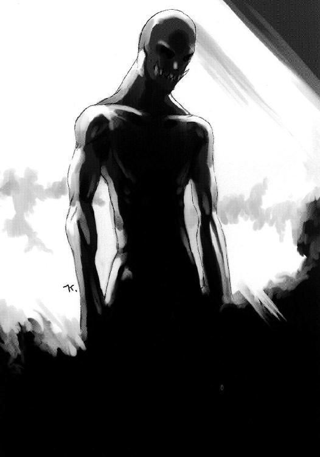

| A/Bエクストリーム CASE-314[エンペラー] (電撃文庫) | |
| 高橋 弥七郎 | |
| (2014) | |
本書（電子版）に掲載されているコンテンツ（ソフトウェア／プログラム／データ／情報を含む）の著作権およびその他の権利は、すべて株式会社ＫＡＤＯＫＡＷＡおよび正当な権利を有する第三者に帰属しています。
法律の定めがある場合または権利者の明示的な承諾がある場合を除き、これらのコンテンツを複製・転載、改変・編集、翻案・翻訳、放送・出版、公衆送信（送信可能化を含む）・再配信、販売・頒布、貸与等に使用することはできません。
計器類がわずかに灯る闇の中、二人は語り合う。
「なあ、ボギー」
「......」
「こうやって並んでるとよ、本当に区別なんかない、そう思えてこねえか」
「......何が」
「俺たち......人間とロボットが、だよ」
「哲学書でも読んだ？」
「いんや、レトロムービー。昨日、キットの買い物に付き合って、飯食って、んで俺がもっと遊ぼうぜって誘ったらさ、キットも『いいよ、だけど給料日前なんだから......』」
「アンディ、話が逸れてる」
「......楽しい美しい思い出を、ここぞとばかりに披露したい男心が分からんのかね、キミは」
「『人間とロボット』」
「おっ、乗ってきたな。ええと、そう、俺たちはほとんど同列だよな」
「いいことだ」
「レトロムービーなんかじゃ、よくどっちかが支配したり反乱したりしてるってのによ。うまくやってんじゃねえの、俺たちの方は」
「ん......ロボットが人間と同権を持てた理由は三つだ。一、技術が人に追いついたこと。二、人間が技術に順応したこと。三、社会の余裕」
「あー、二つは分かる。まずニューロン・ドームは自然脳と生成過程が違うだけで、機能的には同じってこと。んで次が、人間も改造でスペックアップができるようになって、ロボットへの劣等感がなくなったってことだろ。でも、なんだよ、その最後のシャカイノヨユーってのは」
「人たり得る物を生むことを技術が可能にしても、それを受け入れるだけの余裕が人間社会の側になければ、その存在は封殺される、ということだよ。今は幸い、そうじゃなくなった」
「ふ～む......要生存剤培養槽の整備で食うには困らなくなった、権利兌換制を導入して社会は『去るを追わず、入るを拒まず』の自由意志競争化した、おまけに〈ゾーン〉で活用空間は無限大、と......なるほど、ロボット君たちを入れてやってもいい、って思えるようにもなる好条件だわな」
「人間は、余裕がなければ優しさを持てない。至上の価値を吹聴されている人道も倫理も、所詮は余裕の消費行動に過ぎないよ。貧窮すれば、無視される」
「ヒュー、手厳しいね」
「ただの事実さ」
「そんなにご同類に冷たいと、せっかくの天然モノが凍っちまうぜ、サイボーグ『ボギー』」
「君が生き生きしすぎなんだよ、アンドロイド『アンディ』」
そのとき、通信機が元気のいい少女の声を、彼らの元に届けた。
《突入予定空域に到達。ディビジョン・エクスターミネーターＡ／Ｂ、発進！》
「どーぞ」
二人の声が重なり、そして闇が開いた。
《幸運を!!》
弾丸のような、二つの飛翔。
曖昧な明暗に行く手も霞む空を貫く、二つの飛翔。
位置を上下わずかに違え、排気炎も吐かず、噴射煙も引かず、ただ驀進する。
二つの、死神のように不吉な、黒金色の強化服。
無表情な仮面、武骨な四肢、大きく張り出した両肩、これ見よがしの武装......その全容は、腹に筒を抱えて飛ぶ蝙蝠を思わせる。
足下には、緩やかな湾曲に彼方を隠す鈍色の装甲板が延々、大地にも似た存在感を持って広がっている。その装甲板の後ろに流れ行く様が、死神たちに飛翔の恐ろしいまでの速度を実感させる。
長時間、機能を全開にしたままの両肩の荷重力推進機が悲鳴を上げている。
身を護る空力制御バリヤも耐久許容限界ぎりぎりだ。
張り詰めているものを眼前に置く感触が背筋を凍らせ、頰を熱くする。
しかしその頭の中、戦いに必要な部分は、異様なまでに冴々としている。
それぞれの意識に計器を溶け込ませた、本人にしか解けないパズルのような融合視界に灯るカウントが、ダウンしてゆく。
（３、２、）
（さーん、にーい、）
強化服の腹に据え付けられている〈ジャックポット〉大口径プラズマ火砲の長い筒先が、そろって標的の出現予定座標を指向している。
（１、）
（いち！）
バゴッ、と片方の死神の腹から、エネルギーの怒声をあげてプラズマが飛ぶ。
（０）
一瞬遅れてもう片方の死神の腹からも、プラズマが奔る。
遙か前方、装甲板が弾けて、中から『何か』が飛び出そうとする瞬間、
先行したプラズマが、その『何か』をぶち抜いた。
「！キュキュキュ■ビュ!?」
『何か』が、機械の作動音を幾重にも重ねたような耳障りな絶叫をあげて、巨体をひねり出す。その瞬間、次のプラズマが当然のように、どでかい穴を空ける。
「・・■─・・・ギュ！」
続け様の砲撃に身をよじったその『何か』は、機械とも生物ともつかない奇怪な物体だった。コードやパイプに内臓を混ぜ合わせたかのような白っぽい体組織は、無機質特有の乾いたざらつきを持っているが、同時にやわらかくのたうってもいる。
さらに異様なのは、その怪物の胴体（？）の先端に、金属製の頭蓋骨が、触角のように掲げられていることだった。
それが、さっと巡って周囲の状況をつかむ......前に、凄まじい爆発が断続的に起こり、怪物は業火と衝撃波に翻弄された。
それは、死神たちが通過のついでにばらまいた〈ホットビーンズ〉小型散布爆雷の仕業。
怪物があげる三度目の絶叫も届かない遠方で、死神たちはスラスター全開噴射の力技で反転運動を行ない、標的への驀進を再開する。
その一つ、黒金に青いラインと【Ｂ】の文字を刻んだ死神が、指向光通信で平淡な声を送る。
《アンディ、も一つ》
《あい、さぁ！》
黒金に赤いラインと【Ａ】の文字を刻んだ、もう片方の死神・アンディが、こっちは威勢よく返した。
各々、〈ジャックポット〉の砲口を標的に指向させているが、装甲板の湾曲に沿って飛んでいるため、まだ射界は得られない。
と、融合視界内に警報が走る。
【Ｂ】の死神は、軽く確認する。
（高熱源反応、誘導路は......正面）
怪物の持つ熱線兵器の筒先が自分たちに向けられている、ということだ。
互いに射界を得た瞬間が勝負だ。
アンディは苦笑した。
（ちっ、反転がちいと真正直すぎたか......しゃあねえ、回りこむの面倒だしな！）
思いつつ、大きく叫ぶ。
「ボギー！」
《ん》
ボギーと呼ばれた【Ｂ】の死神は、必要最小限の声を指向光通信で返し、思念を凝らす。
（......グン）
思念が、空間を飛ぶ。
互いが射界を得る、その瞬間に。
「・・・■ゴオアア！」
怪物も金属の頭蓋骨から、咆哮とともに真白い熱線を吐き出していた。
が、その高熱の怒濤は、Ａ／Ｂの、はるか頭上を通り過ぎただけだった。
それは、熱線の放射源である金属の頭蓋骨が、
グン、
と半度ほど傾いた結果。
特殊技能者ボギーの『精神力による物理干渉』、いわゆる念動力の発現だった。
「っただき!!」
この間に、外しようもない至近に迫っていたアンディが、トリガーを絞る。
一撃、プラズマが金属の頭骸骨から胴体までを串刺しに焼き砕いた。
まとわり付くプラズマのかけらを振り払って、二つの死神は大きく飛び上がった。
アンディが強化服の中で一息ついた。
《ひゅーう、終わった終わった！ 帰ろうぜ、ボ......》
《待った、転移だ》
《おぉっと!?》
相棒の声にアンディは吐息を飲み込み、融合視界の計器に意識を集中した。
眼下、大地のように広大な装甲板の上で、極微の時空震が起こっている。巨大な燃え滓のようになった怪物の輪郭が、ぼやけ始めている。空間ジャンプ......転移の前兆だ。
仕留めかけた獲物を逃がすのは駆除屋の恥だ。
ボギーは空中に静止し、強く静かに、言う。
《止める......！》
その語尾に力がこもった瞬間、怪物のぼやけた姿は、己を覆っていた泡をはじけさせられたように、唐突に輪郭を取り戻した。
一座標に完全固定した自身を震わせることで周囲に空間のひずみを生み、そこに滑り込む。これが判明している限りの......分かったような分からないような、転移の原理だ。この時空震を起こしている状態は、空間のひずみが壁となって、互いに何もできなくなるのだが、例外が一つだけある。
つまり、ボギーの『精神力による物理干渉』、念動力だ。
この力は、完全固定状態を揺るがし、時空震の発生要件を失わせ、空間律を補正回復させる云々......まあこれも要するに、転移を邪魔する、ということだ。
ともかく今や、怪物の輪郭は元の存在感を持ってうずくまるのみ。
《お引き止め、どーも！》
アンディはフェイスガードの下で大きく笑みを作った。特殊技能者たる相棒のフォローは、いつもながらありがたい。
「ほいじゃま、改めまして盛大に!!」
アンディは叫ぶや、逃走を封じられた怪物に向けて、右二の腕に外付けされた筒型の簡易ランチャーから、クルミ大の砲弾を射出する。
ボゴッ、と緊張感のない音とともに怪物にめりこんだ砲弾から、強酸化エチレンの濃密な霧が噴射される。その霧が怪物の体内から周囲をコンマ数秒で満たし、
爆発!!
「ブラボー！」
アンディは衝撃波と高熱の中で消滅する怪物に、ひどく陽気な弔辞を投げ付けた。
膨れ上がる大火球を見るボギーは、わずかに首を振って、呆れた様子を示した。
「......〈パニッシャー〉気化燃料炮弾......過剰サービスだ」
「なあに、〈ジャックポット〉でぶち抜かれても転移したがるような元気モンだ。過ぎたくらいがちょうどいいのさ」
「天にも昇る気分、か」
「そーゆーこと」
アンディはにやりと笑って返した。
言い合う間にも、二人の両肩の荷重力推進機は、運動状態を『上昇』に変えている。
低速で舞い上がる彼らの周囲には景色がなく、ただ無機質な薄明かりが空間を満たしている。その不思議な眺めが、じわじわと先細りするような奇妙な圧迫感を増していく......と、やがて複雑な光の乱反射が、その圧迫感の正体を視覚の中に現した。
彼らは、巨大な球体状の空間の中にいたのだった。
薄明かりは、この球体の壁面から放たれているが、物質の持つ存在感が、この壁にはない。まるで光そのものが彼らを包んでいるような、しかしいかにも頼りない、それは曖昧な壁だった。
一方で、二人の足下には、その壁とは逆の......遠ざかりつつもなお、大きく己を誇示する鈍色の物体がある。彼らがその表面を飛んでいた時には大地とも感じられたそれは、やがて巨大でいびつな金属塊としての全景を現す。薄明かりの空間の底を占めるそれは、まるで鋼鉄の心臓だった。
これこそ、最も高効率の発電機として世に普及する〈対固定単極子循環炉〉。発明者の名を取った通称〈カーソン・リアクター〉だった。
ボギーはその全景に一点、黒々と穿たれた穴を見つけて、強化服の肩を小さくすくめた。
「やれやれ、あれじゃ自動管制区画は丸ごと入れ替えだね」
穴を空けた張本人は悪びれた様子もない。お気楽に答える。
「七面倒臭い破損部分のチェックも省ける、新型区画を入れて機関管制もより円滑になる、おまけに見栄えもよくなる。いいことずくめじゃねえか」
「社長にもそう言いなよ」
「薄給をこれ以上削られてたまるか」
その二人の掛け合いに、
「ほらほら、漫才それまで！」
と、元気のいい少女の声が割り込んだ。
二人の頭を押さえる形で、宙に浮く全長一〇メートルほどの砲弾型の機体が現れる。
連合治安軍から謎のルートを通って彼らの会社に払い下げられた、最新鋭のマーベル級強襲突撃艇。社では〈チャリオット〉と呼んでいる、無骨な兵員輸送のための小型浮遊艇だ。
そのモスグリーンの機体のコンテナ両側面には、朱に白の縁取りで、でかでかと『ディビジョン駆除商会』の文字が主要十言語で並べ書かれている。はっきり言って、違和感が爆発していた。
「さっさと帰るわよー！」
少女の声とともにその後部ハッチが開いて、無骨な回収用アームが二つ突き出された。空間認識器官で互いの相対位置を計測、同調するや二人を素早くつかみあげて、艇内に引き込む。
回収された二人は、強化服の強制排除機構によって乱暴に、コンテナ内部の乗員デッキへと、剝き身で放り出された。
「うぉわっ！」
「つっ！」
二人はこの、後ろから蹴り飛ばされるような強制排除機構が、当然好きではない。
彼らを追い出した強化服はすでにハンガーで幾つかのブロックに別れて自動整備状態に入っていた。着装しているときは頼もしい〈ＰＳＧ[I]２ ブラックゴースト〉全制空戦用強化服の面相も、追い出された後では、やけに酷薄に見える。
この酷薄な二つの死神を壁画のように塗り込めて奥一面を占めるハンガー、そこから伸びるパイプとコード、両側面の壁をほとんど埋めてそびえる各種武器ラック等、狭苦しいコンテナ内は見事なまでの殺伐さで彼らを迎えていた。
そこで唯一平らな場所、すなわち床の上に座り込んだ二人は、各々打った場所をさする。
「ちっくしょう、そういつもいつも強制排除するこたねえだろうが！」
アンディは不満たらたらにインナースーツの頂を引っ張って、汗だくの頭を出した。硬そうな金髪がばらばらと広がる。年の頃は二十前後。大柄で荒削りな、男前タイプの青年だった。全体に子供っぽい明るさと軽さを持っている。印象としては大きなやんちゃ小僧といったところか。
「......も少し優しくしてほしいな」
同じく頭を放り出したボギーがため息をついた。こっちは年の頃十六、七で中背細身の少年。ざんばらにした焦茶の髪に尖った輪郭、鋭い目線と、妙に荒んだ容貌をしていた。言葉や動作の端々にこなれた雰囲気があり、少年という生き物の持つ頼りなさが全く感じられない。
言いつつ立ち上がって埃をはらう二人に、
「効率優先！」
と、また元気のいい少女の声が。
ハンガーの対面、デッキの入り口から、昔の板金工が使うようなごつい鉄の保護面が突き出された。それがカコン、と上に跳ね上がって、あどけなさの残る少女の顔が現れる。整った顔立ちをしているが、まだ美人というよりは可愛らしいのレベルだ。
「いつ次の仕事が入るか分からないでしょ？ 機械でできる整備は輸送中に済ませとくの」
少女は、色気のない作業服を着込んだ小柄な体をきびきびと動かして、二人の間を通り抜ける。歩くたびに、ひっつめて後ろに垂らした髪が尻尾のようにぱたぱたと跳ねた。最後に小気味よく調子を付けて、ハンガー脇のディスプレイを覗き込む。
その小さな背中に、アンディが不満げな声をぶつけた。
「次い？ よしてくれ、この二日で三件だぜ。過重労働だ」
天井を這うパイプにぶら下がるように腕をかけて、子供のように駄々をこねる。
「な～、キットからも社長に抗議してくれよ。この会社は社員へのいたわりが足りねえ、って」
「やあよ。あんたと違って、このサーキット様は優良社員で通ってんだから」
少女『サーキット』、略してキットはあっさり拒否し、画面に指示を打ち込み始めた。
武器ラックにもたれかかっていたボギーが、素っ気なく言う。
「抗議なら一人でハンストでもしなよ。誰にも迷惑がかからない」
「空腹は分解処置の次に嫌いだ！」
アンディは、はっきりきっぱりと答えた。
「補助燃料の摂取なんかにご執心かい、ミスター・アンドロイド」
「へ、おめえの方は味気のねえ人生を送ってるみてえだな、ミスター・サイボーグ」
二人は、きらりぎろりと睨み合い、また薄く大きく笑い合う。
そこにキットが、画面から目を離さずに声をかける。
「でもアンディ、あんたぶっ放すのは『三度の飯より好き』なんでしょ？」
画面に表示された戦況記録によると、アンディの弾薬消費量は、最後の一匹との戦術判断が出たあと、異常な上昇を示している。例によって。
アンディはようやくぶら下がっていた手を放して、真剣に考える。
「僅差だけど......ま、そうだな」
「あんたの仕事はぶっ放すこと、何の問題もないじゃない」
「好きなことにも適量ってのがあんだよ」
「よく言うわ。ご飯は底無しに食べるくせに」
「飯に適量があるか！」
「......やれやれ」
ボギーは二人のじゃれ合いを置いて、さっさとデッキから出た。
その先は、やはり狭苦しい操縦室だ。
キットの空けた左側前部の機長席に飾ってある猫の人形以外は、全くの実用一点張りの造り。元が軍用なのだから当然ではある。
ボギーは自分の指定席、右側後部座席の二人用シートに倒れこんだ。
すぐにアンディもやってきて、大柄な体をその指定席、ボギーの反対側の左側後部座席に沈み込ませる。
「ちぇ～っ、なんでえなんでえ、みんなして社会弱者のロボット君をいじめやがって。人権擁護協会に、ウチの会社は霊魂原理主義者の巣窟です、って訴えてやろうか」
霊魂原理主義者というのは、アンディのような人造の存在も要件次第で生命になり得る、という一般常識を、未だに受け入れようとしない頭の固い連中のことだ。もちろんボギーやキットは違う。
ボギーはその濡れ衣に、寝転びながら簡単に返す。
「社長に名誉毀損で逆告訴されるだけだね」
「そうそう」
当座の処置を終えたらしいキットが、デッキから出てきざま追い討ちをかける。
「社長ならやるわよ。賠償が只働きだけで済めばいいけど」
「う～」
うめくアンディを無視して、キットは機長席についた。手慣れた動作で上下の計器を操作して自動操縦を解く。いつものように、マニュアル操作を規定付けられている境界面通過の、きっちり十秒前。
「境界面までヒト・マル。出るわよ」
「どーぞ」
Ａ／Ｂがハモって返事する。
キットが保護面を下ろした。境界面越えは無害だから、その対策というわけではない。単にこのゴツい保護面が、無改造で融合視界を備えていない彼女の通信機器だからだ。軽合金製なので見た目ほど重くはない。
本人もサングラス程度に思っているらしい。ボギーは以前、可愛いワンピース姿の彼女が、跳ね上げた格好のコレを装着したままアンディとデートしている所に出くわして戦慄を覚えさせられたことがある（無論、その場は他人のフリをして足早に立ち去った）。
その保護面の網膜投影装置が、キットに〈チャリオット〉の全状況を伝達する。
「ゴ、前」
上昇する〈チャリオット〉機体上面を、壁面が放つものとは違う、淡い虹色の光が照らし始める。その光は、目指す球体内部の頂点をわずかに削るように張られた、直径十四、五メートル程の、虹色の水面のようなものから来ていた。
「境界面、通過」
キットの声とともに〈チャリオット〉はその虹色の水面、『境界面』を越えた。
と突然、
世界が変わった。
くぐったはずの虹色の水面も、彼らを包んでいた球体空間も、足元にあったはずの巨大なリアクターも、一つのものを除いて、全てが大空になっていた。頭上には、鋼鉄とコンクリートの構造物が、無限を錯覚させる規模で広がっている。
空が足元に、地が頭上にあるのだ。
そして、その足下の空に、異境の名残のようなものが一つ、残されている。
消えた虹色の境界面を縁取る形で、煌々と白く光り輝く、巨大な光の輪......それはまるで天使の輪のようだった。
「〈ゾーン〉離脱。機体傾斜修正」
キットの操作を受けて、〈チャリオット〉は機体をくるりと無造作に引っ繰り返した。天使の輪が頭上に現れ、機内の微妙な違和感が消える。
「重力制御、通常値安定......ふう」
キットは緊張を解いた。ボギーとアンディも、
「無事帰還、か」
「いつもながら染み入るぜ、麗しの〈ゲンセ〉の眺めはよ！」
とそれぞれの機能で外部映像を得ながら呟き、また叫んだ。
世界の光景が、正常なものに戻っていた。
とんでもなく見事な朝。
頭上、雲もまばらな蒼天がおおい、足下、澄んで冷たい空気の底に、連合でも有数の治安軍基地・ジェムニ記念軍港が大地そのもののような威容を誇示している。
〈チャリオット〉の真下には、彼らが駆除作業を行なったリアクターを動力源とする重航宙母艦が、どっしりと乾式ドックに鎮座している。天使の輪の『見えない向こう側』、〈ゾーン〉から動力を受給する装置である大レンズを中心に据えた甲板の上で、彼らの帰還に気付いた乗員の幾人かが、手や帽子を振っていた。
キットはそれに機体をバンクさせて答えた。答えつつ通信をオンにして、軍港管制に音声だけで一報入れる。
「ジェムニ・コントロール、こちらディビジョン・エクスターミネーターＣ。駆除作業完了。被害状況を転送する」
「ジェムニ・コントロール、状況了解......派手にやったな」
声に苦笑をこめる通信手に、キットもくすりと笑いつつ返した。
「毎度のことと諦めて。苦情は社にどうぞ」
「そうする。帰ったら美人秘書によろしくな、ディビー・ＥＸ─Ｃ。交信終了」
「苦情と一緒にご自分でどうぞ。交信終了」
キットは通信を切ると、再び自動操縦装置を、今度は社までの航路を打ち込んで立ち上げた。シートを倒して思い切りのびをする。
「さあ......って、お仕事終わり！ 帰るまで寝よ～っと」
その真上から、同僚との親睦を深めるべく、アンディが飛び掛かり、
「俺も～ッゴハッ！」
そして、あごの下に安全靴の蹴りを喰らってひっくり返った。その上からさらに、鉄板入りのストンピングが容赦なく降りかかかる。
「この、この、エロボットー!!」
うるさげな声が、一応の義務のようにつっこむ。
「......安眠妨害」
「す、好きでやってんじゃないわよ、この、このこのこの！」
「おおお、俺は大好ギャッ!!」
〈チャリオット〉は己の中の騒動に構わず、一路空を貫いて飛ぶ。
◆
人類は、あるとき妙な発見をして、妙な発展を遂げることになった。
それは、外宇宙航行のための推進機関の研究中、実験とは全く関係のない、ある稀少粒子が、奇怪な現象を起こしたことに端を発する。
この現象に出くわした科学者たちは最初、奇跡の顕れかと思ったという。
実験装置の上に突然、煌々と輝く天使の輪が現れたのだから無理もない（難しく言うと、『複数のエネルギー振幅を得た粒子が、空間にエネルギーを再放出し、それが一定の輪形軌道に、粒子を中心とした二次元状の円としてではなく、粒子を頂点とした円錐の底面円周として、周回を始めた』、となる）。
輪が装置の上に現れたのは、与えられたエネルギー振幅のバランスが生んだ、単なる偶然だったのだが、しかしこの現象が人類にもたらしたものを考えると、意味深な偶然といえなくもない。
なぜなら、この不思議な輪は、その内側にとんでもないものを持っていたからだ。
異空間・〈ゾーン〉への抜け道、『境界面』である。
〈ゾーン〉は、境界面を頂上部の断面に切り取った球状の、またその面を天頂に、外界とほぼ均衡する重力まで持つ、その内に何も存在しない、まさに『空間』だった。
そして、この空間は、エネルギー量に比例した距離を稀少粒子から取る『天使の輪』（結局、正式な名称となった）とともに大きくなった。理論上では、無限にさえ。
天使の輪の内にある境界面からしか入れず、我々が住まう世界〈ゲンセ〉（とある文化圏の古語から採択された呼称）からはその存在の欠片もとらえられない、しかし厳然として輪の向こうに広がる異次元ポケット。
ある者は〈ゲンセ〉の拡張であると言い、ある者は極小の異次元への接続であると言い、またある者は行く先に届いていない中途半端な次元間通路であるとも言ったが、結局のところ、現象・原理そのものの解明は進まず、運用の方法だけが発達していった。
稀少粒子の捕獲法の確立、〈ゾーン〉展開機関の完成とその安定性向上、利用法の模索......
そして、人類は得た。
発生が容易で、内包物の重さもない、持ち運びさえできる、とんでもない空間の余裕を。
すでに地球上の生活空間が飽和状態にあった人類は、その膨張先を当然外......つまり宇宙に求めていたが、〈ゾーン〉の発見はその向きを全く逆にしてしまった。
宇宙は、ロマンあふれる『無限の開拓地』から、ただの『巨大な鉱山』へと落ちぶれ、そして地球は、『決して満腹しない胃袋』になった。
人々の生活で〈ゲンセ〉に必要なスペースは、ほとんど〈ゾーン〉発生機関分だけでよくなった。何もかもがこの便利な空間に飲み込まれ、地球の景観はやけにすっきりしてしまった。その例外は、〈ゲンセ〉で物理的な運動が必要な、交通機関と兵器くらいのものだった。
人類は、ついに自分たちを受け入れてくれる理想郷を見付けた......ように見えた。
ところが、
それとも、もちろん、と言うべきか。
世の中というのは、うまい話だけで事が済んだ試しがない。
無菌の理想郷と思われた〈ゾーン〉には、厄介な怪物が巣食っていたのだった。
〈ゾーン〉内の大エネルギー所在地のみに現れ、破壊と機能不全をもたらす、怪物。
人はこの怪物に、前現代の大戦で同様の悪事を働いたとされる空想上の魔物の名を付けた。
〈グレムリン〉と。
◆
環太平洋地域の西の縁、南北に長い島嶼区画の主要都市にあるディビジョン駆除商会。
その社長室に、Ａ／Ｂは帰ってすぐ出頭した。
依頼者の被害額が少なければ出頭はせずに済むが、そうなった試しはない。よって結局、これは二人にとって恒例行事と化していた。
その行事の開催場所である社長室。
自身の居場所であるマホガニー製の大机に置かれた『社長』の立て札を、まるで彫像の題名であるかのように思わせる、完全無欠の社長の姿をした男がいる。定番の美人秘書まで、きちんと傍らに立たせていた。
その男の、伸びのあるいい声が、机の前に突っ立つ二人組にかけられた。
「アンディ君、ボギー君」
責める調子ではない。どころか、選挙前の立候補者が街頭演説で見せるような、胡散臭い明るさに満ち満ちている。
「なんでしょー、社長」
「はい」
自然・人造含めた『人類』社会に、諸権利と生活保障水準を引き換えにする『権利兌換制』（逆に、多くの権利は、相応の義務を伴う）という名の、自由意志による参加と競争が根付いて長い。
世間に出ているほぼ全員が、自分なりの思惑に沿って前進している。
その望む居場所を得るため、人は能力と同等に、あるいは以上に、人格の確立......つまり、どれだけ人間ができているか、を求められている。
こんな社会で生きる者の中には、妙なこなれ具合を見せる人間が、たまにいる。
社員七名、超零細ながら繁盛しているディビジョン駆除商会。そのオーナーにして経営責任者......ひらたく言うところの社長、『ディビジョン』。
この、スーツを上品に着こなす四十がらみの紳士は、まさにその典型だった。
「キット君の報告書と軍港司令部からの事後通達に、先刻目を通したのだが」
「見事なもんでしょ？」
「任務は完遂しています」
教育方法の超効率化によって高等専門知識を得ることが容易くなったため、希望の職に就くことにも基本的に制限はない（年齢さえもだ）。しかし、得た知識を現実の問題にどう適用、応用してゆくか、という知恵ばかりは教育の仕様がないので、結局その職に向いた者や、経験則を持つ者が実績を上げ、人生を楽しんでゆくことになる。
この、風格を漂わせる骨太な容貌に、余裕の笑みを絶やさない男は、まさにその典型だった。
「たしかに、見事に、完遂しているもぐ」
もぐ、というのは、ディビジョンが伊勢エビの剝き身に食らい付いた音だ。その伊勢エビと同じ皿には付け合わせとして、なぜか分厚く切ったようかんが山積みに盛られている。二人は彼の昼飯時に呼び出されたのだ。
ディビジョンはエビをうまそうに飲み込むと、行儀よく口元をナフキンでぬぐった。
さて、と再び切り出す。軽い口調で、遠回しに。
「参考までにきくが、重航宙母艦搭載級の〈カーソン・リアクター〉自動管制区画が、いくらするか知っているかね？」
「伊勢エビとようかんは合わないんでは？」
「そのようかん、僕らに出されるときの倍は厚いです」
沈黙。
ディビジョンは、特にめげたりひるんだりする様子も見せず、続けた。
「君たち二人を、軍の札付き部隊や、とても名前を明かせないような非合法組織から引き抜いた私の判断は、間違っていないと思う」
たまたま出た話題に、Ａ／Ｂは横目で視線を合わせ、また外した。相棒とはいえ、社に来るまでの互いの経歴は何も知らない。知ろうとも思わない。各々適当に返す。
「はいまったくそのとーりです」
「自分の過ちを謙虚に受けとめる姿勢は、人として大事です」
「いや、私の判断は、神も運命も超える宇宙の絶対意志だ」
また、沈黙。
二人が一向に『そうですね』と言わないので、ディビジョンはさらに続けた。
「間違っていないとは思うが、今週の黒字は......どれくらいだね、エリー君？」
ディビジョンの右後方に控える社長付き秘書（といっても秘書を付けているのは社長だけだが）、エリーこと『エレメント』は、たしかに美人の秘書だが、そうくくられる人種には珍しい、気さくで優しいお姉さんである。ショートの金髪に大きな丸眼鏡、年は二十代半ばのはずだが、当人の申告はない。優しい微笑がチャームポイントだ。
その微笑を社長に向けて、エリーは答える。
「はい。この一週間十八件の総計、諸経費差し引きで......今、社長がお飲みになられている玉露分くらいです」
「番茶に切り替えようか」
「はい。［せみ屋］のバーゲン品がストックしてありますから、今日からでも」
「いや、せめて残り全部使ってからにしよう」
「はい。残りあと五杯分ほどです」
「昼食時だけに出してくれたまえ。そうすれば五日......」
ボギーが、だらだらと続く間の抜けた会話を遮った。
「社長、茶飲みついででいいですから、話の続きを頼みます」
「ああ、そうだね......それで、だ。いかに黒字とはいえ、その程度では我が社は立ち行かない、ということだ」
ディビジョンは湯吞みを取って、いとおしげに玉露に口をつける。
「ふ～っ。今の所は、とある方法で当座の経費を稼いでいるが、治安当局にも協力している手前、乱用は慎まねばならない」
「......とある方法？」
ボギーの質問は無視された。
「それでなくても、社の運営、機体の整備、私の快適性追求、弾薬の補給などの経費は、突然どこで跳ね上がるか分からない流動的なものだ。今回のようにぎりぎりの稼ぎばかりでは、非常にまずいのだよ」
「なんか、変な項目が混じってませんでしたか？」
アンディの質問も無視された。
「そこでだ。たった今、少々ナイスな依頼があってね。受けるべきか迷ったのだが」
ボギーが簡潔に言う。
「迷うほどならやめましょう」
「いや、迷いは提示された報酬の額の前に一瞬で吹き飛んだよ。ちり紙のごとく」
アンディが、眉をひそめて言う。
「ちり紙、って......俺たちの生命の重さの例えですか？」
「二枚一組だ。いい例えだろう？」
さらに沈黙。
数秒の静止を経て、またまたディビジョンが口を開く。今度は分厚いようかんを優雅にフォークで刺しながら。
「ともかく、物騒で危険な依頼だが、社の存続のためにも頑張ってくれたまえもぐ」
ボギーは無駄と知りつつもきいてみる。
「......物騒で危険？ さっきはナイスとか言って......」
「空耳だろう」
『たった今、少々ナイスな依頼があってね』
とアンディが何食わぬ顔で内蔵のレコーダーで再生したが、ディビジョンは、にっこり笑って、一言。
「詳細は追ってエリー君に届けるさせるよ」
『～ナイスな依頼ブツッ』
「その昔、『こたつこそ至高の安らぎ』という名言を吐いたネコがいたのだ」
とアンディは言った。
「その偉大なるネコ氏に敬意を表して、俺もこたつを愛用するようになったのだよ、諸君」とまた言った。
つまりは冬の地上社屋待機室にこたつを持ち込むための言い訳なのだが、幸い社の連中は、世の真理を知るネコ氏に敬意を表することにおおいに協力的で、結果、待機室のど真ん中には、特大のこたつが据え付けられている。待機室は二十畳敷きで、床の間台所トイレ付き、窓は障子張り。果ては神棚まである純和室の造りなので、こたつはむしろ必需品のようにも見えた。
今そのこたつは、壁掛けスクリーンを見入る社員たちによって埋められている。
スクリーンには、この日最後の獲物......金属の頭蓋骨を掲げた異様なグレムリンの映像が、画面のタイムカウントと一緒に行きつ戻りつしている。
「これだ、とっつぁん......どっかから取り込んだんだと思うんだけど、どうだい」
上下ジャージに水玉どてらという生活感あふれる格好のアンディが、せっせとミカンの皮をむきながらたずねた。画面のコントロールは自前の内蔵発信機で行なっている。
画面が頭蓋骨のアップで止まった。画像が修正され、陰影をはっきりさせてゆく。
「ほほう......触感引き込み用のジャックが空いてるな。外装用フレームじゃない。元は皮膚をかぶっていたはずじゃが」
画面の対面という一番いい席に陣取って、電子合成の声で答えたのは、露骨で無骨な鉄の集合体。レトロムービーから抜け出た作り物......のように見える彼は、しかし歴とした元・自然物である。
コードネーム『フォートラン』、通称とっつぁん。今時珍しい機械そのものの体でいるのには、何か深い訳があるらしいのだが、この社における通例として、誰もそのことを詮索したりしない。ただ、この鋼鉄製の老人が神がかった腕前の技師で、社の機器整備担当重役を務めている（といっても、下僚は助役のキット一人きり）、という事項だけを知っている。彼らにとっては、それで十分なのだ。
とっつぁんの頭部はまるごと、古臭い純二次元投影モニターである。その、いかにもな頑固親父の画像が映し出されたモニターが回転した先、こたつの端でサングラスの男が、
「あわわっ、まだ三万メートルだろ、なんでヨレんだよ......！」
などと目の前のポータブルテレビの競馬中継に向かって叫んでいる。
「ゴシップ、この映像で検索できるか？」
「ん？」
サングラスの男・『ゴシップ』は、お軽い動作で振り向いた。
情報端末も兼ねる幅広のサングラスがよく似合う、年齢不詳の軽薄そうな細面が、よれよれのワイシャツや緩めたネクタイとあわせて、『できそこないのギャング』（アンディ評）的風貌を形づくっている。
社の経理・財務担当重役を務めているが、これも例によって、経理部・財務部とも構成員は彼一人だけ。つまり彼は社における事務方全般を預かる身だった。しかし社の連中はもっぱら彼を、生きたデータバンクのように扱っている。
「ええと......人工頭蓋ね。そうだな、なにか手がかり程度のもんは？」
「ううむ、強いて言えば、ラインの仕上げがＧ＆Ｂあたりに似とるが」
と、とっつぁんは職人として目を利かせた。
「ふうん、じゃ、その周辺からあたってみるか......検索スタ～ト、っと」
サングラス型情報端末が、ゴシップの融合視界に三連スロットの映像を結ぶ。
「こい、こい、こい......」
ほんの数秒で、スリーセブンが揃った。
「おっ、さすがだねえ、とっつぁん。ビンゴだ。Ｇ＆Ｂ社の〈アーリⅡ〉......欧軍機械化部隊の第四種兵装骨格だとさ」
言うだけ言うと、ゴシップはさっさと競馬中継の観賞に戻る。
「......って、ふおおっ！ 来てる来てる！ 行けっ、アキラチョーラッキー！」
その叫びは無視して、相変わらずミカンの皮を、筋までていねいに剝くアンディが言う。
「欧軍ね。どうりで見覚えがあると思った。向こうで研修やったとき、残骸を見たんだ」
「欧軍の兵器が大洋軍の重航宙母艦の〈ゾーン〉に、な」
とっつぁんは、ごつい手錠のような鉄腕を頭部モニターの下にやって、考え込む。
「やっぱり、他で取り込んでから転移してきた？」
「ふうむ、ちらほらとそういう噂を聞いてはいたが......実際に見るの初めてじゃな」
「それにしても、親方」
と、それまでアンディの対面で、レンズらしき物を磨いていたキットが......彼女は尊敬する技師であるフォートランのことを親方と呼ぶ......口を開いた。どこかのユニホーム柄をしたジャージの上に、アンディとお揃い色違いのどてらを着ている。
「連中、段々取り込むものが高度化してきたと思いませんか？」
「たしかに。あんなにはっきりとした形でセンサー群を形成しているとはな。下手をすると、近い将来、丸ごと人型ってのが出てくるかもしれんぞ」
「おつむの方が兵器についてってねえから、どんな形でも怖かねえじゃんよ」
軽く片付けようとするアンディに、キットは含みのある視線を向ける。
「どうかしら。センサー群や熱線兵器は取り込めたのに、脳組織......ニューロン・ドームは取り込めないって理屈はないわ。その内、あんた程度のおつむしたグレムリンが出てくるかも......って、ああ、それならたしかに楽勝かな」
くすりと笑ったキットに向けて、アンディは必殺技をひそかに放った。
「言ったな、この......！」
「？ ......っあ、ちょ、止めきゃはははっ！」
キットが突然とびはね、暴れ始めた。こたつの中でアンディがくすぐっているらしいが、逃れ出ることができない。
「ふはははは、見たか、我がアンドロイド流秘奥義『片足で捕まえ片足でくすぐるの術』。人間には真似できまい」
「誰がするか」
とっつぁんがモニターの中で呆れ顔を作った。
「お、親っ方っひゃひゃっ、呆れてないで止めてっ！」
「痴話喧嘩に他人を巻き込むな」
「そうそ、馬に蹴られて......ってちくしょうっ！」
冷淡に返すとっつぁんに同調するように、ゴシップが跳ねた。馬券がばらまかれる。
「モーレツハヤミだと!? やっぱ１ワク怪しかったんだよくそったれ!!」
アンディは勝ち誇ってさらに攻勢をかける。
「はっはっは、孤立無援だな」
「ひ、ひ、し、死ぬ!!」
と、その時、脇のふすまに釣られてあった風鈴が、ちりん、と涼しげな音を立てた。
一瞬の間を置いて、ふすまが音もなく開く。
「みんないる？」
奥から、とっくりセーターに長めのキュロットという、くつろいだ格好をしたエリーが入ってきた。
このふすまの奥はエレベーターである。ディビジョン駆除商会の社屋は、〈ゾーン〉普及後の多くの建物がそうであるように、大部分を地型〈ゾーン〉内に収めている。
〈ゾーン〉は境界面を天頂にして重力を生じるので、地上建築物はたいてい地型〈ゾーン〉、つまり天使の輪の発生方向を地面に向ける地下室的方式を取っている。そうすれば境界面越えの際の重力制御がいらず、エレベーターで直結できるし、天使の輪をむやみに空中に出現させて昼夜の感覚を狂わされることもない。
彼らがたむろしている地上社屋は、一階が〈ゾーン〉発生機関と〈チャリオット〉発進用ガレージ、二階が待機室という構造になっている。
外見には看板ばかり大きい貧相な二階建コンクリ建造物にしか見えないが、その直下の〈ゾーン〉内には高層ビル級の活用空間が広がっているのだ。彼らの社員寮（社長も含めて他に寄る辺のある者はいない）もそこにある。社は最下層の社長室から地上待機室までを一本のエレベーターで結んでいるのだ。
そのエレベーターから出てきたエリーが、丸眼鏡に室内の様子を映して言う。
「なに？ 楽しそうね」
「どこが？ 最悪だぜ」
ゴシップがうめいた。次の給料日まで、苦難の道が彼の目の前に延びている。
ようやく秘奥義から解放されてへたばるキットも、へにゃへにゃの声で続ける。
「～そ、そう、最悪～」
「エリー、さっき社長が言っていた依頼の件か？」
とっつぁんは構わずきいた。
「ええ、たった今、その公式要請が星系開発公団から届いたわ。すぐ出動よ」
「うえ～！」
アンディが悲鳴をあげた。
「なに？ 依頼先、公団だったのか？ 久しぶりのでかいヤマか!?」
ゴシップは勢いよく身を起こした。踏ん張れば、特別ボーナスが出るかもしれない。
エリーは頷く。
「大仕事よ。不確定要素だらけで競争者も多いけど、その分報酬も大きいわ」
エリーは全員に、依頼の要旨をまとめた紙を一枚ずつ配った。紙の端には黒い記憶素子が焼き付けられているので、アンディやとっつぁんは一瞬で情報を読み取ることができる。
エリーは、紙が一枚余るのに気が付いた。
「ボギーは？ 全員待機だったでしょう」
キットが答える。
「ベランダでお休み中。今コールを......」
アンディが首肯くのを見て、続ける。
「かけたから、すぐ下りてくるわ」
言う彼女の前で、記憶素子に親指を押しつけて情報を読み取っていたアンディが、ごろんと寝転んだ。
キットはその仕草にふと、何かを感じた。
「どうしたの？」
「ん、いや」
その時、アンディと同じように一瞬で要旨を読み取ったとっつぁんが、
「ほう！ やっと再起動までこぎつけたか」
と珍しく声を弾ませた。
ゴシップも得意の斜め読みで大まかな内容を把握したらしく、口笛を吹いた。
「ヒュ～ッ♪ 改修、終わったんだな。たしかに、これに取り憑かれたら困るわな」
キットも慌てて自分の紙に目を通す。
『依頼──グレムリン駆除（補足事項、来着後説明）』
等、いつもの項目を流し読みしてゆく。
『状態──内部作業員および研究者との連絡途絶』
これも珍しいことではない。
グレムリンは発電施設であるリアクターでエネルギーを吸収し、腹一杯になるとそれをばらまくために周囲を破壊しながらうろつく。その際にエネルギーの伝達や制御装置が阻害されると、単純な通路の通行から境界面越えの機器まで、あらゆる交通機構は動かなくなってしまう。
しかもグレムリンはエネルギーに反応して電波の位相を狂わせる強烈な波長......平たく言う妨害電波まで発生させるので、奥まった区画にとり残されてしまった場合、多くは通信機能にも障害を受けて、連絡不能に陥ってしまうのだ。
さて、とキットはさらに次の項目に目を移す。
『規模──１４０００立方キロメートル・対固定単極子六重循環型リアクター・コードネーム〈ヘクサゴン〉』
ぎょっとなった。
（て、展開〈ゾーン〉が１４０００立方キロ？ 重航宙母艦でも１５００がせいぜいなのに！）
そして、思い当たった。
（......〈ヘクサゴン〉......まさか!?）
たいして重要でもない記号として読み飛ばしていたトップ項目に目を向けた。
『船名──〈エンペラー〉調査開拓航宙船』
「うわぁ......」
思わず声になった。
「〈エンペラー〉？ あの〈エンペラー〉！ 凄い！ あたしたちがその機能回復に一役買えるなんて!?」
その叫びと天井一枚挟んだ屋上で、ボギーは星天を見上げながら、ため息をつく。
◆
〈エンペラー〉。
無邪気な憧れに幾分かの恐怖を混ぜて、この名は呼ばれる。
四年前、星系開発公団は鼻高々に、この巨大な船を人々に披露した。アステロイド・ベルトでの資源採掘と地球への供給を行なう、初の大規模自航ステーションとして。
空間の穴蔵〈ゾーン〉にこもった人類が、久々に外に向けて放つエネルギーの姿だった。もっとも、建造の目的が穴蔵を埋める物を得ることだったのだから、単純に外向きと言い切ることもできないだろうが。
実質は資源採掘船だったこの船は、公には『調査開拓航宙船』との呼称が与えられた。
そして、お披露目の直後、とある事件が、この一種扇情的でさえある呼称をそのまま実行しようとする連中によって引き起こされたのだった。
［星追い］なる武装組織による航宙船ジャック......通称『星追い事件』である。
政治や思想の信条から作られた組織ではない。反政府勢力でもない。ただ、全く単純な夢を果たそうと結束した、有志の集団だった。
その夢とは、
「宇宙へ、無限の宇宙へ、どこまでもゆきたい」
という、純粋で、美しく、無謀で、子供っぽいものだった。
それも当然、というべきか。［星追い］の構成員は、みな十を数年超えたばかりの、夢見る少年少女たちだったのだから......いや、少女少年たち、というべきか。
［星追い］のリーダーは、少女だった。
少女の名は、『偉大なるズールー』。当時十三歳。公団で〈エンペラー〉開発の立案から運用総合計画、設計、建造までを管理主導した、超の付く天才児だった。
また、半ば公然の秘密となっているが、［星追い］の少女少年らは、公団に派遣された、連合政府の極秘特殊技能者機関の構成員だったという（星系開発公団は政府の外廓団体だ）。
実際、このわずか五、六十人程（正確な人数は秘匿されている）の特殊技能者の子らに、〈エンペラー〉建造実務が、ほぼ全て任されていたらしい。〈エンペラー〉はまさに彼女らの船だったわけである。
この子供たちの子供っぽい夢は、しかし精緻巧妙な計画と圧倒的な武力の行使によって実行に移された。連合政府はまんまと〈エンペラー〉を奪われ、危うく仇し子たちの旅立ちを見送る物分かりの悪い親の役を割り振られるところだった。
そう、危うく割り振られるところ、だった。
『星追い事件』は、計画と決行における手際の良さからすると意外なほどに呆気なく、その終幕を迎えた。
事件発生から二十時間後、衛星軌道を脱しつつあった〈エンペラー〉は、機関の不調から軍の部隊の追撃、突入を受け、ズールーはじめ［星追い］構成員、そのほぼ全員が射殺された。
子供の夢は、あまりにも儚く散った。
この、呆気なさ儚さから、悲劇的ともロマンチックともいわれた事件から四年。
修復を終えた船は、再び星天へと舞い上がろうとしていた。
......していたその矢先、またもハプニングに見舞われたのだった。
つくづく、不幸な船だった。
◆
星系開発公団ネウス研究開発本部。
世界有数の技術研究機関であり、また得られた技術によって艦船等の開発を行なう、環太平洋地域における公団の本拠地である。
その、ほんの一部とは思えない、四方見晴るかして地平線のみ、という広大な軍港区の上空。暗夜の風雨を突いて、砲弾のような〈チャリオット〉が飛んでいる。
目指す集合地、ネウス軍港区中央管制塔が、ようやく地平線上に光の線となって現れていた。
その手前にある物も。
「......でけえなあ、やっぱり」
操縦室の天井にある機関銃座から半身を乗り出させたアンディが、ため息とともに言った。
その身は、〈チャリオット〉の速度に倍化された風と雨とに叩かれている。片手に傘をさしているが、当然役には立っていない。インナースーツの上から着たフライトジャケットの上半身も、放り出した髪もびしょ濡れだった。
「やっぱり......？ ふうん、アンディ、実物を見たことがあったんだ......」
機長席で言うキットは、保護面越しに補助情報として外部映像を得ている。時折、映像が吹き荒れる妨害電波の嵐に押されて乱れるが、抱く感想はアンディと同じだ。とにかく大きい。
「さすが機械でハタチのロートル、人生経験が豊富だ」
同じくフライトジャケットを着たボギーが、自分の指定席で融合視界内の外部映像を眺めつつ、からかった。
「誰がロートルだ！ ニューロン・ドームは寿命の間は旧式なんかにゃならねえよ！」
「でかくて恐い眺めだなあ」
ボギーは怒鳴り返すアンディに取り合わず、簡潔に感想を述べた。
〈チャリオット〉の行く手には、まさにその通りの光景があった。
一面、暗雲を天にすえ、重い音を地平まで轟かせる夜の豪雨。
その分厚い水のカーテンを白色に染めて、中空に直径一キロメートルはあろうかという巨大な天使の輪が、不気味に浮かび輝いていた。その真下、輝きを鈍く受ける銀の船体が、特別滑走路に......そびえている。
全長十キロ余、全幅・全高一キロ弱という、質量と体積の化物。その後方に建つ、通常の尺度なら巨大とも威容とも表現できるネウス軍港中央管制塔も霞む、圧倒的な存在感。
〈エンペラー〉調査開拓航宙船。
矢のような美しい流線型。その優美な曲線の内に重力制御・推進機関をちりばめ溶かし込んでいる形態は、この船の設計者が少なくとも美的感覚には優れた人物であったということを十二分に示している。この、雨と光に包まれる人類が作った最大級の動く建造物は、恐怖を秘めた神々しさに満ちていた。
畏敬の念を隠さず、ボギーは真顔で言った。
「地表で見るものじゃないな......まるで、重力の籠に囚われた流れ星だ」
キットがくすりと笑った。
「詩人ねえ」
中に入ってきたアンディが、その肩を叩いた。ずぶ濡れの髪をかきあげ、気取って言う。
「ふっ、水もしたたるいい男......なんつって」
キットは無視した。指向光通信のスイッチを入れる。
《ネウス・コントロール、こちらディビジョン・エクスターミネーターＣ。バーチカル・ランディング・ポート整理空域に到達。着陸許可および進入経路指示を請う》
「......つれなさに 悲しみ混ざる 涙雨......」
「ブラボー」
アンディの悲嘆の一句を、ボギーが短く誉めた。
〈チャリオット〉をポートに着陸させた三人は、差し回しの兵員輸送車で管制塔ターミナルビルへと入った。
星系開発公団は社のお得意さんだ。艦船の〈ゾーン〉設置リアクターに取り付くグレムリンの駆除依頼は度々受けている。どこへ行けばいいのか、三人ともよく知っていた。大きなビルの中を迷うこともなく、ブリーフィングルームとして常用されている会議室の一つへと入る。
そこはかなり広い部屋で、正面の壁一面を使う大スクリーンと、その前に据え付けられた妙に豪華な演壇、それらと向かい合う形で無造作に並べられている椅子の列からなっている。記者会見などにも使われるので、よくテレビにも映っている部屋だ。
椅子は、まだ半分ほどしか埋まっていない。三人は適当な場所に腰を下ろした。
ボギーがさっそく椅子を逆向きにして、背もたれに体を預ける。
「共同十二社、総突入要員数四十七名か......多いな」
アンディの方は思い切り背をそらして、椅子の前足を浮かせている。
「ああ、リアクターの規模が規模なだけに、念を入れてるのかも知れねえが......詳しい状況説明は、こっちでやるってこともあるし......なんか臭うぜ」
「あれだけ大きいのなら、素直に治安軍の部隊を駆り出せばいいのにね。あたしたちがお金で使い捨てできるからかし、っわっ!?」
誰かに後から抱きすくめられて、キットは叫んだ。
「やあ、久しぶりぃ!!」
「んっ？」
「て、てめえ、ヴァンプ！」
「ああ、君たちもいたの」
驚くボギーとアンディに、それは首を回して、いかにもついでのように言った。腕はすでに離して、キットの頭をなでなでしている。
穴一つ空いたつば広帽子とぼろ布のようなマントに身を包んだクズ鉄の塊......のようなそれは、馴染みのサイボーグ『ヴァンプ』だった。所々に錆さえ浮いた棒のように細いフレームに、ぐるぐる巻きの補修テープ......何の冗談か、針金で結わえた装甲板まで見える。
「いたの、じゃねえ！ いつもいつも不意打ちばかりしやがって、悪い癖だぜ」
指を突き付けるアンディにも、ボロのサイボーグは頓着なく答える。
「まま、そう熱くならないで」
アイカメラの一つ、ひび割れている方を点灯させた。ウインクのつもりらしい。
「キットちゃんがあんまり可愛いから、つい抱き締めちゃったんだな、これが」
ヴァンプは危なっかしく椅子を飛び越えると、彼らの、というかキットの隣に腰掛けた。その背に負う〈ネイル＆ピック〉狙撃銃と腰の〈ハードヒット〉重拳銃（両方とも相当使い込まれている）が、重たげにがちゃりと鳴った。
ヴァンプはフリーのハンターだ。通常の駆除屋では見向きもしない格安の依頼や、表沙汰にしたくない裏の仕事を、個人で請け負って生活している。彼らの知る限り、依頼は着実にこなすし、腕も確かなのだが、なぜかその暮らしぶりは見てのとおり。体が資本というなら、この男（？）は見事なまでに貧乏だった。
自然生成脳所有者でありながら人型のボディでないのは、機械体なら多少壊れても目立たないし、放ってもおけるから......というのは本人の弁。まさか本当ではないだろうが、その姿を見ていると危うく信じそうになる。
「好意は嬉しいけど、痛いから今度からは声だけにしてね」
キットは、軽い抗議にとどめた。むやみに明るいこのボロサイボーグは、どうにも憎めない愛嬌のようなものを持っているのだ。
今もヴァンプは大げさに頭を抱えてみせる。
「全身全霊で喜びを表してるのに？ そりゃないよ」
「鉄には鉄のやり方があるってことさ」
というアンディの茶々にも、
「ふ～む、ブリキの造花でも作るか」
と大真面目で答える。
「再会が楽しみ......あ、それより始まるみたいよ」
キットが指差す先、演壇にネウス本部の広報担当官が立った。いつのまにか、周囲の席もほとんど埋まっている。ざわめきは数瞬で去り、場を静寂に明け渡す。
「一人の欠員もなく参集していただけたことに感謝を、エクスターミネーターズ」
広報担当官は、いかにもな整った官僚顔を苦悩に歪めて説明を始める。
状況をデータの伝達で素早く渡さないのは、公団の記者会見慣れのせいだ。データだけ渡してはいさよなら、という『誠意を欠いた』やり方は、マスコミに受けが悪いのだ。
演壇後方にある大スクリーンに、〈エンペラー〉が映し出される。
「すでに概要はお伝えしたとおり。駆除対象は、当社所有する、アステロイド・ベルトでの半永久的な資源採掘および供給活動を目的として建造された航宙船〈エンペラー〉の動力発生機関たる対固定単極子六重循環型リアクター。コードネーム〈ヘクサゴン〉です」
広報担当官は、長ったらしい説明を澱みなく、一気に言い切った。さらに続ける。
「当航宙船は先日、衛星軌道上の無重力建艦ドックで修復を完了、重力圏内活動の慣熟航行も兼ねた物資補給のために当軍港に寄港しました。しかし、昨日２１５１より、〈ヘクサゴン〉内で最終調整を行なっていた作業員二十五名、および警務隊員六十名との連絡が途絶......グレムリンによる機能阻害を受けたものと思われます」
「運が良かったじゃねえの」
アンディが声をかけた。周囲の注視の中でも平然と続ける。
「就航した後、宇宙の彼方でやられるよりは、さ。今ならまだ助けに行けるぜ」
「そのとおり......ですね」
広報担当官の口調が、初めて鈍った。
連絡の途絶した者の中に、警務隊員六十名が含まれているのが問題なのだった。
この事態は、彼らのグレムリンへの対処の不手際、あるいは壊滅によって起こったのだろう。それはつまり、公団の警備態勢への見通しの甘さを露呈したことに他ならない。責任問題や外聞、損益などマイナスが大きすぎて、運がいいなどと喜んでいられないのだ。
複雑な表情のまま、広報担当官は本題に入る。
「......さて、本件の特異性に関しては、興味を持たれている方も多いことでしょう」
その場の全員に緊張が走る。
大スクリーンの映像が切り替わった。六芒星の平面図で、各所に記号や名称が散りばめられている。〈エンペラー〉に動力を注ぎ込む特大リアクター、〈ヘクサゴン〉のものだ。
「ご覧のように、〈ヘクサゴン〉に設けられた、総計六つの施設の中に、生物科学棟と機関保守管理棟というものがあります。生物が地球圏を長時間離れた場合の、〈ゾーン〉の身体的影響についての研究を行なう施設と、言うまでもなく、〈ヘクサゴン〉の保守と管理に当たる施設です」
全員、それが？ という顔をする。
「問題は施設ではなく、それらの中にいる八十五名の内の二名、特定個人にあるのです」
スクリーンに、ふてぶてしそうな顔をした老人が映った。幾人かが、ははあ、なるほど、と声に出す。
「一人はハンス・クルップ博士。生物学、生命工学の世界的権威であり、連合名誉緑星賞を三度も受賞された当代の偉人です。当航宙船の生物科学棟主任として、昨日乗船されたばかりでした」
アンディもボギーも、こんなしなびた爺さんのことなど知らない。しかし、広報担当官の言いたいことはよく分かった。世界的偉人が公団の警備態勢の甘さから死んだとあっては、公団の世間的信用は失墜する。早急に救助に向かわねばならない。
（でも、それならなおさら治安軍に依頼すれば......）
と思う一同の視線の先に、また一つ、映像が出た。
「そして、もう一人」
社員証から抜き出したものらしい。正面を向いた、年の頃二十二、三ほどの若い女性の写真だった。理知的な輝きを放つ瞳が印象的な、かなりの美人だ。
会議室に口笛の大合唱が起こった。アンディももちろん混ざっている。
「機関保守管理棟主任、ユミナ・ヴァンダービルト技師長」
小さな広報担当官の声に、部屋は一斉に静まり返った。
「リオル・ヴァンダービルト星系開発公団会長、唯一の係累にして、ご息女です」
〈チャリオット〉ハンガー内で、キットは〈ＰＳＧ[I]２ ブラックゴースト〉全制空戦用強化服の起動準備をしている。ディスプレイに表示されるコンディションは当然、オールグリーン。
「やっと納得いったわね」
「ん」
ボギーが例によって短く答えた。分離待機状態でハンガー内に吊るされている〈ブラックゴースト〉Ｂ号機の中心に体を据え、手足の先を入れる。
「治安軍の部隊なら、突入したらまず政府の事業......機関の安全確保とグレムリン駆除の方を優先させる。その次は世界的偉人であるクルップ博士の救助......」
その隣、同じ姿勢で〈ブラックゴースト〉Ａ号機に体を入れるアンディが嬉しそうに言う。
「かわい子ちゃんの救出はその次か。その点、俺たちなら真っ先に......」
キットの険悪な視線を感じて、声が小さくなる。
ボギーは構わず続ける。この少年、分析や解説の時には饒舌になる。情感には乏しいが。
「ん。公団が提示した多額の報酬は、優先事項を入れ替えろ、っていう暗黙の指示だ。ご令嬢には元軍人の護衛官が四人も付いてるっていうし、その軍もおっつけ動くだろうけど、救助はなんといっても早さが『命』だ。初動は早ければ早いほどいい」
アンディがもっともらしく首肯く。
「そうそう、一番に駆け付けて感謝のキス」
「着装」
「をもらモガッ！」
キットの指示を受けて、〈ブラックゴースト〉が収縮、合体して二人を中に包み込む。
「チェック、どうぞ」
機械のような無情の声。
「......問題ありませんです、ハイ」
「問題なし」
「了解。武装選択、Ａ号機、どうぞ」
アンディは、おそるおそる前回と同じ、〈ジャックポット〉大口径プラズマ火砲を主武装とした重突撃装備一式を選択する。
「腹装１、〈ジャックポット〉大口径プラズマ火砲」
「了解、どうぞ」
アンディが融合視界の中で希望の武器をマークすると、キットが全体の回路の調律を取りながら、その装備搭載の指示を機器に出す。指示に従って、両壁面の武器ラックから次々と剣吞な兵器が湧き出し、死神に力を与えてゆく。
「背装１、〈ケーキワーク〉短身砲ダブル」
「了解、どうぞ」
「背装２、〈ヘッドシュリンカー〉短針銃ダブル」
「了解、どうぞ」
「腰装１、〈ホットビーンズ〉散布爆雷ラック」
「了解、どうぞ......」
長々と続いたアンディの搭載作業もやがて終わり、ボギーの番が来る。
まず、最初に主武装たる腹装１からなのだが、
「............」
ボギーは少し考えてから、アンディと違う装備を選んだ。
それを見て、キットは少し驚く。
「〈ブルーチップ〉？」
「問題が？」
「ううん、そりゃあ、付けろといわれれば付けるけど......」
〈ブルーチップ〉は、小型多弾倉のミサイルポッドだ。射出後に化学反応で爆発する弾なので山ほど抱えていても誘爆の心配がない、というのがウリだが、射程は短い。弾を食らう可能性がある至近距離での射ち合いにならない限り、あまり役に立たない代物だ。
しかもそのマウント位置は〈ジャックポット〉と同じなので、この頼りになる大砲を下ろさねばならない。もちろん、どんな兵器が有利かというのは状況にもよるが、それでも全体的な戦闘力の低下は否めない。今回はエクスターミネーターには異例の戦闘規模が予測されるというのに......。
それでもボギーは、キットの先手を取って言った。
「勘だよ」
キットもアンディも、特殊技能者だからというわけではないが、彼の勘を信用している。結局、答えは決まりきっていた。
「......了解。まあ、どんな装備でも当たり外れの博打には違いないもんね」
観念するキットに、アンディが付け加える。
「張るのは自分の命だしな」
ボギーも頷いた。
「ん」
言う間にも、小さな三角形で組んだ鎧のような〈ブルーチップ〉が、ボギーの〈ブラックゴースト〉Ｂ号機前面装甲にマウントされる。
数秒で機器の最終動作チェックを完了したキットが、親指を立てて告げる。
「ディビジョン・エクスターミネーターＡ／Ｂ、発進」
「どーぞ」
二人のハモり声とともに後部ハッチが開いて、アームが彼らを豪雨降りしきるバーチカル・ランディング・ポートに下ろした。
周囲でも同様の戦闘準備が行なわれていて、暗夜のポートは豪雨とライトの中、鋼鉄の人影と喧騒を不気味に揺らめかせている。
今回は、〈ゾーン〉内で輸送艇から発進するという通常の方式と違って、戦闘要員四十七名は全員、自力飛行で〈ゾーン〉へと突入する。これは、ネウス研究開発本部の警務隊長が、各社の駆除屋のサポート要員（ディビジョン駆除商会でのキットに当たる）、ＥＸオペレーターらとともに小型の電子統制艦で救出作戦を指揮することになったためだ。
この、急遽決まったという余計なお世話（警務隊の失点を何とか取り返したいのさ、とボギーは意地悪く言った）に、気ままな者の多いエクスターミネーターたちは一様に顔をしかめたが、スポンサーの機嫌を損ねるわけにもいかない。素直に受け入れている。表面上は。
「お二人さん、相変わらずイカしてるねえ」
と、お軽い声が雨音に混じって飛んできた。
「ヴァンプ」
「おっ、リュウセイゴー！ 久しぶりだな」
ボギーとアンディが振り向いた先に、ボロの馬型自律ガンビークル〈メタルリュウセイゴー〉を引いたボロの主人がいる。自力飛行能力を持たない彼は、この機動兵器を翼に天を駆ける。天馬というにはいささか......もとい、かなりみすぼらしいが。
主従ともずぶ濡れで、まるで落ち武者の亡霊のようなヴァンプは、対する二人の、重い輝きに満ちた〈ブラックゴースト〉を、しげしげと眺める。装甲をしたたる雨が、その姿をより恐ろしげなものに見せていた。
「いつも思うんだけど......君たち、その軍でも超がつく機密兵器、どうやって手に入れてんのさ？」
「社長に聞いてくれや。ま、どーせ」
「教えちゃくれないだろうけど」
Ａ／Ｂはコントのように揃って肩をすくめてみせた。
と、その時、雨のポートにサイレンが鳴り響いた。
「電子統制艦が来たみたい。じゃ、あたしはあっちに行くわ」
キットが、〈チャリオット〉から傘をさしつつ下りてきた。
サイレンに導かれるように、小型の電子統制艦（といっても全長は〈チャリオット〉の軽く十倍はある）が、バーチカル・ランディング・ポートの空けられた中央部にゆっくりと降下してきていた。単純な面で構成された寸詰まりの飛行船のような形態をしている。艦橋要員だけで操艦可能な簡易運用型だ。
その様子を見やったキットは、
「それじゃ、幸運を」
と言い置いて、返事を待たずにさっさと行ってしまう。
ボギーは、ん、と簡単に返事し、ヴァンプは帽子を振った。
アンディは、少し寂しげに遠ざかる傘を見送る。
と、その視線の先で、キットが背中を向けたまま、保護面を下ろした。
《言い忘れてたけど》
距離も雨も関係ない声が、彼だけに届く。
《頑張ってね》
ぶっきらぼうな、回路を貫く過電流の如き一声。
警務隊長やＥＸオペレーターらを乗せた電子統制艦が、雨の中を滝登りさながらに浮上する。その艦体下部からは通信ケーブルがのびていた。境界面は通過する光を攪乱する上、〈ゾーン〉からは妨害電波が出ているので、どうしても有線がその通信手段となる。
「全機、離陸！ 本艦に続け！」
ブリッジの中央、指揮官を気取って、警務隊長が号令した。
ゆっくりと浮かび上がってゆく不細工なひも付き風船のような電子統制艦を追って、四十七の機影が一斉に飛び上がってゆく。
その行く手には、光り輝く巨大な天使の輪が。
艦橋で、緊張した声が交わされる。
「境界面通過まで三十秒」
「重力制御開始、現状でホールドします」
「通信ケーブル出入力チェック......異常なし！」
その艦橋の端、他社のＥＸオペレーター同様、申し訳程度にあてがわれたコンソールの前でキットが目をつむり、両手の指を組んでいる。
他者にすがり祈っているわけではない。ただ、無事であるよう願う。
その、無事を願われている側。
巨大な境界面が近付いてくる。その光景に、ボギーはデジャヴュを覚えていた。
上るにつれ、想いも胸の奥から帰ってくる。
人影と光景が閃く。
懐かしい歌が聞こえる。
（......天使の輪 天帝の船 私たちを乗せ......）
「おいおい、境界面まで辿り着けんのか？ なんなら引いてってやろうか」
アンディはメタルリュウセイゴーにまたがって傍らをゆくヴァンプに声をかけた。
主人に劣らぬおんぼろガンビークルは、各部で妙なうなり声や振動を起こしながら、ようやく飛んでいる。ほとんど雨の一粒で撃墜されそうな頼りなさだ。
「馬には馬の意地があるものさ。人に引かれたとあっちゃ、名折れもいいとこだい」
それでも強気に言うヴァンプに、アンディはからかい半分で言う。
「人は人でも機械の人だ。利用しない手はねえだろ」
（運ぶよ果てへ 憧れの彼方へ......）
「そういう自虐的な言い方は感心しないな、ミスター・アンドロイド。『電鋼は血肉に等し』だよ。第一、こっちも機械の馬だ、お気遣いは無用。おいらをおっことしたりなんかしないよなあ、リュウセイゴー？」
主人に答え、ブヒヒン、とメタルリュウセイゴーが首をきしらせる。
「へいへい、麗しい友情を邪魔して悪うござんした。俺たちも負けずに、二つの力を一つに合わせてショート......もといスパークさせようぜ、ボギー」
（見たいなら行こう 知りたいなら共に......）
「............？」
相棒からの、軽く打てば短く痛烈に響く、景気付けの答えがこない。
（どこまでも続く 星を追って......）
「......おい」
ふと、アンディの耳に、機械の駆動音に消え入りそうな鼻歌がふれた。
（......どこまでも続く 星を......追って......）
「......？」
それからほんの数秒。
ボギーから、笑い声がもれた。
「......っくくっ......！」
悲嘆の端のような、憤怒の縁のような、狂喜の欠片のような、声。
アンディの作り物の背筋を、寒気と怖気が通り過ぎた。
思わず、声をかける。
「ボ......」
「皆殺しにしよう」
アンディはギョッとした。
言うところの物騒さに、ではない。
その声の、あまりにらしくない異様な弾み具合に、である。
引き返せない戦場の入り口が、もうそこにある。
電子統制艦からの通信がきた。
《境界面通過まで、十秒！》
アンディはきいていた。チームを組んで以来、初めての言葉で。
「大丈夫なのか？」
「なにが」
ボギーはどうでもよさそうに返した。
「......嫌な予感がするぜ」
「そう」
本音に対する、やはり適当な答え。
《境界面、通過！》
天使の輪が、一本の頼りない糸だけを残して、全てを飲み込んだ。
グレムリンとはいったい何物、何者なのか？
この素朴な疑問について深く考えた者は、ごく一部の専門家以外にいない。
ただ、〈ゾーン〉という人類にとって便利この上ない物置の維持を妨害する、その行為のあるがために、害獣とされている。
「自分たちの側だけの利害で敵味方を識別する......人間のいつもの考え方さ」
とボギーは嘲笑を混ぜて言っている。
それに、グレムリンは〈ゾーン〉内部、それも発電機関などの大エネルギーの所在地にしか現れないので、一般人にはその存在の実感さえ持たれていない。よって、正体探求のための人や費用は出ない。
「世論が後押ししなければ政府というのは何もしないからね」
とディビジョン社長は至言をのたもうた。
①通称グレムリン
②〈ゾーン〉内のみ、大エネルギーの所在地に不定期に出没
③電気エネルギーを吸収して強力な電磁波を発生させ、関係各部所の機能を阻害する
④外見は機器類を溶解・融合させた不定形な組織の塊だが、部分的に生物の形態を模倣していることもある
⑤出現数は概ねエネルギーの規模に比例（政府規格・発電装備一基に付き七、八体）
⑥武装は自己の体組織内で形成するが、稀に既製兵器との融合も見られる
⑦吸収したエネルギーを破壊や運動で消費し、その減衰後また吸収に戻る、というルーチンをエネルギー発生・保持機関の停止まで繰り返す
⑧エネルギー発生・保持機関停止後の消費行動を終えると、空間転移により逃走する
現実としては、これだけが必要な項目で、これにどう対処するかだけが問題だった。
その性質の内、特に②と③がいけない。現在、人類社会の電力供給をまかなっている発電機関のほぼ全機が〈ゾーン〉内に設置されているからだ。
発明者の名とその外見、および構造原理から、『レイ・カーソンの心臓』とも呼ばれる、循環する粒子誘導レールによって形作られる超効率発電機関〈対固定単極子循環炉〉。この巨大な、自己完結した心臓は、中央炉の空間に固定した単極子に粒子流をぶつけ続けることで膨大なエネルギーを生み出す。
しかし代わりに、この心臓は非常にデリケートにできていた。わずかでも不作為の振動や磁気干渉があると、爆発的に過剰エネルギーを発生させ、自壊してしまうのである。安定した空間への設置が、この運営の大前提だった。実際、この機関は、〈ゾーン〉発見前には、様々な制約を持ち、また転送時に莫大なエネルギーをロスする衛星軌道上に設置するしかなかった。
地震も磁気嵐もない〈ゾーン〉は、まさにこの設置のために用意されたような、理想的な設置環境だったのだ。
政府としても、〈ゾーン〉の普及で広大になった生活空間に供給する電力をまかなうためには、やはり同様、〈ゾーン〉にリアクターを設置するのが最も適切、と考えた。
そして、グレムリンは、まさにこのリアクターを狙って現れる。
不俱戴天の敵とは、まさにこのことだった。
とはいえ、これに対処するに警察では装備が貧弱、治安軍はそう簡単には動けない。それに両組織の台所は、世情の沈静化による経費削減で火の車だった。無限に湧く害獣の相手などしていられない。稀にする羽目になっても、その対応は不熱心だった。
そういう事情から、発電・変電所や制御機関を〈ゾーン〉内に抱える多くの企業・省庁等の組織は、対応能力を持った警備員を雇ったり、最低限の監視システムだけを置いて非常時に駆除屋を呼んだりするという、今の体制を作り上げたのだった。
その非常時雇いの駆除屋は、グレムリン対策の手間と費用を惜しむあらゆる組織に重宝がられる、現代の花形職業となっている。
「たまに壊しすぎて報酬とトントンになることもあるけどな」
なるアンディの言い分には、
「......たまに？」
というキットの突っ込みがあった。
◆
電子統制艦と突入要員が、虹色の境界面から出現した。今まで天を目指して上昇していたものが、境界面を超えた途端、まっさかさまに落ちる形になる。
天使の輪突入の最終段階で慣性飛行に入っていた各々の荷重力推進機関が、〈ゾーン〉内の重力逆転を感知して、空中静止状態を取った。
「境界面、通過！」
「艦体、〈ゾーン〉内基準重力に傾斜修正」
艦橋に響く声とともに、通信ケーブルの接続部分以外の艦体が転覆するように真反対に引っ繰り返ってゆく。
「修正、完了」
「十秒で重力制御ホールドを解除します。カウント・ダウン......」
その周囲に浮かぶ突入要員たちの方の処置は、もっと乱暴だった。突入寸前からホールドされていた、平衡感覚を司る諸器官を強制リセットするのだ。
「おえっ......これだから自力突入はいやなんだ」
平衡感覚が突然戻ってくる気持ちの悪さに、アンディがさっそくぼやいた。素早く身を翻して体勢を立て直す。
「......」
その隣、同じく体勢を立て直したボギーが、じっと〈ゾーン〉の底を見つめている。
無機質な微光を非物質・不可触の空間殻面から滲ませる、直径三十キロ余の大球体。
その中心円から下半分を、ほとんど空間殻面に迫るほどに埋めて、都市さながらの広がりを持つ巨大な六芒星が浮かんでいる。
この、最先端の科学の塊でありながら、形状の持つ神秘的な雰囲気を微光に彩らせる物体こそ、調査開拓航宙船〈エンペラー〉に動力を注ぎこむ対固定単極子六重循環型リアクター......コードネーム〈ヘクサゴン〉だった。
機関の本体は、六芒星の各鋭角部の根元に設置されている六基の単極子炉と、それらをつなぐ粒子加速レールだが、保守や研究、居住など様々な施設も、その周囲に絡み付き、また含まれている。そのくせ全体は完全な幾何学的対照を成していて、造形の調律の乱れを感じさせない。
アンディは、ある感慨と共に、この巨大な航宙船の心臓に見入っていた。
そのときボギーが、
「..................ん？」
と小さく声を漏らした。
アンディが、どうした、と訊こうとしたとき、また通信が。
《全機、基準方位セット》
〈ゲンセ〉から完全に隔離された空間である〈ゾーン〉には、方位の基準とするための地磁気がない。ために、方位は内部構造物を基準にして定められる。
〈ヘクサゴン〉の中心上部装甲にも、そのための慣例となっている、古い地図にあるような方位記号が取り付けられていた。その特大の方位記号の、支点に当たる中央円一杯を占めるレンズが、〈エンペラー〉へのエネルギー供給装置だが、これは今は暗く沈黙している。
突入要員は、この古式ゆかしい記号を方位基準としてコンパスにインプットする。
アンディも当然、その規則にならった。
「十二時セット、完了」
そしてボギーは、気付いた。
「............！」
郷愁の裏返しだった殺意が急激に醒め、冷めてゆく。
「おいボギー、まだ夢見心地なのか？ そろそろ目を覚ませよ」
（なんだ、そういうことか）
ため息とともに、全く無意味だった復讐心が体から抜け落ちていく。
（そうだよな......〈ヘクサゴン〉が止まったんだ。何かあるに、決まってる......）
現実とは、それを許してくれるほど純ではない、もっと塵と泥にまみれた愚かしいもの。
その再確認が終わった途端、笑いがこみ上げてくる。
目の前にある物の、あまりの馬鹿馬鹿しさに、笑いがこみ上げてくる。
「......は......はは、なるほど、こりゃあいい、っはははっ！」
この相棒の内心を知りようもないアンディには、彼が突然大声で笑いだした、としか映らない。さすがに不安になった。
「おい、なんなら俺が単独で......」
しかし、次に返ってきたのは、鋭さ強さを持つ、いつもの相棒の声だった。
「大丈夫、目は覚めたよ。一緒に行こう」
「......？」
アンディには、この豹変の理由がさっぱり分からない。少し怒って言う。
「勝手に寝たり起きたり、忙しい奴だな。一人遊びが過ぎるぜ」
「ごめん。少し、昔のいい夢を見てたんだ......でも、無駄じゃない」
ボギーは言いながら方位をインプットする。
「その夢が、道を示してくれたよ」
「お化けの夢語りか？ ぞっとしねえな」
相棒の言葉の意味は分からないが、いつもの調子にがっちりとはまった、アンディはそう感じた。
《全機、機関保守管理棟に突入せよ！ グレムリン殲滅は後回しだ！ お嬢様の救出を最優先しろ！》
電子統制艦に陣取る警務隊長が、〈ゾーン〉内ではもはや遠慮無用とばかりに、露骨な命令を出す。
四十余のエクスターミネーターたちは歓声を上げるや、我先に〈ヘクサゴン〉へと降下を開始した。無秩序に、蜂の大群のように。
グレムリンは基本的に、こちらから攻撃しない限り、人間には見向きもしない。それでも人的被害が発生するのは、その移動に巻き込まれたり、彼らの消費行動期に運悪く遭遇したり、機能阻害による爆発や放電にやられたりするからだ。無論、リアクターの大きさとグレムリンの数、このとばっちりに遭う確率は比例する。早急に発見し、連れ出す理由は、そこにある。
そして、ユミナ嬢を無事救出した者には報酬に多額の上積みがあるということを、警務隊長は明言している。この手の約束は、決して反古にはされないものだ。
つまり、この任務には必然と意欲、両方がそろっている。勢いもつこうというものだった。
その狂騒の中、当然のように彼らと降下しようとしていたアンディは、相棒が全く別の方角に向かっているのに気付いた。慌てて声をかける。
「おい、ボギー！」
まだおかしいのかな、と一瞬思ったが、先の言葉がメモリから浮き上がる。いつもの相棒なら、何の問題もない。
機体を横につけて、言った。
「正夢だろうな？」
「ん」
艦橋で、通信士が一人、怪訝な顔をして警務隊長に報告していた。
「隊長。二機、集団から外れて別の区画に降下しています」
オペレーター席の片隅で、キットが眉を顰めた。
（二機？ まさか......）
警務隊長が不快感を隠さず問い詰める。
「なに？ どこへ向かっている」
「マップ、照合します......あれ？」
「どうした、生物科学棟の学者の所か？」
「いえ、それが、その......どうやら、娯楽棟のようです」
「娯楽棟？ ジェットコースターだけじゃ不足なのか？ どこの遊び人だ」
「今、照会を......出ました」
（......まさか......）
「ディビジョン駆除商会のＥＸ─Ａ『アンドロイド』、およびＥＸ─Ｂ『サイボーグ』です」
（ああ、やっぱり）
キットは深くため息をついた。
（全く、毎度毎度、退屈させてくれないなあ......）
Ａ／Ｂの常であるお騒がせの行動に、呆れはするが、慌てたり不審を抱いたりはしない。あの抜け目のない二人のことだ。どうせなにか、『いいこと』を思い付いたに決まっているのだ。
「呼び戻しますか？」
と問う通信士に、警務隊長は投げやりに怒鳴り返した。
「放っておけ！ 帰ってから後悔するのは奴らだ」
他社のＥＸオペレーターたちは、警務隊長より、幾分かディビジョンのＡ／Ｂについて知っている。キットの方に少し視線をやり、その落ち着いた様子に、不審気な顔をする。
（わけもなくあんなことをする奴らじゃない）
（なにか大きな儲けの口が奴らの行く先にあるんじゃないか？）
と思いはしても、目前に掲げられた報酬は、あまりに多額だった。二人に続いて、そのおこぼれにあずかれるという保証もない。動きようがなかった。
キットは、離れてゆく二人をデータ上で追う。
（それにしても......娯楽棟？ 笑えないシャレね）
「それにしても、娯楽棟たぁ笑えねえシャレだぜ」
アンディが、事前に渡されたマップに照合して言う。
ボギーはこれに、意地悪く笑って返した。
「ふっ」
「なんだよ」
「シャレどころじゃない、ひどいイカサマさ」
「イカサマ？ なにが」
「行けば分かるよ。正直、事態がどう転ぶか分からない。手早く救出を済ませよう。少々荒療治になるだろうけど」
「グレ公は人間なんぞに見向きもしないってのに？」
わけが分からないまま、アンディはボギーと共に最大速度で直下の施設をめざす。見る間に〈ヘクサゴン〉の鋭角部が、その先端にあるポートの上方に開いた入り口が、迫る。
ボギーはおもむろに、後ろ腰にマウントしてあったアサルトライフル〈ワルツスコア〉を取り出した。
外見こそ昔と大差ないものの、威力の方はケタが違う。強化服の携行兵器としてはポピュラーな部類に入る武器だ。弾種も豊富で、あらゆる戦況に対応できる。おまけに、彼らの装備には例外なく、ディビジョン駆除商会で機器整備を担当するとっつあんの怪しげな改良が施されているので、市販品よりも性能は数段高い。
ボギーはそのお気に入りの銃の動作チェックを手際よく行なう、そのついでのように相棒に声をかけた。
「十分、用心して」
彼らが向かっているのは、エネルギー発生機関も制御伝達装置もない、ただのポート......〈ゲンセ〉との交通用浮遊艇の離発着場だ。追われでもしないかぎり、グレムリンがこんな所まで出てくるはずはない......などと理屈では思いつつも、アンディは、きっちりと〈ジャックポット〉の砲撃体勢を取っていた。筒先の誘導機が予備加熱を始める。
ボギーは無茶な姿勢制御でポートに滑り込んだ。その薄暗くだだっ広い離発着場に居並ぶ浮遊艇たちに向けて、軽口を飛ばす。
「ノックもなしに失礼」
続いてアンディもぎりぎりでスラスターを大きく吹かし、最後は床を蹴って飛び込んだ。
「迷子のお嬢ちゃんはいませんかーっと！」
二人はポート奥の、半開きのまま止まっている分厚いスライドゲートを、凄まじい速度で突き抜けた。その先に伸びる平坦で殺風景な通路には、極微の明かりがある。非常時に作動する小型の予備電源の出力は微弱、しかも分散して配置してあるので、グレムリンがよほど飢えていないかぎり吸収の害にあうことはない。
その薄明かりも端まで届かない広大な通路に姿を現し、また過ぎ行くのは、搬入機用レールと止まったままの機内移動艇、整備ハッチにエレベータ、置き捨てられた貨物の山......。
夜の遊園地というワンダー〈ゾーン〉を期待していたアンディは、この面白味の欠片もない眺めに落胆した。かわりに、猛スピードで通過した立て札の文字を、半瞬遅れて解析する。
「なんでえ、観覧車上のフライパスはなしかよ。機関保守管理棟たあ......な......っ？」
驚きに思わず姿勢制御を誤りそうになる。
「こ、ここが機関保守管理棟だって!?」
言う間にも周囲の空間はさらに広がり、工作機器や貨物がそれを埋めて行く。荷積み用の重機やコンテナ、乱雑に積み上げられた資材などが、どんどん目に入ってくる。
間違いない。この場所こそが、機関保守管理棟だった。
「こっちだ」
アンディがマップをリセットして現在位置を修正する前に、ボギーは迷う様子もなく通路の一つへと飛び込んで行く。
「い、いったい、なにがどうなってんだ？」
慌てて続くアンディのもっともな疑問に、ボギーはあくまで簡潔に答える。
「だから、イカサマさ」
「どんな？ 公団提供のマップに仕掛けでもあったってえのか？」
「〈ヘクサゴン〉の外観は完全に六方対称だから、動かしても分からないんだよ」
「動かしてって、何を......あっ！」
アンディは気付いた。驚きよりも呆れが来た。答えのあまりな単純さに。
自分たちが入ってきたときに、コンパスに方位基準としてインプットした物。
「方位記号！」
「ん」
「しかし、よく正解が分かったな。いや、それよりも......」
アンディは、事情の詮索よりも現実の問題を優先させる。
グレムリンの知能で、こんな攪乱ができるわけがない。その必要もない。
とすると、
グレムリンではない、誰かがいる......！
「こ、こりゃ、まさか、『あの時』と、同じ、か!?」
アンディは無茶苦茶に言葉を切って、事態を自分に飲み込ませようとする。
ボギーは少し声の調子を落として答えた。
「やり口ははるかにセコいけど、ね」
アンディは、ボギーの考えている以上の戦慄を、総身に感じていた。
「......航宙船ジャック......！」
エクスターミネーターたちが、グレムリンの撒き散らす妨害電波の嵐吹き荒れる〈ヘクサゴン〉内部に突入する。
互いが直線上にいなければならない指向光通信が使えなくなるため、以降、彼らは電子統制艦と連絡が取れなくなる（もちろん、悠長に中継機を設置したりするようなノロマはいない）が、艦から出る指示はどうせ『お嬢様を助けろ』、という分かり切ったことだけだろうし、その分かり切ったことを耳元でがなりたてられるのも、いつも少数で好き勝手に戦っている彼らにとっては不愉快なだけ......気にする者は誰一人いなかった。
その彼らが、通路とマップに誤差があると気付いたのは、ちょうどアンディが立て札の文字に驚いている頃。彼らの驚きは、アンディとは逆のものだった。
「おおっ!?」
「なんだ？」
「ど、どういう......」
通路が妙なデコレーションに包まれたと見るや、突然、意外な光景が眼前に広がったのだ。
彼らは入り口である、柔らかな曲線を描く真白い柵に囲まれた広場で緊急停止し、そして呆然とする。
そこは、遊園地だった。
青天井を映すための巨大なホロ・ドーム、やや小さめの観覧車、もつれそうなコースターのレール、柔らかな輪郭のコーヒーカップ、金銀で飾り立てられたメリーゴーランド......。
それら、光景としての楽しさを演出する装飾として進歩を止めた娯楽施設が、ぽつりぽつりと浮かぶ街灯の明かりをわずかに受けて、闇の中にたたずんでいた。
四十五人の場違いな訪問者たちは、この豪華で陰気な歓迎に戸惑いを隠せなかった。
その中の一人、メタルリュウセイゴーにまたがるハンター・ヴァンプは、マップに照合して、それらしい場所を拾いだす。
「娯楽棟か......な！」
素早くリュウセイゴーを反転させる。
手段は分からないが、誘い込まれたのだ。
事情はともかく、事実はまずい。
ブヒン、とリュウセイゴーが咆え、逃走を開始する。幾人かが彼と並び飛んでいた。
「ヴァンプ!?」
「やばいか？」
「かなり」
短く答えるヴァンプの目前、退路であるゲート......そこに、ぽっ、と赤い光が。
誰かが叫んだ。
「ヴァンプ、いけねえ！ 爆......」
爆発の衝撃波と炎の渦が、ぼろの主従を飲み込もうと迫る。
その爆発の振動が伝わるほどに近い区画、暗闇に制御機器の画面だけを明かりと灯してたむろする一団がある。そのわずかな明かりが、彼らの剣吞な輪郭を薄く浮かべていた。
武装と強化服の輪郭を、薄く。
その内の一人が、機器の表示を見て言う。
「全ポイントでの爆破確認。構造材の崩落は、二ブロック程度まで広がった模様。保安機構も作動。各通路に質量充塡剤の注入が開始されています」
爆破による瓦礫と、その間を液体として埋め、やがて固体として固めてしまう質量充塡剤（本来は火災などを物理的に遮断するための設備）とによる、二段構えの閉鎖。これで娯楽棟メインブロックは当分、孤立するだろう。
「よし、各通路の充塡剤硬化を確認し次第、撤収する」
一団の中心に立った、他の連中とは違う曲線をまとう者が言う。女の声で。
周囲の答礼を受けつつ、女は胸の奥でひとりごちる。
（それにしても......外れた二人というのは、一体何者だ？）
その二人。
赤いラインと【Ａ】の文字を刻む死神、
「やれやれ、人間と戦わずに好きなだけ銃が撃てるってのだけが取り柄の職場だったのによ。こんな羽目になるたぁ大誤算だぜ」
青いラインと【Ｂ】の文字を刻む死神、
「兵器メーカーに勤めなよ。もっとも、この程度で誤算してるようじゃ入社試験でアウトだろうけど」
〈ＰＳＧ［I］２ ブラックゴースト〉全制空戦用強化服が連れ立って通路をぶっ飛んで行く。
アンディは周囲を警戒しつつ飛ぶ。単純に突っ掛かってくるだけのグレムリンとは違って、人間というのは千変万化の手管で共食いする厄介な獣だからだ。
「それにしても......まだここにいるもんかね、お姫さまは。悪の魔王に連れ去られて、高い塔の最上階でヒーローのノックを待ってるところじゃねえのか？」
たしかに、この〈エンペラー〉を乗っ取るような（完遂できるかどうかは別だが）連中が、公団の会長令嬢などという極上の取引材料を計算の内に入れていないわけがない。真っ先に押さえたに決まっている。
しかし、ボギーは気楽そうに言う。
「塔はないよ。別棟の機関司令室付近で監禁、てのが妥当な線かな。そっちの警戒は厳重だろうから、とりあえずこっちに突っ込むことで意表を突いてみたのさ」
ボギーのスラスターが、ボボッ、とわずかに瞬いて、曲がるタイミングを斜め後方のアンディに告げる。
「それが？」
アンディはひねる首に合わせるように急旋回して、脇道に逸れるボギーを追う。
先を見据え飛ぶボギーは、すらすらと答える。
「ジャック犯の身になって考えてみればいい。もし自分が張った罠を意に介せず本来の目標に直進する奴がいたら、気味が悪いだろう？ 自分の罠に何か不備があったのか、そいつは自分たちの知らない何かを握っているのか、だとしたら、これからも自分たちに予測不可能な対処策を取るかもしれない......」
「な～るへそ。ジャック犯どもを疑心暗鬼に陥らせるつもりか。で、奴らは」
「慌てて止めに来る。予想外で、しかも急ぎだから対処も適当になる」
ボギーは嘲笑のように、唇の端を釣り上げた。
アンディも笑う。こっちはいたずらを企む悪餓鬼の笑みだ。
「で、来た奴を締めあげて情報をいただく、と。お姫さまをエスコートするにしても、まずは手順があるってわけだ」
「ん」
ふと、二人のセンサーに、感。
スラスター噴射音、コック作動音、マウントオフ音（ケース分析・手榴弾）、体勢を整える足音が六......まったく、痺れるような高感度......とっつあんとキットの名調律！
来た。
敵だ。
アンディが、口調だけは軽く、戦闘開始を告げる。
「じゃあ、まずは手始めに、軽くロンドでも踊って気を引いてみるか」
ボギーも応じる。
「僕はワルツで」
二人がそれまでの弾道飛行から一転、跳ねた。
アンディは突如片側のスラスターだけを全開噴射して、斜めにスピンした。床に着くまでに両肩の荷重力推進機を逆に入れ、限界まで衝撃を削る。ズン、と片膝をついて着地したときには、完璧な膝撃ち体勢。腹からのびた〈ジャックポット〉の砲口が、感のあった座標をにらむ。
一方のボギーは、壁・床・壁・天井と、通路内を縁取るように錐揉みして進む......と、前方の角の奥から手榴弾が投げ込まれ、
（っそこ！）
その視認の瞬間、すでに引き金は絞られ、〈ワルツスコア〉が弾をばらまいていた。投げ手とまだ十分な距離を置かず、宙に浮いて半瞬もしない手榴弾に、神業のように集弾する。
爆発。
「ッ！」
同時に、投げ手の潜む角、そのわずか手前の壁面に向けて〈ジャックポット〉のプラズマが走った。手榴弾の投擲軌道から逆算した、角の向こうに潜む投げ手を、ついでにそれを撃ち抜いた先の壁をも一直線に爆散させる。
そのプラズマの爆風を突き抜けるようにボギーは突き進み、角に身を低く滑り込ませた。曲がりの向こうへの射界を得るや、〈ブルーチップ〉化学反応弾頭を数発、放つ。
規定値の物理衝撃を受けないかぎり爆発しない弾が火を貫いて飛び、その規定値通りの衝撃を受けて、弾けた。衝撃を与えてくれた人型の物体を道連れに。
（仕上げ）
ボギーはさらに踏み込んで、まだ立っていた者、不審な動きを見せる影に、〈ワルツスコア〉の弾を容赦なく見舞う。
その例外は、足元に踏み付けている、瀕死の一体だけ。
アンディが援護のため天井を逆さに滑って追いついてきたが、すでに作業は終わっていた。
「おやま、素早いことで。出番なしかよ」
さっき言ったことも忘れてぼやくアンディにボギーは、
「文句は指定の窓口にどうぞ」
と言い、あご先で踏みつけている男を指し示した。
男、と分かったのは、フェイスガードが既に砕け散っていたからだ。
その男は、〈カクテルドレス〉強化服に身を包んでいた。全体に、人型の輪郭を直線で肉付けしたような単純な形態で、ヘルメットだけが半球状になっている。Ａ／Ｂの着装する〈ブラックゴースト〉全制空戦用強化服ほどの機関出力はなく、また空戦に特化もしていないが（〈ブラックゴースト〉はカテゴリー的には戦闘機扱い）、信頼性と運動性能には定評のある強化服だ。
そして、この強化服は、〈ゾーン〉内部の警務隊員の装備でもある。
奪ったのか、それとも本人なのか。
何発か弾を食ってひしゃげた胸を苦しげに上下させて、男は言った。
「き、貴様ら......いったい何者......？」
信じられない、といった口調だった。自分も含めた六人が、瞬く間に殲滅されてしまったのだから無理もない。
ボギーが〈ワルツスコア〉の小揺るぎもしない銃口を突き付けて、短く無情に返す。
「それはこっちの台詞」
「やりすぎは勘弁な。俺たちゃ、グレムリン駆除が本職なんでね」
天井からくるりと飛び降りたアンディが、こっちはお軽い口調で言う。言いつつ、
「だから、人間相手の引き金の加減も知らねえ。あんまりストレスかけんなよ」
と物騒な警告も加える。
男から緊迫が匂った。
「さて」
とボギーは胸に乗せた足に体重をかけた。煤だらけの顔が苦痛に歪むが、構わず公団から事前に渡されたデータに照会する。
強化服に塗布された極微暗証紋様式と着装者との共振波形を、規定の識別周波で確認する。ついでに人相も含めた照会作業は、数秒で終わった。
『全データ・パーソナル・コード合致』
間違いない、警務隊の一人だった。
（やれやれ、ややこしいことになりそうだ）
ため息を仮面の奥に隠して、ボギーは尋問を始める。
「僕らは、あなたたちの背後関係や要求に興味はないんだ。ただ制圧させてもらうだけだから、乗っ取りに同調した人数、各部署の状況、行動の当面の目的、人質の現在位置に、明解簡潔な回答をよろしく。裏切者のテロ屋さん」
「っぐ、テロ屋だと......違う、俺たちは」
突然、男は不敵な......というより傲慢な笑みを浮かべた。
「［星追い］だ！」
バララッ、と〈ワルツスコア〉が鳴って、男の笑みを永久に断ち切った。
「......おふざけが過ぎるよ」
立ち上る硝煙の中、ボギーが呟いていた。
アンディは、相棒のこの様子に、一つの疑問への回答を得たような気がしたが、だからといってそれを相手に確認するような間抜けではない。ただ首を振って嘆息しただけだ。
「あ～あ、窓口を勝手に閉めやがって」
「......ごめん」
「いいさ」
沈痛の思いを隠しもせず言う、らしくない相棒を、アンディは簡単に許す。誰にだって、怒りを抑えられない時はある。そして一言、ただの感傷屋でない証拠として付け加える。
「幸い、近場に別口もあるこったしな」
「！」
アンディが〈ジャックポット〉を持ち上げることで、ボギーは初めて後続がいると知らされた。感情が昂ぶって注意力が散漫になっていたのだ。ひそかに赤面しつつ探査する。半瞬、センサーに感を得た。
単独。連絡役か、指揮官か。
静かに、言う。
「拾った」
「了解......」
二人が薄暗い通路の向こうに殺戮の口をそろえたとき、予想外のことが起こった。
「ま、待て！ 私はそいつらの仲間ではない！ 射つな！」
〈ジャックポット〉の充塡熱量でも計測したのか、慌てふためく声が奥から来た。
「武装を放る。射つなよ」
くどく断る声とともに、奥の通路の角の一つから、がらら、とライフルと拳銃が床を滑り出てきた。その後をゆっくりと追って一人の、両手をあげた男が姿を現す。
〈カクテルドレス〉ではない。ライトブルーの〈トゥ・ザ・マーク〉高性能強化服......彼らの〈ブラックゴースト〉とは違って、こちらは室内などの限定空間戦に特化した強化服だった。
外見的にも、実用性の権化のような〈ブラックゴースト〉とは違って、全体が洗練されたスマートな形態をしている。両肩からは荷重力推進機と武装ラックを兼用する補助翼が張り出している。今、その両翼は閉じられていて、武装も見えないが......。
「き......きみたちはエクスターミネーターだろう、我々の救出に来てくれた」
男の方は、非武装・無抵抗を示しているにも関わらず、一向に逸らされる気配のない砲口と銃口に、ちらちらと視線をやっている。
「待っていたんだよ」
二人は、この男の口調に臭う尊大な感じが気に食わなかった。それに、相手が手持ちの武装を放った程度で安心できるほど荒事の世間が甘くないことも、よく知っている。
砲口を掲げるアンディが言った。
「我々って、間抜けで弱っちいテロ屋どものことか？」
銃口を向けるボギーが続ける。
「なら、他をあたりなよ......逃げられたら、だけど」
怖気を走らせる口上に、男は慌てて足りなかった言葉を継ぎ足した。
「ま、待て！ 私はユミナお嬢様の護衛官だ。お嬢様は無事だ。私ともう一人の護衛官がこの連中から逃がし、隠れていただいている！」
（ありゃ、本当にこっちにいたのか）
（瓢簞から駒、だな）
思う二人だが、体は小揺るぎもさせない。
「まず、顔を出しな。話はそれからだ」
「三秒待つ」
「......ッ！」
泡を食った男は一秒でフェイスガードを開けた。二十代半ばほどの、優男風に整った顔立ちが現れる。愛想笑いが、ややひきつっていた。
そもそも今まで顔を見せなかったというのが、応対の処置として間違っていたのだ。無抵抗であることの最低限の証拠である顔の露出を、相手に言われてからでないと行なわないというのは、いかにも偉ぶったやり方だった。
「こ、これでいいな」
極微暗証紋様式・共振波形照会......御丁寧に、向こうも補足確認事項を転送してきたので、それもついでに照会する......結果はやはり、『全データ・パーソナル・コード合致』。
たしかに、この〈トゥ・ザ・マーク〉搭乗員は、ユミナ・ヴァンダービルト嬢に付けられた四人の護衛官の一人だった。だからといって、味方とも限らないが。
アンディが、いまさらのように確認する。
「ノバーリス・コクラン中尉？」
「そうだ。もういいだろう、武器を下ろしてくれ」
二人は、十分に構え直せるだけの張りを体に持たせつつ、ようやく狙いを外した。
コクラン中尉も、ようやく一息吐く間を与えられた。
「......エクスターミネーターというのはみんな、そんなに疑り深いものなのか」
「相手によるね」
とボギーはにべもない。
「とにかく一緒に来てくれないか。お嬢様は救助を心待ちにしておられたんだ」
Ａ／Ｂは目線を交わす。
「ボギー、別口は取扱いの品が違うみたいだけど、いいよな？」
「ん、一応はお得に思えるし」
「た、助かる」
心からの答えを返すと、コクラン中尉はフェイスガードを閉じ、こっちだ、と声をかけて通路の奥へと飛ぶ。
後に続くアンディが通り抜けざま、通路に転がっていた中尉のライフルと拳銃を拾い上げた。その横に並んで渡す。
「ほい、忘れモン」
「あ？ ああ、すまない」
護衛のプロにしては抜けているな、と二人は妙に思った。
Ａ／Ｂが案内されたのは、なんと保守管理棟中枢近くの、技術士官専用のサロンだった。
アンディはほとんど呆れた。
「こんな目立ちそうな所に潜んでたのか？」
「いや、今だけの隠れ場所だ。我々は向こうの動きに対応しながら、あちこちを移動していたんだ。お嬢様は、昨日今日、データを渡されて配属された警務隊の連中とは違い、この半年、保守管理棟の主任技師を務められてきた。逃げ回るだけならなんとでもなるそうだ」
得意げに語るコクラン中尉が、ドアの前で立ち止まった。
Ａ／Ｂは周囲と、ついでに中にも警戒して、それが開くのを待つ。
コクラン中尉はその様子に顔をしかめつつ、インターホンに指先をかざした。入力状態ランプがつくのを確認して、室内に告げる。
「コクランです。救助にきたエクスターミネーター二人が一緒です」
「本物なの？」
きれいだが張り詰めた声が返ってきた。
アンディが警戒の姿勢を崩さずに、しかし明るい声をかける。
「もちろん。伝説の勇者が姫君を御救いに参った次第で」
中からの声は返ってこなかったが、代わりに扉が両開きに開いた。
ヒロインの熱い抱擁を期待したアンディはがっかりした。
そこには、コクラン中尉と同じ〈トゥ・ザ・マーク〉高性能強化服が立っていたのだ。アサルトライフルの銃口まで向けて（お返しに砲口を向けるのを忘れないアンディである）。いかにも権高そうな男の声が、銃口越しに詰問する。
「貴官らが救助に？」
ボギーも、すでに向けていた銃口越しに答える。
「ん。その格好は出迎えには向かないね」
「そっちも、訪問の作法がなっていないように見えるが？」
「お互いに因果な商売、ってことかな」
「ふ、そうだな」
含みのある微笑を交わしながら、二人は同時に銃口を逸らす。
アンディも周囲を一瞥してから、砲口を下げた。
男は、ほっと胸をなでおろすコクラン中尉に目で入るよう指図してから、二人に言う。
「入ってくれ。お嬢様がお待ちかねだ」
天井全体からの微光で上品に照らされた、深い朱の絨毯の敷き詰められた床と、黒いクリスタル材の壁面......技術士官専用サロンは、無駄に金をかけた、いかにもな空間だった。また、スペースに余裕を持たせて閉塞感をなくす、という〈ゾーン〉内建築物の設計思想に照らし合わせても相当に広く作られていて、強化服で武装した男が四人踏み込んでも、さしたる場所取りにならない。
その広いサロンの真ん中に、ぽつんと一揃えのテーブルとソファが据えてある。
一人の女性がそこに立って、彼らを迎えていた。
「ようこそ、エクスターミネーターズ......といっても、ご承知のような状況、ろくなお持て成しもいたしかねますけれど」
よくできた部品をうまく配置した、とでもいうような美人。左肩から前に回した一房の金髪と右耳に付けたインターカム型の情報端末を、まるでアクセサリーのように装い、公団の洒落た作業服も、自分のための制服のようにきっちりと着こなしている。
「初めまして。ユミナ・ヴァンダービルトです」
嫌味寸前の余裕がこのようなときでも感じられるのは、育ちの良さが原因だろうか。
《う～む、会長令嬢か。写真で見るよりずっといいな......会社の経営に興味が湧きそう》
とアンディが指向光通信でひそひそと言う。
ボギーは冷淡に返した。
《事務に転向希望か。帰ったら、みんなに伝えとく》
《せめてキットには黙ってて》
そんな与太話をよそに、ユミナは二人の護衛官を紹介する。
「ノバーリス・コクラン中尉は、もうご存じですね。こちらは、ガレン・メーテルリンク大尉。頼りになる筆頭護衛官です」
「よろしく」
大尉は、礼儀としてフェイスガードを開けると、必要最小限の言葉で挨拶をした。
瘦せ狼を連想させる、精悍を通り越した鋭すぎる容貌に、アンディは密かにボギーと同類の、荒んだ匂いを感じた。
二人も返礼としてフェイスガードを開ける。
アンディが気取って自己紹介しようとする、その機先を制してボギーが、
「ディビジョン駆除商会の者です。こっちがＥＸ─Ａ『アンディ』、僕がＥＸ─Ｂ『ボギー』です、よろしく」
と、ひたすら事務的に話を切り出した。恨みがましい視線を頰に感じるが、無視する。
そんな彼らに、メーテルリンク大尉が興味深げな視線を向ける。
「ほう、ディビジョンのＥＸ─Ａ／Ｂ......貴官らが。噂はかねがね聞いている」
「え、そんなに有名？ いやあ、まいったなあ」
年上のアンディの方が無邪気に照れ、年下の、少年といっていいボギーの方が薄い冷笑で答える。
「依頼主の損害額ダントツのトップで？」
「それもあるが......主に聞くのは、依頼達成率と駆除率、ともにほぼ１００％の記録保持者としてだ」
誉めているはずなのに、大尉の声には不思議と刺があった。
ボギーは気にしない。どうも、と軽く返して本題に入る。
「この騒動についての、詳しい状況を説明していただけますか」
訊かれたユミナは首を振り、ひどく抑制された声で答えた。
「状況、といっても......私たちにも、よく分からないのです」
（ふうん、お嬢さん、お人形さんみたいな顔で、お人形さんみたいに振る舞うんだな......なんか壁みたいなの感じるけど、そういう頑ななのも、また......）
というのがアンディの、彼女に対する感想、
（とぼけを悟られないようにしている......いや、演技とも違う、まるで習慣にしているかのようなこなれ方......要注意だな）
というのがボギーの、彼女の態度についての分析だった。
ユミナはそういう、いろんな意味での無礼が密かに働かれているとも知らず続ける。
「ただ、一つだけ原因のようなものに心当たりが」
「なんですか」
とやはり簡潔なボギー。
「ご存じでしょう、クルップ博士を」
「ん～、そういやいたっけ、そんなのが。すっかり忘れてた」
半ば本気で言うアンディに、ボギーが呆れたように突っ込んだ。
「一応、救出対象だよ」
「そうは言ってもよ、お嬢さんと比べたら優先順位ではるか下だからな......で、その爺さんが何かしたって？」
アンディの気安げな口調に護衛官二人は顔をしかめるが、ユミナは不快感を、少なくとも表情には出さず、答える。
「憶測でものを言うのはどうかと思いますが......それでも、博士が〈ヘクサゴン〉の奥に入ってからなのです。グレムリンが大量発生し、警務隊が反乱を起こしたのは」
メーテルリンク大尉が付け加える。
「警務の連中は［星追い］を名乗っていたが、まさか......」
「かたりだよ」
ボギーが軽く流した。これから展開しようとしていた話を根元から切られて、メーテルリンク大尉は鼻白む。
「......なぜ分かる？」
「弱すぎる。何か他には？」
ボギーは短く答えて、この話題を切った。
メーテルリンク大尉は仕方なく、別の話に入る。
「私の配下の者が機関部の奥深くで博士と接触した際、その口から妙なことを聞いている」
「その人はどこに？ たしか、護衛官は四人いたはずですが」
ボギーはあやふやな伝聞よりも本人の証言を求めた。
これには、ユミナが深刻な面持ちで答える。
「［星追......」
「テロリスト」
ボギーが訂正を静かに、しかし強く求めた。
ユミナは一瞬息を吞んで、しかし素直に訂正する。
「......テロリストたちの襲撃を受けたとき、私を逃がすため囮になって......」
「死んだ、か......確認は不可能だな」
《おい......！》
アンディが、やりとりをひたすら剣吞にしている相棒の脇腹を、鋼鉄の肘で打った。
「痛っ!? 《何だよ》......それで、その人は何と？」
メーテルリンク大尉は、いかにも適当に訊いてくるボギーへの不快の色を隠せない。
「......博士は、グレムリンの召喚と制御を可能にした、と言ったというのだ」
二人はしばらく言葉の意味を考え、そしてそれぞれの動作で驚いた。
アンディは大声で叫んだ。
「なっ!? そんなことができたら連合名誉賞どころじゃない、確実に歴史上の偉人だ！」
ボギーは首をひねっている。
「でも、その博士がこんな騒動を起こしている......つまり、そんな程度で終わるつもりがない、ということかな？」
たしかに、世界は〈ゾーン〉であふれ返っている。そこに巣食うグレムリンを自在に呼び出し、また操ることができれば、世界の半分......いや、重要な施設のほとんどが〈ゾーン〉内に収められている今、世界の命運を握ることになるだろう。
メーテルリンク大尉が頷く。
「おそらく、世界を左右する野望にでも取り憑かれたのだろう」
そのとっかかりとして、公団との交渉材料としての彼女と、実際の力としての〈エンペラー〉を得ようとしているというのか。
「たしかにセカイテキイジンが、宇宙の彼方に向かう船に乗り込むなんて妙だと思ってたけどよ......この計画のためってのなら納得もいくな、うん」
アンディが（さっきまで存在すら忘れていたということは無視して）もっともらしく呟く。
ボギーは逆に嘲笑った。
「ふん、だとしたら相当なタマだ。ついでに、恐ろしい誇大妄想狂だね」
アンディも笑った。こっちは単純なおかしみから。
「へへ、老い先短い爺さんが頑張るねえ」
「短いからこそ、充実したものにしたいんだろ。それで、博士がそうだとして、なぜ警務隊が同調を？」
ボギーの質問は、メーテルリンク大尉に向けられていた。言外に、なぜあなたたちは同調しなかったのか、という問いがある。
それに気付いた大尉は、ことさら強い調子で答える。
「分からんな。我々護衛官と警務隊とは、組織的にも別系統の存在だ。ただお嬢様の身の安全をはかる、それが我々の使命だ。炉のガードマン風情とは、立場も心構えも違う」
そんな使命感の強さを知って、博士は彼らには渡りを付けなかったのか......まあ、お嬢さんを人質にするから協力しろ、という誘いに護衛官が乗るとは普通思わないだろうが。
その守られる存在であるユミナが口を開く。
「自分の全てを託すに足る報奨でも約束されたのでしょうか」
アンディがこれに付け加える。
「そのうえ、グレムリンを自在に操る様子を見せられたら、心も動くかもな」
ボギーは、それでも理由としては弱い、と思ったが、口には出さない。出したのは、別のことだった。
「その確認は後にしよう。急務は、お嬢さんの身柄を電子統制艦に戻すことだ」
「そだな、でなきゃ本業もおちおち......ありゃ」
アンディがわずかに腰を落とした。
ユミナが怪訝そうに訊く。
「どうしました？」
「いえね、どうもお名残を惜しむ連中が引き止めにきたようで」
戸口から引いていた極細のコードを通して伝わってきたのだ。
誰かが廊下をじわじわと進んでくる感触が。
廊下の床面に吹き付けておいた特殊塗料、〈アイライナー〉感圧皮膜の、加圧に応じて発せられる微弱な電流という形で。
「何？」
「テロリスト！ なんてこった」
メーテルリンク大尉とコクラン中尉が驚いて銃を取り上げるが、Ａ／Ｂは冷静そのものだ。
「つけられちまったかな？」
「特別、隠蔽はしてなかったからね。時間の問題だったろう」
ボギーは全兵装をチェックしながら、訊く。
「で、数と質は？」
「重力制御の感触はなし。全員床の上。十七人。装備、ほぼ同質〈カクテルドレス〉......いや、一人、装備重量誤差以上に重くてでかいのがいる。〈トゥ・ザ・マーク〉でもない。極微暗証紋様式にも該当なし。公団のデータにない機体だ」
聞き捨てならない情報だった。
ボギーはユミナの方を向く。
「特別仕様のサイボーグかアンドロイドに心当たりは？」
「いえ、そんな者はいないはずですが」
「じゃあ、博士の筋か......いや、詮索は後だな。お嬢さん、机の下に。椅子もくっつけて......そう」
ボギーは、机の下に入ったユミナの周りをソファなどで囲み、即席の退避壕を作った。
メーテルリンク大尉が、
「迂闊だったな。この部屋は周囲三方が廊下だ。同時突入を受ければひとたまりもない。我々が一方を押さえるが......」
と協力を申し出たが、アンディはあっさり断った。
「あ、援護ならいらねえよ」
「なに？」
「お二人さんは役目どおり、お嬢さんの両脇にいてくれりゃいい。お嬢さんに危険が及びそうなとき以外は手ぇ出すな」
「しかし」
突然、部屋の正面から爆発の衝撃が！
「きゃあっ!?」
退避壕の中で叫ぶユミナを、アンディが、
「大丈夫」
となだめる。
「俺たちの仕掛けた地雷だよ。抜け作め、みすみす真正面から突入させるほど俺たちゃ甘くねえっての」
「い、いつの間に......」
コクラン中尉は啞然とする。そのフェイスガードは、いつの間にか閉じられている。
その臆病さにＡ／Ｂは思わずくすりと笑い、メーテルリンク大尉は憮然とした表情を、自分のフェイスガードを閉じることで隠した。
全員の間に、戦闘の開始が、じわりと匂う。
ボギーは、全装備を起動モードに入れた。
「向こうが混乱してる内に始めよう」
フェイスガードを閉じながら、軽く訊く。
「二対十七か。アンディ、どうやる？」
「面倒くせえ、まとめて燃やしちまおう」
アンディもフェイスガードを閉じると、折り畳んでいた〈ジャックポット〉の砲身を組み上げ、ロックした。砲身の予備加熱は、まだ行なわない。
かわりに背中から、腰を両側で挟む形の〈ケーキワーク〉大口径短身砲二門を引き出し、上部に突き出たグリップを握る。薄く長い鋼鉄の箱から短い筒先が覗いているだけ、という無愛想な形態。自力飛行弾ではない、単純な火薬爆発で金属塊を射ち出す『砲』に類別される。小型ながら抜群の装甲貫通力を持つ重対戦車兵器で、本来は強化服に積むような武装ではないのだが、そこは戦闘機級のグレードを持つ全制空戦用強化服の面目躍如というものだ。
「フォロー、頼むぜ」
アンディの意図を察したボギーは、頷くだけ。
二人は、数の上で圧倒的に劣勢であることなど、全く意に介していない。問答無用の戦闘準備だった。両者、空間認識を同調させ、照準を敵の潜む三方の内の一つ、右手の壁に合わせ......
「っいち！」
突然、アンディが掛け声とともに〈ケーキワーク〉を撃つ！
その後をボギーの平淡な声が追う。
「１」
その右二の腕の筒型簡易ランチャーから、円筒小型の一弾が射出された。
ゴズン、と破裂と殴打を混ぜたような音とともに右手の壁をたわませて穴が空く。
続いてボギーの一弾が、まるで吸い込まれるようにその穴をくぐった。
次の瞬間、壁の向こうで、その弾が爆発した。ただの爆発ではない。金属に化学反応して高熱を発する〈レッドホット〉対金属燃焼弾、必殺の熱噴流による颶風だった。
壁の穴から吹き出ようとする颶風は、すかさず放たれたボギーの念動力によって進入を遮られる。その結果として、壁全体がしなる中で穴の付近だけがびくともしない、という奇怪な光景が現出した。
そのときすでにアンディは九十度踵を回し、砲口を正面に。
「にぃ！」
ボギーも続いて回る。
「２」
またも〈ケーキワーク〉と〈レッドホット〉の極悪な二重奏が轟いた。地雷に歪んだ扉の脇をぶち抜き、壁向こうで高熱の嵐を巻き起こす。その嵐にたわむ壁を、再び念動力が支える。
ユミナの悲鳴、
コクラン中尉の恐怖、
メーテルリンク大尉の驚愕、
すべてが揺らぎかしぐ部屋と爆発の轟音に、かき消された。
Ａ／Ｂはさらに九十度回り、最後、左手の壁に向き直る。
「さんっ！」
「３」
さらに二連撃、爆発、念動力。
そして......噓のような静寂。
しばらくたってから、壁や天井のきしみ、ぱらぱらと建材の落ちる音が帰ってきた。
頼りなく瞬く天井の照明が、屹立する駆除屋Ａ／Ｂを、本物の死神とダブらせる。
「ほい、終わり」
アンディの軽い声に秘められた凄味を、ユミナら三人はようやく感じ取っていた。
そのアンディは今、ユミナのために抜かりなく部屋の酸素残量を測っている。
そして、そういうアンディを熟知する少年が、短く誉めた。
「ブラボー」
「ふふん、もっと言──」
刹那、
バガッ、と正面の瓦礫の中から何かが飛び出した。
二人は瞬時に感知。この砲弾のように打ち出された何かを、体を横倒しにしつつ回避し、距離を取っていた。わずかな移動の間に、ボギーはその何かに〈ワルツスコア〉の弾丸をぶちこんでいる。
弾丸を横様に受けて砕け散ったそれは、鉤爪のついた腕だった。
その根元からのびるワイヤーの先に、瓦礫の中に埋もれている敵に、アンディの〈ジャックポット〉が向けられている。
「おまけ！」
言葉に重なって、バゴッ、と空間を押し潰すようなプラズマが飛んだ。
瓦礫と、その中に潜んでいた者が、高熱と衝撃に溶解、爆発した。諸共に混じった破片が散らばり、落ちてくる。
状況に流されるままのユミナらの前にも、黒く焦げたヘルメットが転がってきた。
中身入りで。
その首元から、血が、呪いのように床を染めてゆく。
「......ッ!!」
ユミナが退避壕の中で、声にならない悲鳴を上げる。
と、ボギーがそのごつい黒焦げのヘルメットをひょいと持ち上げて、中を走査した。装甲の燃焼による輻射熱で顔面の皮膚は炭化している。脳組織の方は普通、厳重にシールドされているはずだが......。
「カラだ。脳組織は胴体の方にあったらしいね」
「お籠もりのオクビョーもんめ。かたり野郎の正体と理由、吐かせるのはお預けか」
アンディは胴体があったはずの場所を見た。溶けたり焼けたりで、もう瓦礫と見分けがつかない。言い訳のように付け足す。
「ま、あとが山ほどあるからいいけどよ」
「ん」
Ａ／Ｂはいたって事務的に、残余の敵の生死を走査する。見事なもので、最初の燃焼弾による攻撃で、ほぼカタはついていた。一斉射目を生き残ることができたのは、鉤爪の持ち主だけだったらしい。一網打尽とはまさにこのことだった。
ふと、アンディは、退避壕の中から自分たちを見上げるユミナの、恐怖に満ちた視線に気付いた。苦笑は心中に置いて、表向きそれまでと同様の軽さで声をかけた。仮面越しに。
「散らかして悪いね。ちゃんと片付けるからさ、全部」
ユミナは答えを探し出せず、ぎごちなく頷いただけだった。
ボギーはその傍らで啞然としているメーテルリンク大尉に言う。
「大尉、この大損失でテロ屋の側も少しは慎重になる。この隙に電子統制艦に向かいましょう」
「......う、む」
メーテルリンク大尉はなぜか口ごもった。ユミナを退避壕から助け起こすため、Ａ／Ｂに背を向ける。ユミナも、彼らに背を向ける大尉と目を合わせる。戦闘のショックからか、その細い肩は震えていた。
ボギーは、そんな彼女にも、思いやりなく言う。
「急いでくれますか。手早くあなたたちを帰して、奥に潜りたいんで」
メーテルリンク大尉は驚いて、思わず振り返った。
「奥に？」
「ええ、他のエクスターミネーターや軍のために、少しでも情報を摑んでおかないと」
無論、善意ではない。そのことをアンディが笑って解説する。
「こういう非常時の情報ってな、高く売れるのさ。自分たちで何とかできるんなら、そうするしよ」
「なら、すぐにでも機関中枢へ潜られるべきです！」
突然、ユミナが叫んだ。
「お嬢様？」
メーテルリンク大尉も驚いて彼女を見た。
ユミナは、まるで追い詰められたような表情でまくしたてる。
「クルップ博士は、今も機関部の奥深くで次々とグレムリンを生み出しています！ 後続の軍が到着する頃には、もう止められなくなっているかもしれません......エクスターミネーターズならば、今こそグレムリンを、その元凶たる博士を止めるため、行くべきです！」
焚き付けるような言葉を浴びせられたＡ／Ｂは、しかし冷静だった。
「あ～、一理あるけど......今回の依頼、グレ公はついでなんだよな」
「依頼内容は、お嬢さんの救出であって、接触じゃないんです」
「でも！」
ユミナの必死な様子に、Ａ／Ｂはあることを、ふと感じた。
拒絶と、恐怖。
《......やれやれ、恐がらせちまったかな》
指向光通信に乗った、軽さを装った声に、ボギーもあえてジョークで答えた。
《落ち込んでる場合じゃないだろ、ハートブレイカー。あとでキットに慰めてもらいなよ》
《そーする。俺が酷い目に遭った、って証言してくれ》
《こっぴどくフラれたって言うよ》
《......俺を殺す気か》
そこに、メーテルリンク大尉が妥協案を出した。
「上の連中には、我々から強い要請を行なったと口添えしておこう。状況が状況だ、貴官らの落ち度にはなるまい。それに、上はもう安全なのだろう？」
「まあ、俺たちの侵入経路はクリアな状態だけどよ......ボギー？」
「う～ん......たしかに、僕らが大急ぎで潜れば、博士も、有用性不明の人質の確保より、抵抗戦力の排除を優先せざるを得なくなる。結果的にお嬢さんは安全になるか......」
メーテルリンク大尉は、得たりと発言する。
「なら決まりだ。貴官らは下に向かいたまえ。その働き分の報酬上積みは、私も掛け合──」
ユミナが割り込んだ。
「私からもお願いしてみます！ 大丈夫、私の救出作戦を立てるくらいですから......！」
Ａ／Ｂは、そのユミナの必死な様子に......自分たちを早く追い払うための必死な様子に、何ともやるせない気持ちになった。いつしか、曖昧に頷いてしまっていた。
さらにメーテルリンク大尉は続ける。
「その抵抗戦力が大きければ、お嬢様の安全もより確かになるな？」
メーテルリンク大尉は、怪訝な顔をするＡ／Ｂではなく、傍らにある人物を見た。
ユミナではない、そのもう一人の人物は、嫌な予感にびくりと身を震わせた。
果たして大尉は言う。
「貴官らにコクラン中尉を同行させよう。これでもかなりの手利きだ」
これでかよ、そうは見えない、というＡ／Ｂの内心の見立てを肯定するかのように、コクラン中尉がすがるような悲鳴を上げた。
「た、大尉！」
Ａ／Ｂとしては当然、援護どころか足手纏いにしかならなさそうな同行者などいらない。相手が嫌がっているというのであればなおさらだ。
「大尉さん、無理強いはどうかと思うぜ」
「行くのは僕らの勝手ですよ」
「いえ、私の脱出のための援護に、ただ行かせるだけでは私の気が済みません！」
と、またユミナが必死の声を上げる。
Ａ／Ｂは指向光通信で呆れ声を交わす。
《ったく、その『気が済む』の犠牲になる奴の事は......》
《使う側だ。気にしないんだろう》
そのとき、困り果てるコクラン中尉に、メーテルリンク大尉が何気なく言った。
「許可を出す、と言っているのだ」
「............！」
とたん、
コクラン中尉の体から怯えが去った。
ほんのわずかなその変化にアンディは気付いた。何も言わず、変化の意味を密かに考える。
大尉は、さらに付け加える。
「わかっているな。彼らと協力して、害虫を駆除するのだ」
中尉は、ユミナの方を見る。
ユミナは頷いて、言った。
「私たちは電子統制艦に向かいます。後のことは、よろしくお願いします」
「了解しました。お任せください」
ボギーは、中尉の口調が急に冷静になっているのを妙に思った。不審の正体について何か分かるかと思い、指向光通信で声をかける。
《アンディ？》
《......》
相棒は答えなかった。ただ、メーテルリンク大尉とコクラン中尉、二人を交互に見ている。
ボギーも、妙な成り行きになった、とまでは分かるが、今の状況ではどうしようもない。
そのボギーから侵入経路のデータを転送されると、大尉はユミナを抱き上げた。
「では、我々は行く」
その腕の中にあるユミナは、顔を向けず、声だけを送る。
「皆さん、ご武運を」
コクラン中尉は敬礼して二人を見送る。
メーテルリンク大尉が背を見せて宙に浮いた。
まさにその瞬間、
Ａ／Ｂはとある本能に従って叫んでいた。
「ちょい！」
「待った！」
メーテルリンク大尉とコクラン中尉は（それに恐らくはユミナも）びくりと背を伸ばして、素早く振り返った。
その彼らに、Ａ／Ｂは明るくハモる。
「早くて確実、ディビジョン駆除商会を、これからも何卒ご贔屓に！」
人一人通らせるより、やや大きめのトンネルがある。
質量充塡剤でできた白濁半透明の壁面、そのいたる所から鉄骨や構造材などが突き出して、しかしすぐに断ち切られている。奥で、それらを断ち切ったプラズマトーチの炎がときどきあがって、この前衛芸術の展覧会場さながらの光景を照らし、またすぐ闇に隠す。間断なく上がる鋭い噴射音と化学薬品のような異臭は、質量充塡剤の溶剤を噴射する高圧スプレーからのものだ。
それら、闇も異臭も気にかけず、つば広帽子にボロマントのサイボーグ・ヴァンプが、マントを引っ掛けようとする突起を避けつつ、トンネルを進んできた。お気楽な声をかける。
「お～い、どうだい？」
プラズマトーチの光、高圧スプレーの音がともに止まって、数人の、炭鉱夫さながらにトンネルを掘り進む強化服の面々が振り向いた。
トーチを握った一人が、軽く肩をすくめる。
「溶かし溶かして......今でやっと半分ってとこだな」
別の一人が、高圧スプレーの筒先を掲げた。
「けど、ブツはあるんだ、気長にやるさ。それよりヴァンプよ、ハウルの奴は大丈夫か？」
ハウルとは、ヴァンプとともに先頭切って逃げたエクスターミネーターの一人だ。逃げ足の速さが災いした、という喜劇のような悪運に見舞われて......ついでにシールド系統の装備を持ち合わせていなかったという無用心さの報いを受けて、今は遊園地のベンチで重症の身を横たえている。
ヴァンプはその光景を思い浮かべて、首を振った。キイキイと首元で耳障りな音が鳴る。
「容態は厳しいね。最悪、スパットと同じく機能凍結して眠らせようと思う」
スパットはハウルよりさらに重態で、脳組織の維持以外の全機能を凍結させている。短期の記憶障害や身体制御の再調整などは覚悟しなければならないが、脳死よりはましだ。
「そうか......まあ二人とも、まともだったからなあ」
「ついてねえな、まったくよ」
「いや、四十五人が、こんな密閉空間で２０００ポンド級の多重爆破喰らって、死者ゼロだったんだ。たいした強運だと思うぜ」
「ほんと、全周爆破の損害としちゃ、ほとんど奇跡みたいなもんよね～」
「そう、みんな生きてる。生きてさえいりゃ、いい」
エクスターミネーターズは口々に、現実への嘆息を混ぜて、しかしあくまで明るく言う。
誰からともなく、作業を再開する。
そんな気のいい楽天家たちを、ヴァンプも嫌味なくからかった。
「生きてるったって、半数が負傷じゃあね」
高圧スプレーをかざす男が軽く答える。
「場合が場合だ、贅沢は言ってらんねえさ......お、キャンディボックスみっけ！」
「見舞品になるかな？」
ヴァンプの吞気なジョークに、弾けるような笑いが起こった。
「......あっ、誰か上がって来ます......機影七機！」
その頃、境界面直下で待機する電子統制艦の艦橋で、一人の通信士が、とある反応をセンサーに捕らえていた。
「極微暗証紋様式、および共振波形、指向光通信で転送......全データ・パーソナル・コード合致！ 先頭は〈トゥ・ザ・マーク〉高性能強化服、筆頭護衛官ガレン・メーテルリンク大尉！ 後続六機はいずれも〈カクテルドレス〉強化服、警務隊です！」
これは、彼らにとっては吉報だった。
「ん？ 転送コード、もう一つ追加......あっ！ お嬢様も......お嬢様も一緒です！」
艦橋要員の間で歓声が上がった。
この作戦の第一目標......というより存在理由そのものである、ユミナ・ヴァンダービルト嬢の救出が果たされた瞬間だった。
しかし一方で、未だ静まり返る一団もある。艦橋端のコンソールに取り付いている連中。彼らには、この報だけでは不足だった。
もう一つ、重要な項目が必要なのだ。
そして、それが来た。
「脱出経路を開いたのは、ディビジョン駆除商会のＡ／Ｂだそうです！」
一拍の間を空けて、やはり歓声が上がった。
艦橋要員より少ないＥＸオペレーターたちの、より大きな歓声が。
「ちっくしょう、してやられたぜ！」
「またＡ／Ｂなの!?」
「やっぱ怪しかったんだよなあ！」
「かぁー、あんとき付いて行ってりゃ！」
文句をちりばめた、悲鳴寸前の、しかし本物の歓声だった。
ディビジョンＥＸ─Ｃ『サーキット』ことキットは、集まってきた彼らからの、悔しさ半分、称賛半分の打撃を無数に肩に受けて、こっちは本物の悲鳴を上げさせられた。
やがて、その悲喜こもごも沸く艦橋に、収容されたユミナ嬢が、筆頭護衛官ガレン・メーテルリンク大尉と警務隊員を六人、従えて現れた。背筋をのばし悠々と歩を進める姿は、やはり保守管理棟主任という一介の技術者ではなく、超巨大企業のご令嬢のものだ。
出迎える警務隊長が、今までの尊大さもどこへやら、ひたすら卑屈に応対する。
「ご無事で何よりです、お嬢様」
揉み手せんばかりの低姿勢にユミナはわずかに眉をしかめたが、言葉は丁寧に返す。
「ありがとう。グレムリンの消費行動経路に囲まれて出られなくなっていましたけれど、私自身は護衛官や警務隊の方々に守られて、特別危険な目に遭うということもありませんでした」
さらに、微笑んでさえ見せる。
「特に警務隊の方々は、私を逃がすまではと踏み止まって、職務以上の奮闘を見せてくださいました。感謝しています」
「......！」
感激の涙さえ流しそうになる警務隊長の有様に、ＥＸオペレーターらは思わず吹き出した。
「......は、ははっ！ 身に余る光栄です！ 貴様ら、よくやったぞ！」
フェイスガードを閉じたままの警務隊員らは、黙って答礼する。
そのとき、ユミナの右半歩後に控えていた、こっちはフェイスガードを開けているメーテルリンク大尉が、彼女に何か小さく口添えした。
ユミナは小さく頷いて、言う。
「それと、避難していた私たちに、グレムリンの包囲を打ち破って救援の報と退路をもたらしてくれた方々にも、感謝しなくてはいけませんね。ディビジョン駆除商会の方？」
キットを突然ユミナが見た。
「......？ ......は、はいっ！」
キットは一拍置いてから自分のことだと気付いて、慌てて立ち上がった。気を付けの姿勢を取る。
「あなたの黒い騎士さんたち、とても強かったわ。貴社はよい突入要員に恵まれていますね」
その称賛の姿には、別種の暗い感情がわずかに混入されていたが、艦橋内でそれに気付いたのはメーテルリンク大尉ただ一人だけだった。
その大尉は、舞い上がる警務隊長や真っ赤になって照れるキットを、密かに、異様に冷たい視線で見渡している。
「今、あの方たちはグレムリン殲滅のため、さらに奥に潜っておられますが......無事にご帰還されることを祈っています」
ユミナの、声だけが優しい。
と、不意に通信手が報告する。
「お嬢様、直上のネウス軍港中央管制塔より通信です」
「お父様から？」
その表情が一瞬、本物の明るさを見せるが、通信手は無作為の痛撃で答えた。
「いえ。中央管制室の研究開発本部長からです」
ユミナの表情の奥が、さらに重く、暗くなった。抑制のきいた声で短く言う。
「つないで」
「はっ」
正面の大スクリーンが、ディスプレイとコンソールで広大な空間を埋め尽くした、ネウス軍港区中央管制室を映し出した。
その画面中央、管制官が忙しく立ち働く様を背景に、大きく壮年の男が立っている。官僚や勤め人特有の『不本意な気遣わしさ』で表情を形作っているこの男が、ネウス研究開発本部のトップたる本部長だ。研究開発本部の執務室からではなく、軍港の中央管制室に乗り込んで陣頭指揮を取っているのは、会長令嬢への、露骨な忠勤のアピールというところか。
またわずかに眉を顰めるユミナに、本部長はこれも例によってへりくだった口調で言う。
「ご無事でなによりです、お嬢様」
「それはもう聞いたわ。で、なに？」
突然邪険な口調になった彼女を、周囲が不審げに見た。
微笑みはそのまま......奇妙な光景だった。
突然平手打ちでも喰らったかのように、本部長は声の調子を落とした。
「は、その、無事のご帰還に一言......」
「まだ帰還はしないわ。私は、しばらくこの〈ゾーン〉に留まります」
本部長は、この言葉の意味を理解するのに、たっぷり三秒はかかった。
「............は？」
「は、ではありません。この艦上で、エクスターミネーターの皆さんやクルップ博士、警務隊の方々の帰還を待つ、と言っているのです」
本部長は慌てて画面にかじりついた。
「危険です！ まだグレムリンは殲滅されていないではありませんか！ 第一、その艦は非武装で......」
「グレムリンは！」
ユミナは自分の声を強くかぶせ、言葉を切らせる。
「融合した機関から離れないといいます。宙に浮かぶこの艦にある限り、怯える必要はないでしょう。もし転移の気配があればすぐに離脱しますし......何より、ここで皆さんの帰還を待つのは、私のための労苦に対する最低限の礼儀だと思うのですけれど」
「しかし」
「くどいわ。私はもう大丈夫。後はエクスターミネーターの皆さんや警務隊長さん......」
警務隊長は、目前で微笑むユミナと、画面向こうで無言の命令を下す本部長との間に挟まれて、力なく愛想笑いを浮かべる。
「彼らとはかってクルップ博士の救出とリアクターの制圧に当たりますから、今出ている軍への救助要請は、もう解除してくださって結構です」
あまりに一方的なユミナの言い様に、本部長もさすがに声を荒げた。
「お、お嬢様には、そこまでの命令権限も資格もありません！ 御勝手が過ぎますぞ！」
ユミナは本部長に底冷えするような視線を投げ付け、言った。
「文句はお父様にでも言わせるのね。どうせ、手間暇を惜しんで無視するでしょうけど」
「お嬢様！」
「切って」
通信手に命令する。迷いを見せる通信手に再び、今度は大声で。
「切って！」
「は、はっ！」
「お嬢！」
叫ぶ画面が暗転し、艦橋は静寂に包まれた。
全員が通信前までのにぎやかさを忘れたように、その場に凍り付いている。
やがて、きまずい数十秒の沈黙を、通信手が遠慮がちに破った。
「......あっ、また十数機、あがってきます」
ユミナが顔を巡らせた。また、微笑みが。
「すぐ、収容してください」
その冷たく張り詰めた声を聞いた瞬間、この場の誰もが、ほとんど本能的に気付いた。
彼女の笑みが、作り物だと。
気付いて、ぞっとした。
艦橋の真ん中に立ち、強化服の従者を連れた美麗の女性。
その笑みが、深くなる。
とてつもなく不気味に、深く。
キットも、艦橋の隅で寒気を感じていた。今さらのように、状況の不自然さに慄然とする。
そういえば、未だに突入要員が帰ってきていない。一人として。グレムリンと交戦中だとしても、こっちの数も半端ではない。これだけの時間がたっているのだから、戦局の変化や別途目標への転進が当然あるはずで、そのためにはとにかく一度この艦と連絡を取っていなければならない。
なのに、帰ってきたのは、お嬢さんと護衛官と警務隊員、そして今あがってくる、彼女らの仲間だけ......なにか、不自然だ。
「全データ・パーソナル・コード合致！ 先頭は〈トゥ・ザ・マーク〉高性能強化服、護衛官ジェイ・フリース中尉！ 後続十二機は〈カクテルドレス〉強化服、警務隊です！」
キットは、通信手の報告に不吉なものを感じていた。
「お嬢様！ お嬢......くそ、切られた！」
本部長は途切れた映像に向かって毒づいた。周囲で茫然としている管制官たちに向き直ると、大声で怒鳴る。
「なにをぼさっとしている、電子統制艦のモニターを続けろ！ それから会長とアポを取れ！ お嬢様のことは言うな、〈エンペラー〉の件だと言えよ！」
わざとらしい喧騒が沸き起こる中央管制室の中、管制官の一人が、怖ず怖ずと訊く。
「あの、治安軍への出動要請はまだ生きていますが、要請に変更は......？」
「お嬢様のお言葉とはいえ、公団の公式要請をそう易々と変更できるか。要請はそのままだ。突入の時期は、そうだな、会長とつながってから決めるしかないが......」
本部長は命令を尻すぼみにして、一人ぶつぶつと呟き始める。
その一連の通信を、どことも知れぬ闇の中から眺めていた一団がある。
暗転した画面に残されたわずかな表示に、風格を漂わせる紳士の、骨太な容貌が薄く照らし出されている。椅子に座っているらしいその紳士は、組んだ足に片肘を付け、頰にやった指で余裕の笑みをわずかに隠している。その笑みの端から、伸びのあるいい声が漏れ出た。
「いやあ、ユミナお嬢さん、勇ましくも見上げた心がけだが、それに付き合わされる下僚としてはたまったものではないね」
言う紳士の左側、やや下段のコンソールに取り付いている、よれよれのスーツを着た幅広サングラスの男が返した。
「上が非常識だと下が苦労する、どこでも同じこってスよ」
「ふむ、けだし名言じゃな」
彼らの前に据えられた複雑な機器の中から、古臭いモニターが老人の顔を映して同調した。
「そうなのかね、エリー君？」
紳士の問いに、その右後方に立って、優しい微笑を浮かべていた丸眼鏡の女性が答える。
「はい。ですから、上に立つ者は、その苦労に見合う意義と実益を下に得させることに努められるべきでしょう」
「なるほど。では私も、可愛い社員たちに意義と実益を得させるため、励むとしようか」
周囲の微苦笑を隠す薄闇の中、ディビジョン駆除商会社長・ディビジョンは、優雅な物腰で頰にやっていた手を払い、その先で鋭く指を鳴らした。
「さあ、諸君、業務開始だ」
それを合図にしたかのように、彼らを取り巻いて、無数の画面が一斉に灯った。
〈ヘクサゴン〉は六基のリアクターの連結からなっている。各個でも重航宙母艦級を遙かに上回る大出力のリアクターと、それらをつなぐ粒子加速レールを骨格に、それぞれ異なる施設が外付けされ、全体で半球、上方からは六芒星に見える超巨大動力炉を形作っている。各リアクターに敷設された施設とそのコードネームは以下の通り。
① 機関制御司令棟〈マルセイ〉
② 娯楽棟〈アーメンガード〉
③ 生産プラント棟〈テレジア〉
④ 生活居住棟〈ケルビム〉
⑤ 機関保守管理棟〈アグネス〉
⑥ 生物科学実験棟〈メタトロン〉
その一つ、第五リアクター・機関保守管理棟〈アグネス〉中枢へと続く資材搬入口。
そこは、一辺三十メートルはある昇降デッキを通す、急な傾斜の付いた吹き抜けだ。エネルギー供給に異常が生じている今、ここを照らすのは、白色の非常灯の薄明かりだけだった。その白色の点線が頼りなく連なり下ってゆく様は、冥府への入り口を連想させる。
と、その道をわざわざ下ろうと、壁面に空けられた小さな通路から、三つの影が躍り出た。
速度が押しつける慣性を両肩の荷重力推進機で無理矢理殺し、最後はスラスターの大噴射で方向を定めるという乱暴すぎる転進で、搬入口に沿った降下直線軌道に乗る。
その飛翔する影の最後尾から数センチ後ろの空間を、通路の奥から撃たれた曳光弾が突き抜けた。
「おほっ！ やべーやべー」
その影、アンディは搬入口をボギーたちに続いて飛びながら、速度も飛ぶ方向もそのままに、体勢だけを後ろに向けた。彼らを追って搬入口内へと飛び出そうとする追手の鼻先に、〈ジャックポット〉をぶっぱなす。プラズマの閃光が光をまいて飛び、通路の出口を爆砕した。
突入寸前に起こった爆発を慌てて回避した追手の内、二人が姿勢制御を誤って、飛び出るなり搬入口の天井に激突した。引っ搔くようにパイプとコードで埋め尽くされた天井を転がり、見えなくなる。
残る三人の追手......〈カクテルドレス〉をまとった元・警務隊員らは搬入口への侵入を果たし、Ａ／Ｂとコクラン中尉を追って散開する。その散開の軌道を描くマズルフラッシュと爆音、その数だけ飛ぶ弾丸。
二番手をゆくボギーが、わずかな姿勢制御でこれをかわす。かわす動きを使って振り向きざま、追手の散開軌道の未来位置に照準、片手で〈ワルツスコア〉を射つ。
その回避行動から、追手の一人が遅れる。
ボギーはさらに、その空いた隙間を埋めるように〈ブルーチップ〉をばらまいた。爆発が立て続けに起こり、搬入口の壁面を押し砕く。遅れた一人が、火にまかれて消えた。
先頭を飛ぶコクラン中尉が鋭く叫ぶ。
「前だ！」
その手の〈ラッギーホーン〉軽機関銃が、揺るぎなく火花を上げる。口径は小さいが、軽反動・高初速で命中精度も高い、強化服用機関銃のベストセラーだ。今も正確に標的へと制圧射撃を加える。
「分かってるよ」
アンディは後向きのまま背の〈ケーキワーク〉を、
「ん」
ボギーは振り向いて〈ブルーチップ〉を、それぞれ射つ。
搬入口の前方下辺で待ち伏せていた二人は、周囲に〈ラッキーホーン〉を打ち込まれて泡を食ったところに〈ケーキワーク〉の砲撃を受けた。衝撃で一人が半身を砕かれ、また一人が〈ブルーチップ〉の直撃を受けて粉々になる。
その名残の黒煙を突き抜けて進むＡ／Ｂとコクラン中尉は、さらに相対位置を変えて、背後に射線を向ける。
彼らを追って同じように黒煙をくぐった二人の追手は、それぞれ自分めがけて飛んでくるプラズマと小型ミサイルを見、そして火を撒いて粉々になった。
その爆発に押されるように、Ａ／Ｂとコクラン中尉は、さらに搬入口を下ってゆく。
アンディは後向きの飛行姿勢のまま言う。
「追手、これで片付いたか？」
前方に視線をやるボギーが答える。
「たぶん」
その視線の端に引っ掛かっているコクラン中尉は無言だった。
「撃ってくる奴は」
行く道、アンディが指向光通信で密かに言ったことを、ボギーは思い出す。
《ボギー、おまえ正規の軍隊にいたことねえだろ》
ボギーは面食らった。二人は昔の話などしたことがなかったからだ。少し声が詰まった。
《......ん？》
《知識を持ってたら、おまえさんほどの奴が気付かんわけがねえ。軍の特機戦隊でよくやる仕掛けでな。『リミッター』ってんだ》
アンディが説明したその仕掛けのことを、やはりボギーは聞いたことがなかった。
《......軍機（軍事機密）かい？》
《という程でもねえ。でも、それに触れられる所まで行った奴は、それを広めようなんて馬鹿な考えは起こさんだけの......そう、『通の常識』程度のもんかな》
アンディがそれを知っているという事は......、
（......いや、詮索はいいか）
しかし、その説明で、あのコクラン中尉の護衛官らしからぬ弱気や間抜けさ加減、そして今の戦いでの豹変ぶりは理解できた。
（問題は、その目的だ......）
と、思うボギーの耳に、アンディのため息が届く。
《やっぱ人間ってな、やりにくくっていけねえ。面倒くせえ生きモンだぜ、ったく》
ボギーは苦笑だけで答えた。
奮闘する彼らの遙か頭上......あるいは頭下というべきか。
未だ去らない豪雨に洗われるネウス研究開発本部軍港区。
その内に繫留する〈エンペラー〉をさえ光景の一点にとどめてしまうほどに広大な敷地の片隅に、粗末なトラックがひっそりと草に埋もれ、うずくまっている。
車体は禿げた塗装と錆がまだらを作り、タイヤは空気が抜けて砂利を周囲に積もらせている。ひび割れたフロントガラス越しに見える運転席は当然カラで、どう見ても放置された粗大ゴミだった。
しかし実は、その車体同様にオンボロな荷台の中には、最新鋭の通信設備と、四人もの人間が潜んでいた。ただし、潜むという形容は、状況的には正しくても、本人たちの行動の様子からはかけ離れている。荷台に物理的・非物理的シールドが厳重に施されているため、こそこそする必要がないからだが、本人たちの性格が理由でもある。誰も彼も、余裕の軽みで人格の大部分を構成しているのだ。
機器類の表示を照明代わりにする薄暗い荷台の中、その代表格たる男・ディビジョンが、肘掛つきの、座り心地が無駄に良さそうな椅子でくつろいでいる。
その、笑みと厳しさを等分に持つ双眸は、前面の大型スクリーンに向けられていた。
「これで全部かね、ゴシップ君」
別の......こっちは粗末なパイプ椅子に腰を沈ませているゴシップが、いくつかの記号の灯るサングラス越しに、無限とも思えるネットを広く、深く、遠く見渡して、答えた。
「ええ、公団と政府軍務局......非公式に限定したら、こんなもんスね」
スクリーンに映っているのは星系開発公団と連合治安軍の、しかも秘匿回線での非公式交信記録の一覧だった。
「にしても社長、さっきのお嬢さんの様子、何が気に食わなかったんスか？」
ゴシップが訊く。彼には、電子統制艦に陣取ったユミナお嬢さんがやけに気張っている、程度にしか思えなかったのだが。
「トラブルの匂いがした、という理由では不足かね」
「論理的な回答じゃないっスね」
「じゃあ保険、ということではどうかな。トラブルがあった場合、その事情を真に握っている者は、他より有利に、効率的に動けるだろう？」
「要するに、儲けの口を広げるために嗅ぎ回ってる、ということじゃな」
とっつあんことフォートランが、身も蓋もない解説を加えた。今、彼の機械の体は、様々な部品で繫がり包まれして、コンソールとほとんど一体化している。
ディビジョンは余裕の笑みを崩さない。軽く返す。
「経営努力だよ」
「ま、儲けのおこぼれを頂戴できるんなら、文句はないっスけどね......おっと！」
ゴシップの、情報の海に漂わせる電子概念知覚の中に、不快な一点が。公団か軍かの、対クラッキング・プログラムだ。
「追跡かかった。とっつあん、ダミー一つ追加ね。回路をブランチＣに組み替え......タイミング、２、１、今」
指示を、機械を通さず口に出して言うのは、情報網に集中している意識の方を、くだらない雑音で乱さないためだ。このコンピューター違法行為常習者＝クラッカーの感覚は、通常人のそれと逆なのだ。
「処置完了。ダミー、一つ追加。回路、ブランチＣに組み替えた」
とっつあんが、自分の体と同化している情報機器を操作する。この、自分で一から組み上げた特製品は感度性能ともに良好だが、それでも相手が相手だ。少し不安はある。
「さてさて、どの程度保つかな」
「お、とっつあん、俺を信用してねえの？」
ゴシップはサングラスをずらして目の前の画面をにらむ。今は機械体の頭部モニターではなく、そこにとっつあんの顔が映っているからだ。画面の中で、とっつあんは実際にはない肩をすくめる。
「いや、おまえさんの腕は信用しとるよ。クラッカーの筋では、まず世界でも五本の指に入る犯罪者じゃろう」
妙な誉め方に、ディビジョンの傍らに立つエリーが、くすり、と笑った。ゴシップはさらに渋い顔になる。
「ただ、公団と軍、両方一度に相手するのは今回が初めてじゃからな。不安を声に出すのも年寄りの習性というやつじゃ、許せ」
「よく言うぜ。いつもは、機械の体に歳は関係ない、って言ってるくせによ」
二人の言い合いをＢＧＭに、一覧表の項目を眺めていたディビジョンは、その内の一つに目を止めた。口元に手をやり、信頼する秘書に指示する。
「ふむ、エリー君。ナンバー２３５を出してくれたまえ」
「はい。ナンバー２３５、出します」
丸眼鏡の機能をオンにして、手にしたボード型ディスプレイに目線で入力する。
指示を受けて、前面のスクリーンに２３５の番号の入った文書が大写しになった。
項目名『警備』。
発『軍』。
着『星系開発公団ネウス研究開発本部』。
ゴシップが首を傾げる。
「これが何か？ 公団が警備を軍に頼むのはいつものこってしょう」
「いや、よく見てみたまえ。配備先の計画こそ明記されていないが、その予定日は今日の昼だ。〈エンペラー〉の他に、この日付で警備を、新規にせよ再編成にせよ配置するような計画は、今ここにはない。警備対象は明白だ。それに、要請と配備の間が空きすぎている。これは配備の確認文書だから......」
ディビジョンは目をやり、エリーが答える。
「はい」
画面が一覧表に戻り、項目をさかのぼってゆく。やがて一つの文書に行き当たり、また大写しに。さっきの文書と元になる、警備の要請書だった。
ディビジョンは有能な秘書に満足と感謝の証として手を上げ、続ける。
「一年前のものだ。普通、ただの警備要請に、これだけの間は空けない。全体で相当な時間をかけた大プロジェクトの一端である証拠だよ......ふむ、やはり質も人数も期間も、秘匿の要請にしては異常だ」
詳細を確認したとっつぁんが、画面の中で驚いた。
「と、特機の［ラズルダズル］を無期限じゃと!?」
［ラズルダズル］とは、連合治安軍内で主に局面制圧に当たる［第二十二特殊機械化限定旅団］の通称で、敵対者の全員殺害による任務遂行の例も珍しくない、冷酷非情にして最精鋭の部隊だった。
世間に名が聞こえるのは主に非合法組織への対抗措置についてで、軌道圏海賊［グレート・ラウンド］との一大遭遇戦『流星会戦』（海賊一党が残らず、衛星軌道上から大気圏突入装備を破壊され、叩き落された事件）や、霊魂原理主義者最大にして事実上最後のセクト［神託］の蜂起直前の鎮圧（戦闘用の改造を心身に受けていたとはいえ、女子供も全員殺害）などが特に有名だ。
他にも、遺伝子操作による人類優位社会の成立を目論んだ頭脳集団［ブラディ・ノーツ］の殲滅や、他でもない、かの夢見る特殊技能者の子ら［星追い］を殺戮した『星追い事件』など、その猛威を振るった例は枚挙に暇がない。
『存在は絶対の安全、遭遇は絶命の危機』
という表現が全く誇張ではないと誰もが知る......そんな部隊が、〈エンペラー〉に配備されるという。無論、彼らと警務隊員とでは、戦闘力のレベルが違う。というより、絶望的なまでにかけ離れている。
ゴシップは、とある実体験からくる寒気を背筋に感じた。
「あの化物どもを、ね......おっ、第十ドックに『待機状態の賓客』、これだな」
ドックで待機する輸送機はさほどの大きさではないが、連中に部隊規模など関係ない。員数の多寡は殲滅にかける時間の長短、それだけのことだ。
「ちっ、航宙船のバカでけえリアクターを守るにしても大げさ......あれ？ もう警務隊が......いるんだよな？」
混乱しているゴシップに、ディビジョンは新たな指示を出す。
「ゴシップ君、もう一度侵入しなおして、この要請の時期に立ち上げられたプロジェクトをチェックしてくれたまえ」
「侵入って......軍に？ 公団に？」
ディビジョンは、いや、と首を振り、まるでレストランでオードブルでも決めるかのように、簡単に言った。
「連合政府中枢に」
前方にコクラン中尉が飛んでいることを除けば、今まさにＡ／Ｂは本来の風景の中に戻っていた。妨害電波の嵐の中を突き進み、グレムリンを探す、駆除屋としての風景の中に。三人は〈ヘクサゴン〉第五リアクター・〈アグネス〉中枢に程近い、機関出力の制御区画にまで侵入していた。
ここが機関保守管理棟だからなのか、あらゆる部位にしつこいほど計器類がへばりついているが、今はエネルギー伝達が阻害されている。視覚的にも、音的にも、機能的にも、静かそのものだった。
その、沈黙するパネルの黒と浮き上がるフレーム、止まった針を抱え込むメーター、壁にまとわりつく乱流のようなパイプなどを隠し、また垣間見せる薄闇を、三対の荷重力推進機のうなり声と強化服の空を切る音が破り、渡っていく。
と、そこに、新たな音が加わった。
かすかに。
遠くから。
「......来たよ」
ボギーがセンサーに感を得た。
流れ行く壁の奥を、制御区画の構造物内を、進むものがある。
アンディも感を得て、答える。
「はいさ、とらえた......間合いは上々だな。爺さんは後回しか」
構造物との融合分離を繰り返して擦り抜け、あるいは突き破りして、じわじわと進むそれ。
〈ゾーン〉内の大エネルギー周辺に現れて、その機能を阻害する謎の存在。
前現代の大戦で同様の悪事を働いたとされる魔物の名を冠した怪物。
そして、駆除屋の獲物。
グレムリン。
「付近には大エネルギーを保持する機関はない......とすると、消費行動中か」
わずかに速度を落とし、二人との距離を詰めたコクラン中尉が言う。
諸機関から十分にエネルギーを得たグレムリンは、移動してそのエネルギーを消費しようとする。その行動中のグレムリンは、エネルギーを消費する、そのためだけに攻撃的になる。接触は、すなわち戦闘開始だ。
三人は接触予測地点へと突き進む。
緩いループだった廊下が直線になり、周囲を飾っていた計器やパイプが姿を消してゆく。おそらく循環レール沿いの通路なのだろう。闇に遠く薄明りを点々と繫げる単純で淋しい眺めが、前に広がった。
が、そこを飛ぶ三人は燃え上がっている。
命を賭けた博打、
任務遂行の使命感、
無邪気な勝負への高揚、
それら全てを綯い交ぜにした、戦意に。
融合視界に灯る、接触へのカウントは三十から。
「コクラン中尉、挟撃だ。先行してくれ！」
「了解した！」
アンディの求めに、コクラン中尉は出会った時の怯えぶりが噓のような歯切れのよさで応じ、速度を上げる。エクスターミネーターには階級がないので、中尉はメーテルリンク大尉からの、彼らと協力せよ、という命令に従っている。
ちなみに、Ａ／Ｂの間には命令権の優劣はない。その時々の戦況においてどちらが有利な立場かを反射的に判断して、指示を出しあっている。この当意即妙のコンビネーションは、二人が戦いの中で築き上げた強固かつ合理的なものだ。
三人は、出てくるグレムリンを大火力で一気に潰すつもりだった。ある程度の打撃を与えてひるませ、その逃走を誘導して外で、といういつものやり方を使うには、この〈ヘクサゴン〉はでかすぎるからだ。
その出現予定地点が迫る。加速レールの反対側の壁面、やや床寄り。
（さーん）
（２）
アンディは腹部の〈ジャックポット〉の予備加熱を始め、ボギーが全装備の装弾を確認。
前方のコクラン中尉は姿勢を急速反転させ、牽制の間合いを取る。
その二人と一人の間、
（いち！）
じわり、と隆起する壁面に向けて、プラズマがぶちこまれた。壁面の金属が弾け、蒸発する。
「！・・・■ビュ■ビュ!!」
その中からなおも這い出ようとするものに向けて、
（０！）
ボギーの〈ワルツスコア〉が立て続けに弾を打ちこむ。弾種は、対強化服用の焼夷徹甲弾から、対象物表面で飛び散り、内部をぐしゃぐしゃにするスーパースパルタン弾に換装してある。
この尋常ならざる衝撃に歪む物体が、壁面をいびつに盛り上げながら、ついに現れた。
コードやパイプ、鉄骨までも己の体に取り込んだ、機械とも生物ともつかない奇怪な怪物、グレムリン。だが、出現は同時に攻撃の開始、伸張はその継続だった。ようやく溶けかけのキャンドルのような全身を現した時、すでにあちこち穴やひび割れだらけで、青い火花を血のように吹き出していた。
続いて〈ラッキーホーン〉の弾が、グレムリンの先端部に吸い込まれるように着弾して火花を上げた。ばきばきと金属を無理矢理削り割る耳障りな音が響き、その先端を形成していた部品だか組織だかは砕け散った。
「・・・・・・ギュギュ・ギュ■・・キ!!」
と突然、耳障りな叫びを上げたそれが、砕けた場所から真っ二つに裂けた。廊下の両側に向かってそれぞれが突進する。
「おっ!?」
驚き逆進をかけるアンディに向けて、グレムリンの組織塊が雪崩のように迫る。
「先！」
一緒に下がるボギーの声の意味に、アンディは気付く。
組織塊の先端が逆さに開いた傘状になっていた......砲口だ！
それが突然、何かにぶつかったように射線を逸らした。
ボギーの念動力によるフォローだ。
これを見たアンディは、相殺および回避運動を選択肢から削除、即時〈ジャックポット〉による砲撃を加え......
（やべ！ 反対側にゃ中尉が......）
「構うな！」
叫んだのは、コクラン中尉だった。
彼の意図も自分の算段も置いて、アンディは撃った。
「っ中央、撃つぞぉ!!」
の声を半瞬前に置いて。
廊下の中央を虚無に変えて、プラズマが轟と走った。
「・・・ギョ■キ■キキキ・・・ヒュ■・・・・・」
ど真ん中の組織を虚無にごっそり奪われたグレムリンは、くしゃりと潰れ、そのはずみで砲口に集めていたエネルギーを暴発させた。自身の起こした業火に包まれるグレムリンに、とどめと三つの攻撃が。ちぎれ飛び、焼き崩れ、それはようやく動かなくなった。
「いい判断だったな、中尉。俺でもああ即座には答えられないぜ」
意外な面持ちをフェイスガードで隠して、アンディが誉めた。
ボギーも頷いて、こっちは簡潔に肯定。
「ん」
「いや、どうということはない。掛け声のフォローもあったしな」
コクラン中尉は言葉どおりの余裕を身に漂わせていた。
この腕前と度胸......まさに人変わりというべきだった。
（やっぱ『リミッター』付きか......）
と、思うアンディは、センサーに新たな感を得た。
「おっと、もう来たか」
グレムリンは同胞の危機や死に敏感だ。エネルギーに余剰のあるものは、すべからく自分たちを脅かす侵入者にターゲッティングし、進攻を開始する。
戦いは、一匹を片付けた、これからが本番なのだった。
「博士は、どれだけの数を制御できるのかな」
ボギーは残弾を確認しながら言う。
「ま、せいぜいが世界を云々言える程度だろうよ」
アンディは軽口を置いて飛ぶ。
ボギーとコクラン中尉も続いた。
「心強いお言葉」
「もう少し行けば工作機械の整備ホールか。空間に余裕を持った戦いができるな」
三人は、新たな戦場に向かって飛ぶ。
その中で、ふと、
《......これから》
《？》
アンディが、指向光通信で相棒に声をかけた。
《ちょいと派手にやるが、ごめんよ》
《......っ.....................誰に......》
思わぬ謝罪に、ボギーはとぼけるのに失敗していた。
相棒も、それ以上、何も言わない。
雨打つ音も未だ激しいネウス研究開発本部軍港区。
その片隅、豪雨に潰れそうなトラックの荷台の中で、ゴシップが舌打ちしていた。
（ちっ、意外に早かったな......）
連合政府保安機構の誇る世界最強の対クラッカー情報網兵器〈フーダニット〉から、凄まじい圧力と精緻な探知能力を持った追跡プログラムが放たれたのだ。
（しかも〈マーロウ〉と〈アーチャー〉の二段構えときた......『ヴァージョン』の奴、俺だと勘付きやがったな？ きっちり苦手なタイプをぶつけてきやがる......退き時か）
全ての接触をカット、ダミーホスト群に仮想意識と逃走プログラムを走らせてフェイクをかけ、退路に追跡の気配がないのを確認しつつ、慎重に情報網から意識を遠ざけてゆく。
そして、ようやく現実世界で、一息。
「......ふぃ～、これまでっスね。これ以上潜ってたら、追跡をかわしきれませんや」
超級クラッカーも、連合政府中枢が相手となると、さすがにキツい。自分の手の内を知る人間が向こう側にいるとなれば、なおさらだ。
とっつぁんが、そのゴシップ苦心の情報収集作業の結果を見てうなった。
「ううむ、まさか『クラスＡＡＡプラス・ブラックファイル』とはな......〈エンペラー〉では、儂らの想像以上の、それこそ世界政策級のプロジェクトが進行していたようじゃな。この扱いも、回された人員も、巨大であるとはいえ、たかが資源採掘船に与えられていいものではない」
「力足らずですいませんね。あっちにヴァージョンの女狐がいなきゃ、もっとこう......」
悔しげに詫びるゴシップを、ディビジョンは爽やかな笑顔でねぎらう。
「いや、十分だよ、ゴシップ君。事態の大きささえ分かれば、状況でその中身を組み立てることも、それがもたらす影響を予測することも可能だからね」
さて諸君、とディビジョンは仕切り直す。
「諸君は、この事件の勃発を......つまり〈エンペラー〉の、おそらくは〈ヘクサゴン〉内において行なわれるはずだったクラスＡＡＡプラス・ブラックファイルのプロジェクトに［ラズルダズル］が配備される寸前、グレムリン出現による混乱が起こったことを、偶然と見るかね？」
最初にゴシップが答える。
「ノー。俺は偶然に見える事態の大半にも、きちんとした必然の理由があると考えます」
続いてとっつぁんが画面の中から、
「同じく。現状は、［ラズルダズル］に立入禁止の札を立てただけとしか見えんね」
最後にエリーが。
「はい。私もノーです。ユミナ嬢の剣幕は異常です。口と態度に整合性がなさすぎます」
ディビジョンは、とりどりながらまとまった返答に、満足そうに頷いた。
「よろしい。私の意見も、きみたちとほぼ同じだ。犯罪や事件においては、状況を作りだす人間が犯人だ、という鉄則がある。この場合は、ユミナお嬢さん、あるいは彼女をスピーカーにしている人間だ」
ディビジョンは、一見、無茶な結論を断言する。しかしこの場の誰も、異論を持っていない。
「私が、この件について妙だと感じたのは、ユミナお嬢さんが、わざわざ軍の介入を断れと言ったからだ。その狙いを理解する鍵は、［ラズルダズル］がいかに最精鋭とはいえ軍の組織である、というところにある」
聞く三人の顔に、理解の色が深まる。彼らも、そういうことには詳しいのだ。
「彼らは、命令がなければ動けない。状況が変われば、命令も変わる。変わるまでの間、動けないということだ。お嬢さんは自分からの、公式とも非公式ともとれる軍への撤収要請を出すことで、この間を作ろうとしたんだ。結果的に、彼女の知らないクラスＡＡＡプラス・ブラックファイルのプロジェクトの存在が、見事その時間を作ってくれたわけだが」
ゴシップは呆れ顔だ。
「なぁるへそ、命令を出す軍指導部も政府も、変化した事態への対応を検討する......つまり、軍と政府に対する時間稼ぎっスか」
「そう、お嬢さんの行動は、実はテロリストの交渉のやり口と同じ、というわけだよ」
とっつぁんは首を傾げた。
「しかし、時間を稼いで、一体何を待っているんじゃ？」
ディビジョンは再び口元を手で隠す。
「お嬢さんが時間を得たとして、何かできる空間は〈ヘクサゴン〉内だけだ。そこにあるのは......いや、まだ何とも言えないな」
顔を上げて、指示を出す。
「こっちも、今できることをやろう。ゴシップ君、お嬢さんの個人情報を集めてくれたまえ。それと、お嬢さんはじめ機関保守管理棟の技師班、〈エンペラー〉の各組織に、いつ［ラズルダズル］配属の通達が届いたのかの確認も頼むよ。おそらく直前まで秘匿されていたはずだ」
「あいさ！」
「フォートラン君、電子統制艦と〈エンペラー〉の動き、および情報ラインを監視してくれたまえ」
「了解した」
「エリー君、お茶を入れてくれたまえ。おもいきり熱いのを」
「はい」
各人が作業に入るのを眺めながら、ディビジョンは組んだ指の奥でひとりごちる。
「やはり鍵はグレムリン......いや、クルップ博士にある、と見るべきだろうね......」
その頃、豪雨の帳の中、軍港保安隊が一つの不審なトラックをひそかに囲み、その輪を縮めつつあった。
煙と埃と炎とで満ち、センサーなしでは十センチの視界も得られない工作機械の整備ホールに、爆発ボルトの開放音が響いた。
「ご苦労さん」
アンディの感謝の声と共に、全弾使いきった〈ケーキワーク〉が放棄される。二門の箱型砲が、どちゃり、と下に敷くグレムリンの組織を押し潰した。
「ふぃ～、ラインもすっきりの柳腰、と」
アンディは、この修羅場でなお軽口を叩く。叩きながら、次の武装を立ち上げている。
〈ケーキワーク〉同様、背部から腰を挟むように細い筒型の銃身を二丁突き出す。〈ヘッドシュリンカー〉短針銃。微細な鋭角材を無数高速で噴射して標的を強制磨耗させる物騒なヤスリだ。破壊力が時間に比例する（どれだけの時間ヤスリがけするか、ということ）一風変わった兵器で、その用途も幅広い。
「命ごと瘦せ細っただけだよ」
感情をこめない憎まれ口で答えるボギーは、もはや幾つ目になるのか分からない弾倉を〈ワルツスコア〉に装着、銃全体の動作点検をする。その傍ら、抜かりなく折り重なるグレムリンの死骸のチェックも入念に行なう。
この戦闘で、大小、八十からのグレムリンを駆除した。規模の概算からして、〈アグネス〉に巣食っていたグレムリンはほぼ片付いたはずだが、代わりにこっちの残弾数も半分近くにまで減ってしまった（純粋な数ではなく、総合戦闘力の評価値）。Ａ／Ｂは残弾が半分を切ったら迷わず逃げるよう心がけているが、実のところ、獲物を残して逃げたことはコンビ結成以来なかった。
しかし、さすがに〈ヘクサゴン〉クラスのリアクターに巣食うグレムリンは多い。その上、妙なテロリストもまだ大勢いるときている。どうやら今回は、初めて逃げる選択肢を取ることになりそうだった。
「ところで中尉」
アンディが、煙の中をうろついているコクラン中尉に声をかけた。
「そろそろ大魔王の追跡にかかろうと思うんだけどよ」
「大魔......？ ああ、博士のことか。そうだな」
コクラン中尉はセンサーで、新たなグレムリンの進攻の有無を調べていたのだった。
反応は完全にクリア。
さすがにディビジョンのＥＸ－Ａ／Ｂはこの道のプロだった。最初の接触から、この戦いやすく、向こうも集結しやすいホールに誘導するまでの戦闘の流れは、彼らの緻密な計算の末にもたらされたものだったのだ。その計算と奮闘の甲斐あって、〈アグネス〉は予備起動状態に戻り、破損箇所の自動修復も始まっている。機能回復は時間の問題だろう。
あとは、そう、アンディの言うように......。
「それで、どうやって探す？ 〈ヘクサゴン〉は広すぎる」
ボギーのもっともな問いに、しかしコクラン中尉は簡単に答える。
「大丈夫、マイクロワイヤ・トレーサーがある。博士の体に吹き付けた塗料から伸びる、マイクロマシンの糸をたどるんだ」
アンディが感心した。
「へえ、用意がいいな。それはお仲間が？」
「ああ。本来は、お嬢様とはぐれないようにするための装備だ。グレムリン騒ぎの中で博士と接触したときに付けたそうだ」
「ん？ そういや、そのお仲間ってたしか......」
博士から、グレムリンの制御云々を聞いたとかいう奴か。
「死んだよ。カール・ヘフナー中尉......無能な奴だった」
声に嘲りをこめて、コクラン中尉は答えた。
貴重な部下を十六人も無駄死にさせ、何の戦果も上げることができず、一方的にうちのめされ殺されただけという、無様な死だった。
技術士官専用サロンにおけるＡ／Ｂとの戦いの末、転がった黒焦げのヘルメット。
戦闘に快楽を得、破壊に酩酊した愚か者の、無様な末路。
中尉は、我知らず、嘲笑を深く暗く漏らしていた。
「くふ、ふ......まさに、脳無しというところか」
Ａ／Ｂは、その異様な反応の意味を各々判じ、勘を利かせるが、表には当然出さない。
「その中尉が博士と接触した場所は？」
ボギーが何食わぬ体で訊く。
「あ？ ああ......」
我に返ったコクラン中尉は、指向光通信経由でマップに大まかな位置を示した。
「この奥、粒子加速機付近だと聞いている。グレムリンとの遭遇がなければ、すぐにでも探知することができるだろう」
「ふう、ん......？」
一瞬納得しかけたボギーは、ふと気付いた。
（博士の本拠地のはずの生物科学棟は隣だ......なぜわざわざ保守管理棟に出てきた？）
裏切った警務隊が、搬入口以来現れないのも妙だ。彼らの親玉に近づいているというのに。
分からない、分かりそうな、分かっている、けれど、けれど......？
状況が錯綜していて、頭がこんがらがってくる。いい加減、全てをはっきりさせたかった。そのためにも、博士を見付けなければ。コクラン中尉への、引いてはお嬢さんやメーテルリンク大尉への対応も、その時決まるだろう......それにしても、
《面倒くさい生き物、か......》
通信機の向こうでアンディが吹きだすのが分かった。
キットには、何がどうなっているのか、さっぱり分からなかった。
〈ヘクサゴン〉から逃れてきた警務隊員たちが、合流を果たした途端、艦橋を占拠してしまったのだ。しかも彼らにその命を下したのは、今も艦橋の中央に立つユミナ嬢なのだった。
（航宙船ジャック？ ユミナ・ヴァンダービルトが？）
「本部へのダミーデータ放出の処置は？」
そのユミナがきいた。
その傍らに立ち、フェイスガードを閉じたメーテルリンク大尉が、自身の融合視界内の表示を見て答えた。
「終わりました。現状をホールドしています。気取られる心配はないでしょう」
ついさっきまでメーテルリンク大尉の反対側にいた警務隊長の姿は、もうない。今彼は、キットの少し向こうで、艦橋要員とかたまって床に座らされている。〈ラッキーホーン〉軽機関銃を構えた警務隊員たちに囲まれて。
キットらＥＸオペレーターたちも同様だ。まとめて艦橋の端で監視されている。不敵反骨の彼らが黙り込んでいるのは、少し前、席を譲るのを拒んだ艦橋要員が無造作に射たれたからだ。
その行為に驚いたユミナは、彼に応急手当を施すことだけを許し、しかし艦橋端に他の要員同様座らせている。
その要員に代わって席に着いた、おそらくは機関保守管理棟の技師らしき男が報告する。
「フリース中尉より連絡。耐磁制御ケーブルの〈ヘクサゴン〉上部接続作業を開始する、とのことです」
メーテルリンク大尉が、高圧的な態度で命じる。
「急がせろ。〈アグネス〉の機能が回復し次第、状況を開始する」
（開始って、何を？）
まさか［星追い］みたいに宇宙の彼方に飛んでいこうというわけでもないだろうが......誰も映画の敵役ように、勝ち誇ってぺらぺら事情の説明などしてくれない。囚われた自分たちと、〈ヘクサゴン〉に潜ったまま返ってこない仲間への不安だけが、ただ腹を締める。
しかし同時に、
（ま、アンディなら何とかするか。にしても、反撃するとして、このクラスの電子統制艦は、いじったことないからなぁ......ま、なんとかするのが技師の腕なんですけどね、親方）
などと密かに考えられるだけの余裕が、彼女にはあった。もちろん、それを表に出すほど愚かではない。彼女もプロなのだ。
豪雨を突き破って、付近の遮蔽物から軍港保安隊員十数名が、短距離飛行で一気にトラックの荷台に取りついた。大きな輪形の吸着式指向性爆薬を三方同時に貼り付け、瞬時に爆破する。その煙の膨らむ間も惜しむように、保安隊員らは開いた穴からフォローし合い、突入する。
「動くな！」
幾人かが同時に声を上げ、銃口が不審者を求めて素早く動く。
が、
「な！」
「て、撤退！」
隊員らは一瞬、呆気にとられ、すぐに泡を食って車内から逃げ出した。
彼らが見たのは、シールドだけを頑丈に行なわれた荷台の粗末な中身と、その中央にぽつんと置かれた電子機器だった。その機器には、突入の衝撃によって作動したらしい、これ見よがしのカウントダウンが灯っていた。程なくゼロを数えたそれは、小爆発して燃え尽きる。
豪雨の中、ついでのように燃え始めるトラックを、保安隊員らは茫然と眺めていた。
同じように、その様子を眺めている者がいる。データの表示という形で。全く別の、より目立たない場所にあるトラックの荷台の中で。
「ダミー、一つ食われた。逃亡ダミー飛行艇三機の本部離脱を確認。追手はまだかからん」
とっつぁんは言いつつ、てきぱきと事態を処置してゆく。
ディビジョンが、再び情報の海に意識を漂わせている部下に声をかけた。
「ふむ......ゴシップ君？」
「大丈夫、こっちは絶対にバレたり......」
「いや、そうじゃない」
「？」
「私が心配しているのは、エリー君のお茶が冷めることだよ。ぬるいお茶と冷めた天ぷらだけはいただけないからね」
ゴシップは思わず脱力する。サングラスをずらすと、たしかに、目の前に何時の間にか、丸にＧの字の湯吞みが置かれている。まだ十分に暖かいそれを手に取り、
「サンクス、エリー」
と、まるで乾杯するようにさしあげて感謝の意を表した。
エリーは微笑とともに返す。
「どういたしまして」
ゴシップは、腹を和ませる風味を一吞み堪能してから、何気なく言った。
「......で、お茶のついでですが、出ましたよ。ドンピシャっス」
「ほう」
ディビジョンは、まるで選挙ポスターのような、むやみに爽快な笑みを浮かべる。
正面のスクリーンに表示が出た。
「お嬢さん個人、およびその周囲に事前に情報が流れた形跡はありません。［ラズルダズル］配属の通達は〈ゾーン〉内作業員と警務隊、同時に出されています。昨日の１２００付けで」
「ふむ、決まりだね。［ラズルダズル］の行動を縛った後も、お嬢さんたちが〈エンペラー〉を離陸させないところを見ると、おそらく本当にグレムリンが出たのだろう」
「嬢ちゃんも運の悪いことじゃな」
とっつぁんが皮肉をこめて言ったが、ディビジョンは優雅に首を振って答えた。
「いや、あまりにもタイミングが良すぎる。そもそも［ラズルダズル］は、何を目的に配備されようとしていたのか......パズルのピースは、あと一つ、重要な部分を残しているよ」
傍らに目線をやると、エリーは即座に答えた。
「はい。ハンス・クルップ博士ですね」
ディビジョンは満足気に頷くと、残りのお茶を口に含んだ。
と、とっつぁんが画面のバックを赤にして叫んだ。
「むっ、始まったぞ！ 〈ゾーン〉からケーブルを抱えて降下してくる一隊がある。小型浮遊艇も牽引しとる......嬢ちゃんじゃな」
ゴシップが急ぎいくつかのシステムを手動で立ち上げる。
「ちっ、〈エンペラー〉本体の方はがら空きだ......有線制御で見切り発車する気だぞ。さてはリアクターをいくつか取り戻しやがったな。とっつぁん、ネウス管制の方に動きは？」
「ない。まだ気付いとらん。おそらく、ケーブルから流されるデータだけ見とるんじゃろう。そもそも犯罪があることを知らんのじゃから無理もないが......手当ては遅れるぞ」
「［ラズルダズル］は見てるんスかね？」
きかれたディビジョンは口元を隠して、言う。
「たとえ見ていたとしても、対処せよ、との命令が出ない限り何もできんよ。組織というのはそういうものだ。優秀といわれているなら、なおさらね」
「じゃあ、やられるのを見てるだけっスか」
「まあ、落ち着きたまえ。我々は戦闘員ではないんだ。我々にできるのは、中にいる三人の働きをできるだけ大きな儲けにつなげる、それだけさ。今まで我々が探っていたのは、どこをどう押せば、その儲けが出るか、ということじゃないか」
とっつぁんが、あまりに露骨なディビジョンの経営哲学に苦笑いしながら訊く。
「で、そのツボは分かったのかね、社長？」
「もちろん」
実はディビジョンは、さっきからユミナ・ヴァンダービルトの経歴と実績に目を通している。ある意味いやらしい覗き行為ではあるが、覗く彼の目付きは冷徹で真剣だ。様々な、一つ一つでは取るに足りない情報を頭の中で総合し、価値あるものに再構築してゆく......その知的作業の結論として、言う。
「ゴシップ君、一つ秘匿通信を頼むよ」
「どこにっスか？」
「リオル・ヴァンダービルト星系開発公団会長の執務室に。直通回線番号は......エリー君？」
「はい。今転送します」
（......ったく、このお人は、いつもいつも無茶なことを簡単に言うね）
と思うゴシップの顔は、しかし笑っていた。
〈アグネス〉の最深部、鈍く起動準備を始める機関を傍らに置いて、Ａ／Ｂとコクラン中尉は進む。
通路はかなり狭くなっていた。その両側から迫る壁が、灯り始めた計器の瞬きや誘導路のランプなどの前衛芸術めいた飾りで、通行者を惑わせる。
天井こそ薄闇に消え果てるほどに高いが、パイプやコードがそこかしこに突き出、また狭い壁の間に差し渡されているので、とても高速では飛べない。まるで押し詰まるビル間の路地を通っているようだった。
三人の先頭は、マイクロワイヤ・トレーサーを使うコクラン中尉。確信のある進路選定で、黙々と博士を追い続けている。
その後に続くアンディが、長い〈ジャックポット〉の砲身を眺めつつぼやいた。
「大魔王様は狭いのがお好き、か」
最後尾はボギーで、周囲......というより、高く見通しのきかない上部を警戒している。
「大魔王の部屋は、城の最上階か迷宮の奥深くがセオリー。その通りの場所だろ」
この軽い会話の裏で、二人はひそかに指向光通信で連絡を取っている。
《ボギー、マップだと、この奥は機関出力の調整弁開閉室......行き止まりになってるぞ》
《ん、中尉を信じるなら、博士は自分で袋小路に入ったことになる。待ち伏せは......ないか》
《狭すぎる。左右に展開できないから、大勢いても無意味だ。それが分かんねえ馬鹿なら大歓迎だけどな......ん？》
突然、通路を頼りなく彩っていた計器やランプが一斉に消えた。
機関復旧の前触れかと思い、二人は静止して待つが、いつまでたっても明かりは点かない。コクラン中尉だけが一人構わず、ゆっくりと進んでゆく。
やがてＡ／Ｂは、その聴覚に感を得た。
復旧前の微電力をスピーカーに回したのか、非常に小さな音量。
「......に......ぐ......れ我......い］で......」
聴覚精度をさらに上げる。
「......クサゴン〉内の......スターミネーターズに告ぐ。我々は、［星追い］である。エクスターミネーターズ、我々に協力せよ。諸君らの同僚は、まとめて預かっている」
「なんだ？」
「......！」
Ａ／Ｂは、顔を見合わせた。
「我々は、諸君に危害を加える気はない。我々の挙に加われとも言わない。ただ、〈ヘクサゴン〉内のグレムリン駆除を求める。諸君の奮闘によって、同僚諸氏の命脈は保たれる。拒む理由はないはずだ」
この声は、ガレン・メーテルリンク大尉！
「我々の挙が成されたとき、諸君は〈ゾーン〉から解放される。ほんのわずかな時間だ。我々は、そのわずかな時間を互いにとって有意義なものにしたい、と言っているのだ。そもそも、駆除こそが諸君の使命。果たすにためらう必要もあるまい」
とうとう......とうとうやった！
「さあ、エクスターミネーターズ、諸君の使命を果たせ。グレムリンを倒せ。我々が握る命のためにも！」
放送が途切れた。
それを継ぐように、近くから、声が。
「そう、グレムリンの駆除は、君たちの使命だ。他の......閉じこめられたり、そこから抜け出したりするだろう、こうるさいエクスターミネーターどもにも働いてもらうのさ。我々のためにね」
Ａ／Ｂは声の方に顔を向ける。
敵に。
ようやくすっきりと戦える、正体を現した、敵に。
チカチカと再点灯してゆく明かりの中、その敵たる男、ノバーリス・コクラン中尉が、正面から彼らを見据えていた。フェイスガードを開けている。
「だが、君たち二人は、その使命を、もう十分果たした。〈ヘクサゴン〉六炉の一基、〈エンペラー〉を動かすには十分な一基......〈アグネス〉内のグレムリンは、ほぼ駆除された」
そう言う首から下は、背中を向けたまま。
「俺たちゃもう用済み、ってことか」
相手の趣味の悪い演出に、アンディは苦笑した。〈ジャックポット〉を持ち上げる。
「博士がグレムリンを操ったって話や、今の追跡もでたらめ？」
ボギーは少しでも情報を引き出そうと試みるが、コクラン中尉も、さすがにそこまでの馬鹿ではない。答えず、ただ、笑う。
「く、くくくくく......」
「っ！」
その笑いが途切れるのも待たず、アンディは真っ正面に〈ジャックポット〉をぶっぱなしていた。プラズマが、笑い続けるシルエットのど真ん中を通過した。はるか後ろで炸裂して建材を燃やし、狭い廊下に強い光源を作る。
その光源に浮かぶ、ど真ん中に穴を空けた人型のシルエットが、平然と言う。
「いけないな、ミスター・アンドロイド。せっかく機能を回復させかけているリアクターに、穴なんか空けては。そうでなくても、ここは精密機械の塊だというのに」
「ふん......あんたの方は丈夫なんだな」
アンディの皮肉に、穴空きのコクラン中尉は得意げな、しかし不気味に歪んだ笑みで答えた。
「くくっ、まあ、穴一つではこたえない程度には」
「へえ......じゃ二つはどうだ！」
「っはっはー！」
第二射も、笑い迫るコクラン中尉の体を貫いて飛んだ。
外しようがなかった。
コクラン中尉は、狭い廊下の幅いっぱいに広がったのだから。
「下がって！」
後方に遠ざかる相棒の声を受けたアンディは、反射的に荷重力推進機を全速後退に入れた。体を引っ張り落とすような独特の失調感。そのぎりぎりの回避行動に一部、とり残された。
体本来の形から大きく筒をのばす〈ジャックポット〉大口径プラズマ火砲、その長い砲身が先から中程まで、かき消すように削れた。
「うおわっ!?」
後方に飛び退ったアンディは、ようやく自分の見た光景を理解できる余裕を得た。
コクラン中尉だった、それを見た。
「破砕力線網だと......!?」
「その通り......サイボーグ・コードネーム〈シュレッダー〉さ......くくっ！」
笑うコクラン中尉は、首だけになって浮かんでいた。その彼の前に、通路の幅一杯、人の背丈の倍ほどの高さを持つ、薄赤い半透明の壁が張られている。
その発生源が、通路両壁面と床にへばりついていた。体を分裂させた、百を超える球状、小指の先大の力場放射端子。この球体群の数センチ前に展開される、強力な破砕力線で編まれた半透明の壁こそ、捉えたもの全てを微塵に砕く攻防一体の兵器『破砕力線網』だった。
中尉は、この限定空間戦用兵器のサイボーグタイプなのだった。
「この狭い通路でなら、私は無敵だ。どんな攻撃も」
悠長に言葉を連ねるコクラン中尉に向けて、ボギーが〈ワルツスコア〉を撃つ......が、その攻撃は中尉の主張を確認する作業に過ぎなかった。正確に首に向けて飛んだ焼夷徹甲弾は、しかし破砕力線網にかかり爆発、その表面を撫ぜるだけで終わった。
同時に、
「ははははは、無駄だ無駄だ！」
と高笑いするコクラン中尉の頭上にアンディは飛んでいた。上にだけは空間的余裕のある通路を大きく飛翔しつつ、〈ヘッドシュリンカー〉短針銃を中尉の脳天に見舞う。さらにその背後に着地して撃ち続けるが、力場放射端子が接地面を滑り、通路を塞ぐ高い一枚板だった破砕力線網を、中尉を挟む山形に折り曲げた。攻撃はその内部に届かない。短針銃の、スプレーを吹くような射出音だけが空しく通路に響き、すぐに途絶えた。
「無駄だと言っているだろう......従容と死の運命を受け入れるがいい」
コクラン中尉は、己の余裕の根源だった能力をフルに発揮することで、傲慢とさえいえる口調になっていた。
アンディはその様に、呆れ顔で言った。
「やっぱり、『リミッター』付きだったのか、あんた」
コクラン中尉は、少し驚いた表情を作る。
「......ほう、よく知っているな。その通り、私には上官による能力制御キー『リミッター』が取り付けられている。このいまいましい機能のために、私は自分の素晴らしい力を存分に振るえない。どころか、ただの人型兵士としてしか動けなかった。馬鹿な話だ......が！」
吐き捨てるような声が一転、陶酔の度を深める。
「今や私は無敵の力を、本当の自分を取り戻した。怖いものなど、何もない!!」
ぐにゃ、と顔だけの優男は表層組織を歪める。その異様に釣り上がった目じりと唇の端は、どうやら満面の笑みを作っているつもりらしかった。
アンドロイド・アンディは、その醜い、機械的作業の結果でしかないものに嫌悪感を持った。その感情のまま、言う。
「くそみっともねえな、中尉さんよ」
コクラン中尉の表情が、怒りに染め替えられた。簡単に。こっちは真性の作りで。
「なにぃ？」
「今のあんたは、頑丈な鎧の向こうではしゃいでる臆病モンのガキだ。鎧の中身......あんたの『本当の自分』は、リミッター解除前の、おどおど怯えてた姿の方さ」
「知った風なことを、作り物風情が！」
アンディは、侮辱を鼻で笑い飛ばした。
「ふん！ そうやって、作りやら種類やら、人格外のことで他人を貶めるのを『品性の下衆』って言うんだよ！」
相棒の痛烈なカウンターに、ボギーは肩を揺らして笑い、追い討ちをかける。
「ふっ、『人格が、人である』......現象平等憲章も知らないのかい？ 不勉強だね、中尉」
コクラン中尉は、歯軋りをしつつ答えた。
「減らず口を......が、そうだな、平等に遇してはやるさ......誰にでも平等な、死をもって安らぐがいい！」
浮かぶ首を中心に据えた破砕力線網が、凄まじい速度で前進する。
ボギーはそれに対する姿勢のまま、全速後退する。後退しつつ、平淡な口調で言う。
「安眠ハンモックの押し売り、か。あいにくと僕ら、死後の方が波乱に満ちてそうなんでね、遠慮しとくよ」
コクラン中尉は、ボギーのこの余裕の根拠が、自分と同種のもの......秘めた力の威力にあると誤解し、せせら笑う。
「くく、貴様の力は、私には通用せんぞ！」
「？」
ボギーはコクラン中尉の言葉の意味が分からない。
「貴様の念動力は、実際にその手を伸ばせる領域にしか干渉力を及ぼせない『伸長作用型』！ 私のように防御壁を形成する相手には、何の役にも立たんのだ！」
コクラン中尉は、さも重大なことを暴露したかのように騒ぐ。
後退を続けるボギーは嘆息のついでのように答えた。
「やはり、あんた程度じゃ僕らを倒すのは無理だ。僕らは真正直な力勝負なんかしない」
後方立ち止まるアンディが、笑って続ける。
「そういうこと。あんたみたいな、機能と戦闘力を取り違えるようなヘナチョコ野郎と俺たちを一緒にすんなっての」
「ほざいたな!!」
数個の力場放射端子の放射位相を変え、破砕力線の束を指向させる。振動波だ。
とっさに回避したボギーの傍らの壁面が、この焦点となって瞬時に破裂した。
この恐るべき破壊の発現に、陶酔の哄笑が重なる。
「くはははは！ 無理？ ヘナチョコ？ 口だけならなんとでも言える！ 現実のこの威力を、無敵の防御力を、どう退ける!? できるものなら、やってみるがいい！」
コクラン中尉はかさにかかって振動波をどんどん飛ばし、進撃する。
ボギーは後退しながら〈ワルツスコア〉を撃ち続ける。当然効果はない......が、これは厳然たる勝利への一行程だった。無駄な攻撃は、相手に優位を錯覚させるための布石だ。
そして、対処が行なわれる。
「......っ！」
ボギーの念動力が、コクラン中尉自身ではない、その進撃の手前の床面に向けられた。
と突然、床の鋼板が破断音とともに持ち上がり、反り返った。
勢い余った破砕力線網が、その短いスキーのジャンプ台のような鋼板上に乗る。
ボギーが、反り返ったがら空きの床面越しに、破砕力線網内への射界を得る......！
「っちっ！」
しかし、コクラン中尉はこの意外な罠に慌てつつも、驚異的な反射速度で後退した。
四半秒遅れて、ボギーの撃った〈ワルツスコア〉の焼夷徹甲弾が床板を射ち抜いていた。
中尉が危うく下げた破砕力線網の表面が、灼熱の焼夷剤に舐められる。
「......ふっ、ふ......」
その内側で、冷や汗とひきつった笑みを浮かべたコクラン中尉が、次の虚勢を口にする前に、
「一人をフリーにする、二対一を挑んだ時点で負けてんだよ、脳たりん」
後方のアンディから、声がかかる。その両脇から突き出した〈ヘッドシュリンカー〉短針銃の銃身が、そろって斜め上方に向けられていた。
これも、コクラン中尉自身を撃ったのではなかった。撃ったのは、廊下の上方に差し渡されていた巨大なパイプの両端。〈ヘッドシュリンカー〉の強制磨耗により、両端を線状に削り取られたパイプが、その内容物である無数のコードと鉄骨を連れて、
すでに落下していた。
動きを止め、アンディの声に気を取られたコクラン中尉の真上に。
「んなあっ!?」
破砕力線網が、その巨大質量を丸ごと消滅させるべく、力を接触面に集中させる。
コクラン中尉の驚愕と恐怖に、
「ほら、無理だった」
と、なんということのないボギーの声が重なる。
今までと同じように〈ワルツスコア〉が鳴った。しかし今度の銃撃は、弱まった破砕力線網を越えて飛び込む。破砕力線との接触でメタルジャケットを破られた焼夷徹甲弾が、高熱高圧の焼夷剤を網の内部に撒き散らした。
「ひいいっ!!」
コクラン中尉の顔面の人工皮膚が瞬時に炭化し、 作り物の中身が露出する。 同様に力場放射端子が熱と爆圧で砕け散り、
そして、破砕中だった巨大質量が、落ちる。
「死は平等......その通りの結果さ」
崩落の轟音の中、アンディが告げた。
「彼のことだ。三分は割いてくれるよ」
とディビジョンは請け負ったが、これは謙遜だったらしい。
「貴様に与える時間は五分だ」
端に五分からのカウントダウンを灯す正面スクリーンに、鋼鉄のような老人が映っていた。機械化された部分は見えないが、一度の歪みもなく伸ばされた背筋、端整だが温かみの感じられない容貌など、その印象は間違いなく鋼鉄だった。
リオル・ヴァンダービルト星系開発公団会長である。
澱みもしゃがれもない、太く深い声で言う。
「それで、何の用だ、ディビジョン。この災いしか告げない予言者め」
「ははは、あなたらしくない詩的な表現だ」
この、世界有数の権力と富の持ち主に対しても、ディビジョンは全く気後れを見せず、笑みを浮かべて答える。いつもは胡散臭いその笑みが、こういうときは頼もしく思える。
「しかし、その表現内容は意義深いな。たしかに私は、災いのあることを事前に教え、その被害を最小限に食い止める警報装置のようなものだからね」
「ふん、維持費用が馬鹿にならんな。政府や軍からも常々文句を聞かされているぞ」
「なあに、その分、彼らのために働いているのだから問題はないさ」
「どうだかな......それよりも、本題に入るがいい。手短に、要点だけを」
ディビジョンは本来、余裕のない会話を好まないが、この場合は相手の言い分を立てる。指を軽やかに頰につけて、簡潔に言った。
「〈エンペラー〉航宙船に乗った君のお嬢さんが、この乗っ取りを企てている。いろんな不確定要素が重なってもたついていたようだが、そろそろ実現しつつあるよ」
「......」
この、分単位のスケジュールを持つ男の非常な浪費は、ほぼ五秒。
次に口から出たのは、父親としての危惧ではなく、公人としての詮索だった。
「......どこまでつかんだ」
「なんのことだい？」
「『不確定要素』。フォートランやゴシップを使って、相当深く食い入っているはずだ」
画面外で、会長直々に名指しされた二人が苦笑した。
「とは言っても、我が社にも守秘義務というものがあるからね」
いけしゃあしゃあととぼけてみせるディビジョンの意図を、会長は読み取った。
「分かった、その情報は言い値で買おう」
「オーケイ、商談成立だな。お安くしておくよ」
会長が、内容をろくに確かめもせずに情報を買う、つまり口止め料を払うのは、ディビジョン一味の腕前を高く評価しているからだ。こういう始末に悪い連中に払う金は、一見ただの捨て金だが、実のところ、困った時の非合法要員を確保しておくという意味を持つので、決して無駄にはならない。
ディビジョンの方も、暗黙のルールとして、これ以上、興味本意で機密に踏み込んだりはしない。彼の商売は終わったのだ。だから後は、サービスである。
「お嬢さんのオイタの方はどうする？ 下手をすると［ラズルダズル］の魔物たちに嚙み裂かれてしまうが」
「貴様には関係のないことだ」
「いや、これが結構あるんだよ。まだ報告は受けていないようだね」
会長は、重要決済案件がずらりと並ぶサブディスプレイを見た。〈エンペラー〉関連の通信順位は、二十、とある。
「うちの社員が三人、〈エンペラー〉の〈ゾーン〉内駆除に入ったまま、連絡を途絶させているんだ」
「なるほど、それでこの件を嗅ぎ付けたか」
「で、だ。私としては、この件を解決......いや、そこまでいかなくとも、せめて一石を投じて状況を整理するために、あなたに直々の通信を送ることをお勧めするのだが」
「なぜ？」
心底不思議な顔をして、会長は訊いた。
ディビジョンも、彼がそういう人間だと分かっているので意外な顔はしない。
「お嬢さんほどの立場の人間が、功や利を目当てに騒動を起こしたりするはずがない。誰かがそそのかしたとしても、それを受け入れる下地が彼女になければならない」
会長の表情は全く動かないが、ディビジョンは続ける。
「彼女は公団入りを望まなかった。しかしあなたは入れた。彼女はリアクターの基礎研究を希望した。しかしあなたは現場の技術士官にした。彼女は本部での研究開発を望んだ。しかしあなたは〈エンペラー〉に転任させた。彼女は特別扱いを嫌った。しかしあなたは護衛官と機関保守管理棟主任の地位を与えた......この前にも後にも、同じようなことが、もっとあったんではないかな？」
会長はやはり微動だにせず、聞いている。
「もっと重要なことを言おう。彼女を有無を言わせず動かしたすべてのことは、あなたが直々に言ったのでも、通信したのでもない。人づてに、あるいは文面だけで命令した......これでは彼女が腹に一物秘めるようになるのも、それにつけこむ輩が出るのも、必然というものだろう」
ディビジョンはすでに、ユミナはそそのかされたものとして話している。彼女の剣幕を、強者の意思の発露ではなく、弱者のヒステリーと看破したためだ。
弱者は、一人では立てない。流されるまま生きてきた彼女には、反抗という自身の望みを行なうのにも、後押しや支えが必要だ。その後押し、支えとなった人物にも、見当はついている。虚勢を張る彼女の傍らに、まるでつっかい棒のように立っていた男だ。
ディビジョンの声が途切れるのを待っていた会長が、ようやく口を開く。
「わざわざ確認したか。悪趣味だな」
「そうかな？ 親身に父子の間柄を気遣っているだけなんだがね。いずれにせよ、お嬢さんは、あなたがした事を全て、あなたが与えたものによって壊そうとしている......これは、そういう事件さ」
「愚かではた迷惑な事件だな」
会長の答えは冷淡だった。
「私としては［ラズルダズル］の即時突入を軍に要請するしかない。あれも、もう子供ではない。自分のこねた駄々の責任は、自分で取らせねばならない」
「そうやって公人の姿しか見せないから、彼女は大それた事をやって、あなたの本音を引き出そうとしている、とは思わないのかね？」
「私の本音は簡単で明確だ。娘が、公団の会長の娘としての立場を悪用して、公団の財産にして政府計画の重大施設を危険にさらしたのでは他に示しがつかない、ということだ。特別扱いはあくまで慣例だったのだが、やはり廃止すべきだろうな。それで今後、会長の親族に妙な虫がつくことも、その虫に妙なことを吹き込まれることもなくなるだろう」
あくまで公人としての立場を崩さない会長にゴシップやとっつぁんは呆れたが、ディビジョンはそこに新しい単語が、ある意図をもって入れられていることに気付いた。
新たな交渉が始まっているのだ。
何気なく、その単語を使って切り返す。
「まあ、その『虫』に妙なことを吹き込まれたにせよ、それに乗る下地を、親として作ってしまったということは、否定できないのではないかな」
会長も、ディビジョンがその単語を使ったことに気付いた。何食わぬ顔で答える。
「優秀な育児官も教育係もつけておいた。不備はない」
「いつの時代の話だい。彼女の情緒の形成に、あなたは親としてきちんと関わってきたといえるかな？ あなたの私人としての責任は、必ずしも果たされているとはいえそうにないね」
「いい意見だ。しかし今さらの意見でもある」
「無論、今さら取り返しのつくことではないが......言ったろう、私は被害を最小限に食い止める存在だと」
会長の表情に、初めて動きが出た。
ディビジョンは、ここぞと切り出す。
「うちの三人に、少し時間をくれないか？ ［ラズルダズル］を投入して一味は全員抹殺、あなたは一人ぼっち、という最悪の結果を、少しはましに出来るかもしれない」
ゴシップたちも驚いた、この意外と言うか無謀な申し出に、会長は再び時を浪費する。今度は二秒。
「......その超過料金も請求する気か」
声には多量の呆れと、ディビジョンしか気付かないほどの、微量の期待がこもっていた。
ディビジョンは、胡散臭い笑顔をことさらに浮かべて見せた。
「軍に、ね。なあに、『軍からこぼれた虫』の不始末を片付けた上に、悪名高い［ラズルダズル］の出動を一回押さえられるんだ。喜んで払うだろう......口添えを願えるかな？」
ディビジョンは一つの依頼達成で、公団と軍、両方から巨額の報酬をむしり取るつもりなのだ。商魂たくましい、とはまさに彼のためにあるような言葉だった。
「全く、貴様と言う奴は......まあ、成功報酬としてなら考えないでもない」
この返答は、暗黙の許諾だった。
ディビジョンは、今度は心底からの、会心の笑みを浮かべた。
「結構だ。期待してもらっていい。それと」
「分かっている。成功の確率を高めるためだ。多少時間を使うのも止むを得まい」
そのとき、カウントダウンが、まるで計ったかのようにゼロを刻んだ。
「時間だ、切るぞ」
全く事務的に、会長は通信を切った。
室内が、再び彼らだけの空間になる。社員たちは常の事ながら、彼らの社長の芸術的な交渉術と超級のがめつさに感嘆していた。
ゴシップが通信網を再び整理しつつ言う。
「うちの三人に任せろたあ、また大きく出ましたね」
とっつぁんは画面内でやれやれと首を振る。
「連中のぼやきが聞こえてきそうじゃな。給料分を遙かに超える、と」
エリーは少し表情を曇らせた。
「しかし、実際のところ、大丈夫でしょうか。あの子達の強さは分かっていますが......」
そんな彼らに、ディビジョンはある確信をもって告げた。
「そう心配することもないさ」
三人、特にＡ／Ｂは、やれるだけの『能力』と『事情』を持っている。
「私も、単なる願望や期待で、彼らに過度の負担をかけるわけではないよ。きちんと成算を持っている。私の計算高さは、君たちも良く知っているだろう？」
「はい」
というエリーの声を合図にして、
「もちろん」
三者の答えが見事にそろった。
砕けたパイプの残骸の中に、コクラン中尉の黒く焦げた頭部が埋もれている。
それを見下ろす影が、声を乗せた光を送る。
《中尉、あんた知ってたんだろ？ 『リミッター』をつけられるってのは、機器制御能力以外の資質を信頼されてない証拠だって事......あんたの『本当の自分』の評価を、さ》
酷な事実を告げるアンディの口調に、僅かにいたわりが込められていることにボギーは気付いた。しかし、口は挟まない。これは二人の話だった。
《......う......うう......》
高熱に歪んだ瞳から、指向光通信による途切れ途切れのうめき声が返って来る。発声器官は、既に全損していた。
アンディは、その歪んだ......潤んでいるようにも見える、作り物の瞳に語りかける。
《他人の便利な道具としてしか存在を許されない。でも、人でいたい。だから、便利な道具である自分こそが本当の自分だ、と言い張る......実は結構、身につまされる話でね》
《........................ぐ......》
《俺は火器管制機構として生まれてから、俺の天使に武装をひっぺがされて『ただの俺』になった今まで、両方にある、片方にしかない、生まれたり、無くしたり、作っていったりするもの......『自分』について色々体験したり、考えたりし続けてきたのさ......あんたみたいな『人』も、いっぱい見たよ》
コクラン中尉は、うつろに宙にやっていた眼球を片方、アンディに向けた。
光の沈黙は、数秒。
そして突然、
《シ......ルド！ し、早、！》
《っ！》《！》
叫びの意味を感じた刹那、Ａ／Ｂは勘と本能の赴くまま全機能に保全シールドをかけた。
その処置とほとんど重なって、コクラン中尉の頭部が強烈なぶれを起こし、砕けた。
この、視覚に灯った最後の映像が意味するものに、アンディは戦慄した。
（こ、高周波爆弾！ そこまでやるか？）
どかっ、と全身が、通路が、限定高周波の放射による極微振動で震えた。
ばりばり、と鳴るはずのない物が無理矢理音を出し、機械の明滅がいっせいに消える。
あらゆる電気運動が攪乱され、また攪拌されていた。
（長く受ければ、シールドしてても機能障害が出る！）
さすがのボギーが焦った。
周囲の機器が唸りを上げてその機能を崩壊させる中、Ａ／Ｂは棒立ちに立っている。どんな機能であれ、この高周波の嵐の中でそれを動かせば、『余計な波』の無茶な後押しを受けて、回路自体を破壊してしまう。爆弾の威力が去るまで、動こうにも動けなかった。
この爆弾は威力半径を小さく絞った分、効果時間の長い『一撃必殺』タイプだった。
食らえば終わりの、機械殺し。
機能崩壊と爆弾の効果時間切れ、どちらが先にくるか......ただ待つだけの、何をどう頑張りようもない、これは運を天に任せた賭けだった。
チップは時間。
賞品は未来。
回るルーレットは色二つ。
赤は血の色、命の証。
黒は死の色、終わりの証。
ゲームはほんの......
「〈アグネス〉深部における〈ハリケーンミキサー〉高周波爆弾の起爆を検知、放射は......十四秒で消失」
〈エンペラー〉の船橋に居を移したユミナ一党に、報が届く。
オペレーターから詳細な情報を転送されたメーテルリンク大尉は、このコクラン中尉の敗北を示す情報を受け取って、しかし閉じたフェイスガードの奥で嗜虐的な笑みを浮かべた。
（十四秒？ 少々短い。小型とはいえ、性能にばらつきがあるのは自壊兵器の欠点だな......が、まあ不意打ちだ、生きてはいまい）
コクラン中尉に仕掛けた爆弾は、彼の機能崩壊後に起爆するようにセットされていた。勝利した、その緊張の緩む瞬間にこれを食らえば、いかにあの二人がこの業界指折りの腕利きであっても、ひとたまりもあるまい。中尉には、クルップ博士の始末も命令しておいたのだが、まずはあの厄介なことこの上ない二人を始末できたことだけでもよしとしよう......。
そう冷徹に考えるメーテルリンク大尉の横、船橋中央の指揮座にあるユミナは、大尉とは対照的に表情を曇らせ、呟いた。
「そう、じゃあ、コクラン中尉は......」
それには、指揮座を挟んでメーテルリンク大尉と反対側に立つ、フリース中尉が答えた。こちらはフェイスガードを開けて、女性としての顔を出している。
「奮戦の末、果てたのでしょう。彼は、我らが大望の尊い犠牲となったのです。お気に病まれることはありません」
形式ばった答えを返す鋭い面付きは、無駄な感傷を一切受け付けない。
ユミナはこのフリース中尉を、四人の護衛官では唯一の女性だというのに、なぜか一番苦手にしていた。彼女に、なにか劣等感のようなものを感じるのだ。今も、その苦手意識から黙らされてしまう。
しかしよく考えてみれば、コクラン中尉を、あの恐ろしいエクスターミネーターらに同行させる命令を下したのは、他でもない自分なのだ。彼の死を哀れんだりするのは、確かに身勝手な感傷かもしれない......が、そうと分かっていても......。
思い悩むユミナをよそに、メーテルリンク大尉は着々と事を進めている。
「〈アグネス〉の被害状況は」
「〈アグネス〉内、第三粒子加速器が出力60％ダウン、第六・第七出力調整弁が機能不全を起こしていますが、機関の運行自体に支障はありません。〈ゾーン〉供給エネルギーは安定しています」
「よし、引き続き機関出力を監視せよ......お嬢様」
ユミナは、虚勢の強さで頷いた。
いよいよ始まる。
これからは、どんなごまかしもきかない。
絶対に引けなくなる。
「全周スクリーンに外部映像を投影して」
命令すると、半球状をした船橋の全天が、暗く陰鬱な雨の光景へと変わった。滑走路の彼方、中央管制塔の方からのライトが、薄く豪雨の帳に穴を穿っている。
「周囲に動きは？」
わずかに期待のようなものを匂わせてユミナは聞くが、オペレーターは、
「ありません。電子統制艦からのダミーデータとこの豪雨で、我々の侵入もケーブルの接続も察知されていないようです」
「そう......」
その弱腰に気付いたメーテルリンク大尉は、フェイスガードを開けた。
「お嬢様」
目線が合って、一方が笑みを......先刻、仮面の奥に隠していたものとは打って変わった、優しげな形の笑みを作る。
もう一方も、それに釣られるように笑う。こっちはまるで、すがるように。
「......ええ、分かっているわ」
ユミナは、微弱な意志力を総動員して、頭上を振り仰ぐ。
豪雨の空。
自分を覆う重苦しい暗雲。
恵みと称するものを痛いほどに降らせる世界。
立ち上がり、号令した。
「さあ、行きましょう。縛るものを振り払い、しがらみから抜け出、誰にも何も左右されない、自由の海に、星の彼方に......！」
「イエス・マム！」
船橋の全員が答礼する。
続いて、メーテルリンク大尉が矢継ぎ早に指示を出してゆく。
「メインコンピューター〈カレイドスコープ〉完全稼動！ 重力制御機関の対干渉位相を上方マイナスに修正！ 全周警戒、空間認識センサー・オン！ ＦＣＳを制空・対地戦闘モードに！ 地上電力供給ケーブル排除！ 全システム立ち上がり次第、重力帆を開け！」
腹の奥を震わす機関の唸り、大小の画面の明滅、高揚してゆく雰囲気......。
各部署から復唱と実行の確認を取ると、メーテルリンク大尉はおもむろにユミナへと向き直り、促す。
「......お嬢様」
ユミナは覚悟と共に、命を下す。
「〈エンペラー〉、発進！ のち、回線を汎光通信網に開け！」
一息入れ、そして宣告する。
「我々は......！」
ネウス研究開発本部の軍港区中央管制室ではパニックが起こっていた。
研究開発本部本部長が、地震とは違う、まるで横合いから切れ目のない打撃を受けているかのような揺れに、椅子にしがみつきながら叫んだ。
「なんだ、どうした!?」
「エ、〈エンペラー〉が起動......くそっ！」
管制官は、揺れに揺れる機器の画面に苛立ち、急ぎ自前の融合視界を立ち上げる。
「うわあっ！ っつ、対干渉位相変動中！ 上昇準備です！」
「なにいっ!? いかん、滑走路に位相空間防壁を張れ！ あのクラスの重力帆が備えもないまま広がったら、衝撃波で管制塔は根こそぎ吹っ飛ばされるぞ！」
言われるまでもない。管制官たちは訓練と経験に裏打ちされた手際と集中力を発揮して、すでに作業にかかっていた。普段は融合視界同様に服務規程違反とされる、コンソールから延びるアクセスラインの自身への直結を行なう。
その緊急操作に答えて、滑走路の周囲に豪雨を受け止める不可視の防壁が現れ、荒れ狂う衝撃波を受け止めた。
その巨大な水槽の中、
ゆっくりと、全長十キロの物体が浮かびあがっていく。
天使の輪を頭上に頂いた、滑らかな矢のような船体。
やがて、その船尾を支点に、幾つもの後部船殻......船体にかかる重力を自在に加減し、また自らも発生させて船を進退昇降させる『重力帆』が、ゆっくりと開いてゆく。
花が咲くように。
「〈エンペラー〉の重力帆、展開を確認！ 上昇します！」
「周辺への影響は上昇による衝撃波のみ、重力震なし、発生対象内・誤差ゼロの完全稼動です！」
「地上電力供給ケーブル排除されました！」
「位相空間防壁の維持のため、ＡからＤ区画の一般電力供給、カットします！」
「電子統制艦からのデータ、途絶！」
「軍から情報提供の要請が！」
揺れこそ収まったものの、依然パニック続く中央管制室で、通信手の一人が怪訝な顔でヘッドセットを押さえた。
「ん？......!! ......ほ、本部長！」
「なんだ」
聞き返した本部長は、その通信手が顔面を蒼白にしているのに気が付いた。
「は......〈エンペラー〉から汎光通信網に、同一電文がリピートされています......」
「なに？ メインスクリーンに出せ。短いんだろうな」
「は、は、はい」
通信手は、ひどくおたつきながら機器を操作する。
本部長は、そのおかしな様子を観察するついでのように、中央管制室のメインスクリーンにちらりと目をやる。
目をやって半瞬後、
ばっ、と顔を向けた。
文字が、点灯している。
中央管制室のパニックが突然、静寂に取って代わられた。
メインスクリーンに大きく、文字が、点灯している。
《我々は［星追い］なり。今、再びの旅立ちを成す。》
宣布の声も高らかに、
豪雨を周囲に嵐と巻いて、〈エンペラー〉が天に舞い上がる。
ゲームは、ほんの十四秒。
出た目は、
（とーぜん!!）
（......赤!!）
ぎゅばっ、と何かを圧縮したような不思議な音が、Ａ／Ｂの、通路の震えを止めた。
「やぁれやれ......お二人さんが強すぎて出番なしかと思ったけど、その分、最後においしい役目が回ってきたってわけだ」
二人の閉鎖した回路に、シールド解除要請信号を乗せた、吞気な声が飛び込んできた。
全機能を再起動させた二人は、まず、
「ヴァンプ！」
と声を合わせた。
「おっはよう、お二人さん。いい夢見たか？」
穴一つ空いたつば広帽子にぼろ布マントというおんぼろサイボーグが、眼前に立っていた。
そのマントからはみ出した左の掌が、細かい部品に分かれ、内部を露出させていた。つや消しされた黒色の、異様に精密な機器を。
「お、おめえ、なんでこんなとこに？」
「アンディ」
ボギーは、その掌の面が何気なく向いている方向に気付いて、相棒に声をかけた。
アンディも察して、そっちを見る。
彼らの見た先、瓦礫の上に、不思議なものがあった。
まるで水面に浮いた泡のような、小さな半球体。
その中で、未だに高周波爆弾が発光している......いや、高周波も撒き散らしているのだろう。ただ、それが空間の同軸対流に阻まれ、届かないだけで。
アンディは、驚愕の声を漏らした。
「こりゃあ、位相空間防壁じゃねえか......人間大に積めるほどの小型があったのか」
位相空間防壁とは、時空曲率を極微のサイズで高めて同軸対流という空間の歪曲壁を作り、同質存在である重力波以外のあらゆる伝導を遮断する技術である（媒質制御ともいう）。そして、この壁はその厚さ以上の、つまり壁の内外に同時存在できる物体を透過させる......大きなものほど透過が容易という奇妙な壁だった。
その発生装置は最先端技術の塊であり、機能維持にも高度なメンテナンスが要求される。一介のハンター風情が持てるような装備ではなかった。
「......相当に高い機密級の装備だ、ね？」
ボギーのためらいがちな問いに、ヴァンプは軽く答える。
「ま～ね。でも、小型だから同軸対流厚は四半ミリ程で、ろくに雨粒も防げない。その上、座標選定や立体構築の演算も複雑で、自分から離れた場所に張るのには時間がかかる......ちょいと遅れたのはそのせいさ。でも、機能崩壊には間に合っただろ？」
「ああ。サンキュー」
素直に感謝するアンディに続いて、ボギーが、わずかに畏怖を込めて言う。
「......［クールフェイカー］......」
「クール......な!?」
驚き相棒を振り返ったアンディが再びヴァンプに目をやると、
「あら......やっぱり、分かっちゃったか」
サイボーグは、つば広帽子の下に目線を隠していた。それだけで、このスクラップのような姿は、やけに不吉なイメージになる。
アンディは、その存在の意味から推測する。
「そうか......目的は、クルップ博士の救出か」
「そういうこと。非常時のみとはいえ、宮仕えは辛いね」
政府の密命を受け暗躍する、最新装備に身を固めた特殊工作員［クールフェイカー］。
［ラズルダズル］が正規の軍に所属し、部隊単位で行動するのとは対照的に、彼らは政府の、しかも任務の性格上、表立った機関には属さず、単独で秘密工作に赴くという。
さすがのＡ／Ｂも、その存在を知ってはいたが、実物に会うのは初めてだった。
「......おっと、弔鐘も止んだか」
掌が元の、ぼろに偽装した装甲に収納され、位相空間防壁が消えた。
しゃらしゃらと、コクラン中尉だった微細な破片が廊下に散らばる。
「にしても、油断したようだな、お二人さん。こんな単純な罠に引っかかるなんてさ」
アンディは肩をすくめた。
「面目次第もございません。正直、連中を侮って......いや、買いかぶってたのか」
Ａ／Ｂは、メーテルリンク大尉ら、ユミナ嬢の護衛官たちが軍出身者だと聞いていたので、まさかここまで馬鹿な真似をするとは思ってもみなかったのだ。
通常、部下をこんな形で消費するような組織は士気がもたない。自分を切り捨てるような上官のために命をかける者はいないから、必然的にその構成員は命令遂行の意欲に欠け、容易に崩れもする。互いの信用がない武力集団など、三流もいいところなのだ。
航宙船ジャックなどという大それた事件を起こすような集団が、まさかそこまでであるわけがない、と二人は常識から判断してしまっていた。しかし実際にはそれはただの思い込みで、そのため危うく死ぬところだった。
全く世の中というのは難儀なもので、知っているからこその危険というものまであるのだ。
その苦さを嚙み締めつつも、ボギーは言う。
「でも、そういう連中だったからこそ、最後の忠告もあったんだけどね」
任務に忠実な人間なら、抹殺対象が何を言おうが、心を動かしたり、ましてや助けたりなどするわけがない。罠にかけた利点と逃した欠点は、まさに表裏一体なのだった。
「その中尉さんとやらも、とんだ人情派だったわけだ」
とヴァンプは言ったが、Ａ／Ｂは各々言葉を濁す。
「さあ」
「どうかな」
人というものは、死ぬ時にそれほど理性的になれるわけではない。混乱と途切れ途切れの感情の渦が、その欠片や端を表して、その意味も示さぬまま、消える。それが、死というものの実態だ。
だからコクラン中尉自身にも、何か特別な意味や考えがあったわけではないのだろう。
ただ、助けたくなった、その感情がたまたま表層に出た、それだけのことなのだろう。
Ａ／Ｂにとっては馴染みの、人の不条理の光景だった。
同情も感じず、感慨もなかった。
しかし、
「ありがとうよ、ノバーリス・コクラン」
「最後の一言での情状酌量、あるといいね」
自分たちを生かしてくれたことに対する感謝の念だけは、間違いなく抱いていた。
やがてアンディは顔を上げてきいた。
「そういやヴァンプ、他の連中はどうした？ やられたのか」
「まさか。遊園地でちょいと火遊びをやっただけさ。質量充塡剤で周りを埋められはしたけど、おいらたちも〈ゾーン〉戦闘のプロだ。対処溶剤程度はしこたま持ってるよ」
矜持とともに軽く言ってみせる。
「とはいえ、その火遊びで半数は負傷しちゃったし、オペレーターも握られてるから、みんな当面はグレ公退治に精励中......とても反撃とはいかないけどね。ハウルとスパットなんか、重傷で機能凍結だし」
「へ、せっかくの食い放題だってのに、オードブルで食中り起こしてちゃ世話ねえな」
「ご愁傷さま」
Ａ／Ｂはわざとらしく気の毒がる。
その二人に、ヴァンプはおもむろに切り出した。
「......ところでお二人さん、相談があるんだけど？」
「分かってるよ、博士の脱出に俺たちの助力が要るんだろう？」
「正体をばらしてまで僕らを助ける理由は他にないだろうし」
「はは、ディビジョンのＡ／Ｂは話が早くて助かるよ......リュウセイゴー！」
声が天井高い廊下に響くと、いななきの返答が来た。見知った影が、しかし知っているよりはるかに速く鋭い光跡を描いて降りてくる。その背に、誰かがまたがっている。
「紹介しよう！」
ヴァンプが、その傍らに降り立った愛馬・メタルリュウセイゴーにまたがる男に、手を大きく差し向けた。
「このお方こそ、生物学、生命工学の世界的権威にして......」
馬上の男は、自分を紹介するヴァンプを無視して、Ａ／Ｂを見つめている。二人は、妙に居心地が悪くなるのを感じた。
「カ＝オバ工学研究所名誉顧問、連合政府生物学委員会客員......」
その男、端整な顔立ちではあったが、線の細い美男子ではない。知性と確信に根ざした強さが、深い彫りの端々に見える。科学者のためにこそ、その存在を許される表情......無遠慮な好奇の視線と酷薄に過ぎる微笑が、相対する者に底冷えするような恐怖を与える。
「連合名誉緑星賞受賞三度に渡る偉人......」
そしてその男は写真とは違う、若さと頑健さを持っていた。ごついタクティカルグローブとアサルトブーツを金具で固定した皮のつなぎを、その適度に太い長身にまとっている。
「ハンス・クルップ博士ですね？」
ボギーがヴァンプの口上の完成を待たずに声をかけた。あらら、とヴァンプがこける。
「写真と違ってえらく若作りだな......ま、いまどき珍しくもないか」
アンディは博士に負けず無遠慮に、馬上の世界的偉人を観察した。
設定年齢は三十代後半か。学者というより、旅慣れた中年ライダーとでもいった風情だ。
「こ、こら！ 博士に対して」
「やかましいぞ、ヴァンプ」
博士はヴァンプを手で制して下馬した。
Ａ／Ｂは、それと同時にフェイスガードを開ける。
博士はそんな二人の流儀を理解して、笑みを深めた。彼もそういう、突っ張りや気骨というものが嫌いではないのだ。二人の素顔を交互に眺めつつ、低いくせに通りのいい声で、ゆっくりと答えた。
「そう、私がハンス・クルップだ。君たちがディビジョン・エクスターミネーターの『アンドロイド』アンディと『サイボーグ』ボギー、か。命名原理の単純明快な、いい名だ」
妙な誉められ方だが、遠まわしにからかわれたようにも感じる。
『どーも』
とＡ／Ｂは、声をそろえて簡単に返答する。
「あんたには、聞きたいことがいっぱいあんだけどよ」
「かなり事情が込み入っているので、ここらで整理したいんです」
さっさと自分たちの質問に入るＡ／Ｂに、ヴァンプは呆れた声を出した。
「君たちね～」
「構わん。こっちも脱出のために情報が欲しかったところだ」
クルップ博士は、硬いゴムを無理矢理曲げるような、重みのある笑みを唇に浮かべる。どうやら、立場に構わず率直に接してくる、この二人が気に入ったらしい。
一人ヴァンプが、隠れ公僕としてため息をついた。
悠々と、邪魔する者とてない空を進む〈エンペラー〉。
その船橋に、待ちに待った報が、あまりにも簡単に届いた。
「大尉、〈カレイドスコープ〉が、〈天使軍〉経由の秘匿指向光通信の回線を開いています！ 類別コードは00......１？ おおっ！ か、会長からの直接通信です！」
「えっ！」
「なにい？」
隠すことも忘れた喜びの声と、意外さに高くなった声が重なった。前者・ユミナが指揮座から見上げる、後者・メーテルリンク大尉は、うまく行き過ぎる展開にほくそえんだ。
「ふ、［星追い］の名は、やはりたいしたものだな......真偽をろくに確かめる時間もとらずに接触してくるとは」
通信は、ネウス研究本部は元より、それが例え連合政府中枢からのものであっても、すべて拒否している。この通話拒否の積み重ねの内に、世界中に焦りと苛立ちをつのらせ、星系開発公団会長の出馬を周囲に求めさせるつもりだった。トップとの会談は、互いにとって交渉の終局点であるため、そこに至るまでには相当な紆余曲折が予想されたのだが......。
種々の脅迫や威嚇も視野に入れて、これを果たそうとしていたメーテルリンク大尉は、いきなりの目標到達に正直拍子抜けし、また逆に有頂天にもなった。もちろん彼には、この通信が一介の駆除屋社長の提言でもたらされたものだなどということは思いもよらない。
「まさに『偉大なるズールー』よ、御名は讃えられん......というところか、ふ、ふふ......」
メーテルリンク大尉は、誰かが聞けば即座に射殺しかねない賞賛を、嘲笑とともにもらした。
やはり［星追い］を名乗る作戦は正解だった。［星追い］と聞けば、政府も公団も理性を失い、されるがままになる。本部付近にいるだろう、あのいまいましい［ラズルダズル］の化物どもも、前の戦いでは、ほぼ皆殺しの完勝だったというが、それでも特殊技能者部隊残党の復讐という事態に、容易にはかかってくるまい。
この作戦は前の、夢に溺れた餓鬼の冒険旅行とは違う。我々は殺しも犠牲もいとわず、星の世界への興味もない。人質も用意してある。幾人逃がれ得たか知らないが、残党どもが我々の見事なやりようを知ったら、さぞ羨ましがるに違いない......。
「ガレン？」
傍らに座る人質がいぶかしげに声をかけてくるが、構わずオペレーターに命ずる。
「つなげ」
全天の暗夜に、大画面が投影される。見慣れた、鋼鉄のような老人が、そこに映っていた。
ユミナは、老人に何か言おうとしたが、突然目の前に掌が差し出され、遮られた。
「フリース中尉!? 何の真似......」
「大事な話が始まります。黙っていただきましょう、お嬢様」
「な！ ガレン......!?」
ユミナは、彼女の筆頭護衛官を振り仰いだが、その男は彼女を完全に無視していた。
絶句するユミナをよそに、その筆頭護衛官であるはずの男、ガレン・メーテルリンク大尉は、おどけた仕草で画面に向かってお辞儀した。
「ごきげん麗しく存じ上げたてまつります、リオル・ヴァンダービルト会長」
予想通り、会長はその仕草を全く無視して、自分の話を始める。
「［星追い］とは、また気張った看板を立てたものだな、落ちこぼれども。軍からあぶれた身を拾ってやった恩を仇で返すか」
落ちこぼれ、の言葉に、ユミナの目の前にあるフリース中尉の腕がわずかに揺れた。
メーテルリンク大尉も、ぴくりと眉を跳ね上げ、しかし表情はにこやかなまま返す。
「恩？ 恩ですって？ あなたが我々に公団の職を与えたのは、それが軍との協約だったからだ。軍は研究資金を公団から得、公団は軍で役立たずと判断された半端な腕利きを受け入れる......我々は、軍と公団の繫がりを保つためのダシ、それもごく一部に過ぎない」
「知っていたのか。軍も意外に口が軽い」
「調べたのですよ、自分でね」
得意げに笑うメーテルリンク大尉に対して、会長の方は動じた様子もない。鋼鉄が、簡単には揺らぎも歪みもしないように。
「多芸なことだ。その力を職務に生かそうとは思わなかったか」
「職務？ 子守りに何の力が要ります」
あからさまな侮蔑の言葉に、ユミナは目の前が真っ暗になるのを感じた。
メーテルリンク大尉は、もはや彼女に対して取り繕っていたすべてを破棄していた。
「会長、速やかなご連絡をいただけたことに敬意を表して、あなたの流儀通り単刀直入にいきましょう。ご息女を預かっています。彼女の命が惜しければ、我々の要求......」
「ガレン！」
「お嬢様、お静かに」
フリース中尉は上官......というより今や首謀者と呼ぶべき男の発言をさえぎった商品を、うるさげに見た。陳列場所である指揮座から立ち上がろうとするそれを、肩をつかんで押さえつける。
「放して！ ガレン、私と星の彼方に行くって言ったのは......！」
「もちろん、噓です」
素っ気ない、しかし決定的な一撃を受けて、ユミナの体から力が抜けた。
「夢だったのです。あなただけが持った、逃避の夢。我々には最初から、闇の彼方で無為な人生を送るつもりなどない。我々の生きる場所は、この地球......汚れた、利害の絡み合う泥海の底だけなのですよ」
ここで初めてメーテルリンク大尉はユミナの方を見た。
「ユミナ・ヴァンダービルト。あなたには同情していた。物として左右されるしかない、相手の都合で動かされるしかない、哀れな積み木細工同士として。あなたにとっては会長、我々にとっては軍......しかし我々と違って、あなたには利用価値がある。だから我々は、あなたを売って、自分を左右されない人間としての世界を、金で手に入れるんですよ」
利用価値、売る、金で手に入れる......あざとく聞こえるそれらの言葉は、実は静かな悲鳴だ。
ユミナにはそれが分かった。そして彼女はこの時、彼に惹かれていた、頼って安心できたわけをようやく理解した。それは、ひどく悲しい言葉で言い表せるものだった。
すなわち、『同病相哀れむ』......。
しかし、
「結局は、金か」
そんな病など眼中にない、鋼鉄の声が来た。
「さもしいことだ。［星追い］の残党が、そんなことに〈エンペラー〉と自分たちの名を使われたと知ったら、どう思うことか」
「『よくも僕らの夢を汚したな！』と悪態でもつかれますか？ くくっ、奴らは失敗した。しかし我々は成功する。我々が、なぜ［星追い］を名乗ったと思います？」
「なに？」
「政府や軍に脅しがきくから、だと思いましたか？ 違うんですよ。我々は、まさにあなたのために、この名を名乗ったのです」
メーテルリンク大尉は自分の融合視界内から、任意のデータを通信画面の端に転送した。流線型をした〈エンペラー〉船首下方にある、巨大な筒状の突起物。
「これが何か、お分かりでしょう」
「......貴様、まさか」
鋼鉄が、わずかながらも初めて揺らいだ。
その様を、まさに復讐の快と感じて、メーテルリンク大尉は高らかに告げた。
「そう、採掘資源塊射出用マスドライバー〈デミウルゴス〉。本来は精製資源塊を地球圏の中継捕獲ネットまで打ち出す装置ですが......中が空でも、使えないことはない。磁力線を集束して照射する、超磁力砲として、ね」
ユミナは真っ青になった。
地球は、液状鉄である外核の生み出す大電力が自転によって渦巻くことで磁力を発生させる、天然の電磁石だ。〈デミウルゴス〉の全力射撃は、その地磁気の百万倍近くもある。これがまともに地表にぶつかれば、内核、外核、マントル、そして地殻の均衡が崩壊し、大規模な地殻変動や磁力線障害が全地球を覆うことは間違いない。
「あなたは、人質がお嬢様だけなら、いきなり実力行使にさえ出かねない薄情なお人だ」
「そうだ」
断言の即答が容赦なく娘に降りかかった。
「......しかし、人質が地球全体だとすれば話は別だ。あなたにはこれから、全力で政府や軍に働きかけてもらいます。決して動かないように、何の対処も行なわないように、と」
会長は、今度は無言。
「政府や軍は、まさか地球が人質になっているとは思いもしない。なんせ、［星追い］の餓鬼どもは、事に当たって決して人を殺しませんでしたからね。［ラズルダズル］に対してさえ、痛めつける程度の抗戦しかしなかったらしいが......くくく、あの化物どもに優しさが通じるわけがないだろうに......しょせん餓鬼は餓鬼、ということか」
「......」
メーテルリンク大尉の侮蔑に、会長は口元をわずかに動かし......しかし何も言わなかった。
「そんな［星追い］の甘餓鬼ぶりを、世界中が知っている。だから、あなたの制止の働きかけは、娘可愛さの横槍としか思われない。しかし無視するには、あなたの権力は巨大だ。まさか自分たちが標的だとは思ってもいないから、そう強くも出られない。いずれあなたが押し切られるにせよ、それまでには結構な時間がたつ......我々が欲しいのは、まさにその無為の時間なんですよ。我々がいただく物をいただき、安全圏に脱出できるだけの時間が」
隠し秘めていたものの告白という快感に酔って、メーテルリンク大尉は大声で言う。
「そして〈エンペラー〉は、［星追い］の残党どもを置いて彼方へと旅立つ......仮に［ラズルダズル］あたりが追いついたとしても、中は空。そして、あなたは事後の聴取の席で、こう言うのだ。『まんまとしてやられたのです。私も、あなたも、あなたも、あなたも......』っくくく......はーっはははは！」
「なるほど、復讐になるな。誰に対しても」
一旦揺らいだはずの鋼鉄が、いつの間にか再びその強さを取り戻している。
メーテルリンク大尉は、その様子が癇に触る。いつも何か、その奥に手立てを隠しているかのような......見えず、届かないものに対する畏怖を、この会長には感じるのだ。
気圧されていないことをことさらに示そうと、笑みを無理に浮かべる。
「無論、憂さ晴らしだけではありません。実利もきちんと、あなたから引き出しますよ」
「金か」
「それを引き出すための仕掛け、〈如意管制鍵〉のデータを、いただきます」
「なっ！」
期待していた叫びを発したのは娘の方だった。父親の方は微塵の動揺も見せていない。
「なるほど。しかし貴様の手におえる代物かな」
〈如意管制鍵〉は、星系開発公団がネットワーク上で動かすあらゆるデータ（金は、その一部に過ぎない）を制御するシステム・プログラムだ。これが悪用されたら公団の、いや社会全体のこうむる害は計り知れない。無論、その道の素人に運用できるほど扱いの簡単なものでもないが......。
「手におえる連中に売ればいいんです。物が物だ、我々が望むままの報酬を支払うでしょう」
「救い難い楽観だな。それを買うような奴が、貴様らを生かしておくわけがあるまい」
無謀さへの軽蔑と呆れをあからさまに示して、会長は言った。
（ちっ、もう始めたか、古狸め）
メーテルリンク大尉は心中で舌打ちした。会長は船橋にいる連中に不安の種を蒔くつもりなのだ。復讐の快楽にかまけて余計なことを言わせるのは得策ではない。
「それだって切り抜けて見せますよ。〈エンペラー〉を乗っ取るほどの我々ですからね」
メーテルリンク大尉は会長にではなく周囲に、自分たちの結束と実力をアピールする。
「なんなら後日、買戻ししていただいても結構ですが......さあ、話は終わりです。〈鍵〉のデータを転送していただきましょうか」
「それは組織の構造上、私の一存では決められんな。私の強権を発動させるとしても、まずは最高顧問会議を招集せねばならん」
噓ではなかった。いかに会長でも、公団の重要機密をそうそう左右できるものではない。させないための仕組みもある。
メーテルリンク大尉はわずかに沈思して、答える。
「......結構、ただし時限を切りましょう。一時間。これだけあれば、公団幹部との連絡も十分取ることが出来るはずです。それと、政府と軍の行動を封じていただきます。もし連中に何らかの動きがあった場合、我々は復讐の帰着を、地球の破滅に求めることになるでしょう」
たしかに現在、〈エンペラー〉に干渉する手段で、彼らに感知されないものはない。
衛星軌道上には攻撃衛星網〈天使軍〉や軌道圏海賊鎮圧部隊の駐留ステーションなどが多数存在するが、今〈エンペラー〉はその一番外側、重力圏離脱寸前の遠距離にいる。『調査開拓航宙船』の超々高感度センサー群に気取られず動くのは、まず不可能だった。ましてや〈エンペラー〉は、いつでも放てる必殺の武器を抱いている。下手に余計なラインに情報を流して、予想外の動きとその報復という最悪の事態を招くのは避けねばならない。
［星追い］の子供たちの時には考えずとも良かった、そして、まさにその前提を持つ世間の盲点を突いたメーテルリンク大尉の卑劣な、であるがゆえに危険な恫喝だった。
「無論、時限をオーバーしても同じです......よろしいですな？」
会長は頷かず、ただ声で返した。
「よかろう。尽力は約束する」
この男の許諾の声には、まさに千金の重みがあった。メーテルリンク大尉のみならず、フリース中尉や船橋に詰めるジャック犯たちにも、悲願成就の喜びが密かに走った。
一人その喜びに取り残されるユミナの肩に、手が置かれた。ユミナだけでなくフリース中尉も驚いたその手は、大尉のものだった。その大尉は、画面の会長と向き合っている。
「お嬢様のことはご安心を。我々が安全圏まで脱出すれば、傷一つないまま解放します」
会長は、それには素っ気なく、
「そうか」
と答えただけだった。そして、いかにもついでのように、訊く。
「コクランとヘフナーはどうした」
「ッ!!」
メーテルリンク大尉が一瞬絶句する間に、船橋の浮いた雰囲気が粉砕されていた。
「切れ!!」
ほとんど怒声のような声を飛ばす。オペレーターがまごつく間に、大尉は自身の制御出力で通信機を切っていた。大尉はぎりぎりと歯を嚙み鳴らす。
『うまくいかせない、どんなことであれ、すべて......！』
彼を嘲笑う『現実という魔物』の声が聞こえてきそうだった。
出生、成長、軍歴、［カスタマイズ］......いつもそれが彼を遮り、立ちふさがった。
今度の挙においても、それは現れた。妙な二人の死神の姿をとって。いきなり現れたそれは、凶悪な暴風となって部下を数十人消し飛ばし、ヘフナーさえ血祭りに上げてしまった。自分たちの目の前で。
しかし......それもコクランを、あの全てを呪う男を使って消し飛ばした。もう思い煩う必要はない。魔物の用意した障害を、自分は既に突破したのだ。
（......そうとも、今度こそは、貴様の思い通りにはさせん！ 私は全てを使って、成功をもぎ取る......もぎ取って見せる！）
その時、メーテルリンク大尉は初めて、自分の手がユミナの肩にあることに気付いた。
一瞬、空想が脳裏をよぎる。
（......それともいっそ、そんな『現実』などすべて破壊して、この哀れな娘と一緒に、どこか遠くへ、何も思い煩うことのない、はるかな彼方へ......）
しかし、それにも『現実』の恐怖が忍び寄る。
（......駄目だ！ 何もない場所で、何もかもがうまくいかなくなったとき、私は本当に『現実』に屈してしまう！ 駄目だ、私は一緒に行けない、ユミナ・ヴァンダービルト......）
いつしか、目が合っていた。
交わりながら、結び合わされない絆。
メーテルリンク大尉は、フェイスガードを閉じるべきかどうか迷った。
ところで、会長が余計ではないと判断したラインが、一つだけあった。
「わざわざこっちに流すなんて......会長、なに考えてるんスかね？」
「ほう、では、ゴシップよ。なぜおまえさんは政府と軍の出力監視を始めとるんじゃ？」
「社長、我々の動きは、ユミナ嬢の身の安全への障りにならないのですか？」
「要求は軍と政府を封じよ、だ。我々はそのどちらでもない。どう動こうと違約にはならないさ。さて、連中が［星追い］を名乗ったことで状況が変わったが、我々に出来ることは......」
そのラインは、見込まれたとおり周到緻密に、最後の行動を開始する。
〈アグネス〉内、無灯火で狭苦しい......本来はコンテナや救急カプセルを放出するための非常用脱出口を、上に向かう影が四つ。
その先頭で風を切るアンディがきく。
「博士、あんたがグレムリンの召喚と制御を可能にした、って連中の話は本当なのか？」
「一方はその通りで、一方は違う」
その後ろ、メタルリュウセイゴーに乗って空を騎行するクルップ博士が、簡潔に答える。
「私ができるのは『召喚』だけだ」
「それだって大した事だと思いますけど......なぜそんなことをジャック犯の前で？」
その横を守るように飛ぶボギーが、もっともな質問をする。
博士はあごに手をやって考える。最高機密を話してよい相手かどうか......。
「ま、よかろう。話してやる」
「は、博士、ＡＡＡプラス・ブラックファイルですよ......いいんですか？」
すっぱりさっぱり判断する博士に、博士を挟んでボギーの反対側を、ぼろマントをはためかせて飛ぶ（自力飛行も隠し能力の一つらしい）ヴァンプが、心配気に言う。
実は博士はヴァンプを改造した科学者の一人だという。彼が公僕根性以上に、博士に対して家来じみた行動を取るのはそのためだった。
その博士は簡単そうに言う。
「漏らすような連中でもあるまい。話せばどうなるかも知っているだろうしな」
「ヤー、ドクトル」
「ええ、見たこともありますよ」
アンディはおどけて、ボギーは物騒に返す。
ヴァンプはまたため息をついて、どーぞ、とだけ言った。
「うむ。私はかなり前から、グレムリンに関する研究をしていた。主に出現要件と時空震のデータ収集だが。そんな中で、いくつかの検出装置が偶然リアクターの過電流を受けてな。グレムリンが飛び出た」
「そりゃまた物騒な大発見で」
アンディがその状況を想像して、肩をすくませた。
「改造を受けた身でなければ、その場で私は死んでいただろう。ともかく、私はその貴重な体験と現象」
と博士は自分の生命の危機を表現する。
「について検証し、そのデータを餌に、政府や公団と一つの共同計画を立ち上げた。グレムリンを人為的に召喚し、出現の原因とその防止・対処策を研究するという計画だ」
「成功すれば人類に対する偉大な貢献になりますね」
ヴァンプは熱っぽく讃えるが、博士はまたあの酷薄な......周囲の状況や利害損得を超えた、単純な探究心からくる微笑で答える。
「本当のところは、グレムリンが何者で、何の意味があってゾーンに現れるのかを知りたい、それだけなのだがな......ともかく私は数年がかりで装置を実動実験の段階まで漕ぎ着け、その最終実験場として選んだのが、この〈ヘクサゴン〉だった、というわけだ」
アンディは首を傾げる。
「じゃあ、〈エンペラー〉のアステロイドベルトへの資源採掘って話は？」
「もちろん噓ではないだろうが、私の実験が一段落するまで、様々な口実でもって衛星軌道上に止め置くということだった。まあ、道具が目的の変化に応じて、本来の用途から外れた使い方をされるというのは、よくあることだ」
「ふ～ん、それにしてもなんで〈エンペラー〉なんだ？ でっかいからかい？」
このアンディの素朴な疑問には、ボギーが答えた。
「六つの炉の内、五つまでが止まっても機能に支障が出ない耐久性を持っているから」
博士は少し驚く。炉の耐久性に関する情報は極秘事項のはずだが。
「その通りだ。よく知っているな、少年。それで昨日の朝、私は表向きの役職、生物科学棟主任として乗り込んだ。そして昼頃だったか、装置を〈ヘクサゴン〉全体に取り付ける作業中、計画どおりに通達があった。私の警護のために......実際には私の装置が出現させるグレムリンを即座に殲滅するためにだが......［ラズルダズル］を配備する、というものだ」
「なるほど。自分たちの乗っ取り計画の前に突然、この世で最悪の障害が現れると知ったお嬢さん一味は慌てて、彼らへの人質として博士の捕獲に走った、というわけですね」
ボギーが正確に推測し、博士は頷いた。
「そうだ。保守管理棟の深部〈アグネス〉で最後の装置取り付け作業中、連中の急襲を受けた私は、とっさに全装置を起動させた。推論どおり、グレムリンが幾体も現れ、驚いた連中がこれと交戦している間に逃げた。向こうの手際が悪かったのか、それとも」
博士は期待と自信を匂わせる。
「私の装置が高性能だったのか。各炉に取り付けられた装置が機能を停止するまでの間に、グレムリンは相当数溢れ出て、〈ヘクサゴン〉全域に散らばった」
「で、さしもの〈ヘクサゴン〉もダウン、お嬢さんたちの計画は思い切り狂った、と」
事情の複雑さに首を振るアンディに、ヴァンプが応じる。
「だろうね。政府と公団は連絡の途絶を、表向きグレムリン騒ぎとして、実際には不確定状況だらけの実験場偵察のために、エクスターミネーターズ投入を決定した。保険として、クールフェイカーを一人入れて......実はお嬢さんの方がついでだったのさ。本部長クラスまでは本気にしてたみたいだけど」
ボギーがため息交じりに続ける。
「それで、もぐってみたら、お嬢さんは主犯として別件を遂行中、中はテロ屋だらけで大荒れ......何も知らない僕らが混乱するわけだ......ん、出口か」
一行の行く手に薄く光が射し始めた。
「っそら！」
アンディは、中程から削れてしまった〈ジャックポット〉を切り離し、前に放った。
警戒のためだったのだが、これは幸い無駄な行為に終わり、彼らは〈ヘクサゴン〉上甲板へと飛び出した。無機質な薄明かりの大半球が視界一杯を埋め、通路通路の連続で心中に凝り固まっていた閉塞感が、ようやく溶けていく。
「さすが、ガイドさんがいると違うな。もぐった時の面倒くささが噓みたいだぜ」
感心するアンディに、ガイドさんことボギーが苦笑だけで答える。
一同は〈ヘクサゴン〉上甲板、六芒の一角である〈アグネス〉の中ほどに着地した。
六芒星の中心部から天頂に向かって一筋、電子統制艦に繫がる耐磁制御ケーブルが、まるでどこかの逸話に出てくる蜘蛛の糸のように伸びている。
光学的な視認こそできないが、その付け根、〈ヘクサゴン〉中心の放射装置から天頂の境界面に向けて、〈エンペラー〉に供給されるエネルギーである莫大な量の電子ビームが、逆巻く瀑布のように立ち上っているはずだ。
この電子の大瀑布が撒き散らす電磁パルスは、その周囲を円柱状に取り巻く位相空間防壁によって遮蔽されているが、境界面付近ではそれも途切れてしまうので、やはりいくらかは害も出る。
それに、〈アグネス〉が復旧したのだから、エネルギー振幅による遠隔制御などの機構も使えるはずなのだが、あいにくそのエネルギーの焦点上には電子統制艦がある。人質の有用性や制御機構の安定性への不安を考慮に入れてのことだろう、その作動による電子統制艦への害は見られない。
ヴァンプは帽子のつばを上げて、やれやれと首を振った。
「さて、あとは外の状況任せか。ここで［ラズルダズル］あたりが突入してくるのを待つしかありませんね」
「うむ。もう真空状態になっているな......大気圏を脱出したようだが、［ラズルダズル］に抜かりはあるまい。研究本部の一隊なり、衛星軌道上の待機部隊なりが、すぐ来るだろう」
博士がメタルリュウセイゴーから降りつつ言ったが、Ａ／Ｂは上を見上げながら、
『いや、来ない』
と声をそろえて断言した。
「へ？」
「どういうことだ」
いぶかるヴァンプと博士に、アンディが言う。
「［ラズルダズル］は当分来ない」
ふと、ボギーに視線をやる。
ボギーは、どういうわけか自分と声をそろえた相棒を、不審気に見ている。
アンディは構わず、さらに言う。
「よりにもよって、奴らは［星追い］を名乗っちまった。［ラズルダズル］は、軍が［星追い］の真贋を見極めない限り、出撃待機状態のまま、部隊集結と戦闘準備を続けるだけだ。下手に戦力を小出しにすると、前回以上にやばいことになるからな」
推測を一切含まない、完全な断言の口調で。
ボギーは驚愕した。
ようやく、気付いたのだ。
この相棒の、明るさの端に見せる底知れない暗さ、他者に恐怖を与えることへの慣れ、そして異常にこなれた強さ......それらの根源が、どこにあるかを。
アンディは、相棒の視線を受け止める。
二人の様子に気付いていないヴァンプは首を傾げる。
「前回？ ［ラズルダズル］の完勝だったんだろ？ 死者もゼロだったって聞いてるぞ」
アンディが苦笑のついでに言う。
「おまえ、［星追い］についての情報はもらってないようだな」
「......そりゃあ、グレムリン関係の騒ぎだと上は判断してたんだし......」
いささか政府工作員としての誇りを傷つけられて、ヴァンプは憮然となる。
アンディは力なく、
「ま、仕方がないか。あれも、そう......ブラックファイル級だからな」
ボギーが静かに、しかし嘲りも顕に言う。
「政府は、あの件については出来るだけ知られたくないのさ」
ヴァンプは不意に、この二人に不気味な感触を覚えた。恐る恐る、聞く。
「......君たちは、知ってるってのか？」
それが意味するところは......。
駆除屋Ａ／Ｂは、対峙していた。
まるで決闘のように。
やがて、アンディが、ぽつりと話し出す。
「あの戦いは、『最悪の奇跡』と呼ばれたアクシデントから始まったんだ、な」
ボギーが答えて、言う。
「ん。衛星軌道上、最終加速をかけて地球圏から離脱しようとしていた〈エンペラー〉を、そのエネルギー発生機関〈ヘクサゴン〉を、グレムリンが襲った」
アンディが、また。
「六つの内、五つまでが停止しても運行に支障のないこの機関が止まったのは、まさに『最悪の奇跡』......グレムリンは、六つ、全ての炉に現れた」
ボギーも。
「［ラズルダズル］の強襲揚陸艦は、その機をとらえて接舷、突入した」
二人は、交互に。
「［星追い］たちは、この時〈エンペラー〉で船の制御を続けるズールー・サイドと、〈ヘクサゴン〉内のグレムリンを掃討して機関復旧を図るノエシス・サイドに分かれた」
「ズールー・サイドは、抵抗も投降もせず、リーダーたる『偉大なるズールー』はじめ全員が、死んだ」
「［星追い］最強の特殊技能者、『無敵のノエシス』率いるノエシス・サイドは、ズールーが『己の死を告げた』途端、矛先をグレムリンから［ラズルダズル］に転じた」
「〈ヘクサゴン〉に突入した［ラズルダズル］は全員、死ななかっただけ、という損害を受け、粉砕された」
「ノエシスは丸々半数の［星追い］を率いて［ラズルダズル］の強襲揚陸艦を強奪、脱出した」
「今に至るまで、この半数の『星追い』たちは誰一人として、見つかっていない......」
「だから、その再犯があっても、政府や軍は不思議に思わない。それが〈エンペラー〉乗っ取りの形で起きたのなら、なおさら」
「今度は当然、あのノエシスが指揮を取っている、と政府は考えるから、［ラズルダズル］も万全の体制を整えてから当たる......」
いつしか二人の距離は縮まっている。
互いの眉間をこするほどの距離に。
「てこったな、［星追い］」
「だね、［ラズルダズル］」
ヴァンプは恐怖していた。
（と、とと、とんだやぶ蛇だ!!）
あるはずがない、あってはならない対峙を引き起こしてしまった。
世界反逆罪の超級犯罪者と、国家管理を離れて生きていられないはずの機密戦闘員。
夢を奪われた者と、誇りを砕かれた者。
どんな対決があるのか、何が起こるのか......ヴァンプは、［クールフェイカー］となって以来初めて、任務失敗の予感と生存への危惧、自己の行動への後悔を抱いていた。
（どちらかは相討ちに持ち込めるかも、おいらの〈ハードヒット〉彼らの〈ジャックポット〉並みの威力、博士も格闘だけなら相当強力なサイボーグ、リュウセイゴーも『とっておき』が、やっかいなのはどっち、武装制御調整の化物［ラズルダズル］アンディ、強力な念動力を使う特殊技能者［星追い］のボギー痛）
「っ!?」
流れるような半瞬の思考と戦闘準備であるわずかな身動きを、予想外の拳骨が途切れさせた。
「やめんか、馬鹿者」
拳骨の主、クルップ博士が呆れたように言った。
「公僕は、すぐ反体制や規則違反が自分に向かってくると考える。お前も案外頭が固い」
「し、しかし......!!」
慌てて向け直した視線の向こうで、対峙していたはずの二人が彼を見ていた。もうどんな手立ても間に合わない。主の絶望を感じたメタルリュウセイゴーが一声いなないた。
が、Ａ／Ｂは、彼の切迫した雰囲気には頓着せず、もう一度顔を見合わせた。
これまでの、コンビの妙味で。
「何か期待されてるみてえだな、ボギー？」
「指相撲でもする？」
「え、いや......でも......ええ？」
あまりにさっぱりしたＡ／Ｂの、いつものやり取りに、ヴァンプは絶句した。
博士がまた横からがつんと殴る。
「あだっ!?」
「この腐れ公僕のポンコツはほっとけ。まあ、ブラックファイル同士、お代としてありがたく聞いておくとしよう。やはり、互いに秘密を握り合っておくのが、最も効果的な保険ということだな」
ボギーが軽く頷く。
「ええ」
《......自分から、ってのはたいした勇気だ......》
アンディは首を振った。
「やだねえ、歪んだ解釈は......たまにゃ『僕たち、弱さも痛みもすべてさらけだして理解しあうんだ！』みたいに......」
《そっちだけ、ってのはフェアじゃねえからな》
「僕らのカラーじゃないよ」
《フェア？ 単なる憂さ晴らしで全てをぶち壊すほど［星追い］は馬鹿じゃないと踏んでたんだろう？》
「ちっ」
《ガキなのは夢とナリだけだったからな》
フェイスガードの奥で、二人は笑いあった。
苦く、深く。
《夢、ね......人の弱いところを......全く、ずるい奴だよ、君は》
《機械でハタチのロートルだもんでね......でも、噓じゃあねえさ》
その二人の影の会話を知らない博士は、漫才のような会話に笑った。
「ふっ、妙な奴らだな。研究対象として申し分ない」
これは誉めているつもりらしい。
「それで、［ラズルダズル］が来ないのは分かったが......これからどうするつもりだ？」
「こっちの立場を完全にフリーにして、情報を得ます。幸い、一挙両得のあてが」
ボギーが言うと、アンディは上を見上げた。
「そうだな、早く助けねえと......」
「む、あれか」
「ああ、なるほど」
博士が初めて見、ヴァンプがようやく思い出した（ように装った）それは、逆巻く電子ビームの滝壺・境界面ぎりぎりに浮かんでいる、上下にひもの付いた不細工な風船......電子統制艦だった。
ボギーが淡々と解説する。
「〈エンペラー〉の操船には、あの艦じゃ容量が絶対的に足りない。だから、かたり連中は〈ゾーン〉を出て〈エンペラー〉の船橋に移動したはずだ。足手まといは、あそこに残されてる可能性が大きい」
ふむ、と博士が頷く。
「〈ヘクサゴン〉が動き出した今、周りは電子ビームの檻になっているからな」
エクスターミネーターたちへの最低限の保証として、命は奪っていないはずだが、コクラン中尉の扱いなど、稚拙なやり方をする連中だ。監禁状態について安心はできない。
その不安をわずかに声に表して、アンディが言った。
「監禁場所が、電子ブロックの厳重な通信施設の方だといいけどな......それに、制御はあの艦経由だ、船全体の情報もあそこで得られるかもよ。後のことは、それから考えるしかねえか」
「でも、どうやってあそこにいくのさ。電子ビームの滝の向こう......ん？」
ヴァンプは、ふと嫌な予感に襲わた。
Ａ／Ｂが、ヴァンプを見ている。
「そりゃあ、もちろん」
「よろしく」
両肩に、それぞれの手が置かれた。
メタルリュウセイゴーがまた一鳴きして、主を慰めた。
「トホホ......鉄には鉄のやり方がある、か......」
嘆く［クールフェイカー］ヴァンプの目の前に位相空間防壁がそびえ立っている。その向こうには電子ビームの逆巻く滝が、さらにその中心に耐磁制御ケーブルがある。
「にしたって、ちょっと乱暴すぎる手だと」
「思わんな。現状で取り得る最良の手段だ」
博士に反論をシャットアウトされて、ヴァンプはついに観念した。
「ええい、こうなりゃヤケだ、やってやる！ いくぞ、リュウセイゴー！」
愛馬は答え、主を背に乗せる。
「次は博士」
「うむ」
ボギーの指示を受けて、博士がヴァンプの後ろに豪快に飛び乗る。
「最後が僕たち」
「あいよ！」
アンディが勢いよく答える。
二人はメタルリュウセイゴーの下にもぐりこむと、ボギーは前、アンディは後の足をそれぞれ肩に置き、神輿のように担ぎあげた。そのまま荷重力推進機を立ち上げ、宙に浮かぶ。
慣れない体勢にわずかに抗議の声を上げるリュウセイゴーを、アンディがなだめる。
「いい子だから、ちょっと我慢してくれ」
「ヴァンプ、リュウセイゴーが暴れ出さない内に」
「へいへい、分かりましたよ」
ボギーに促されて、ヴァンプは渋々左手をマントの中から出した。瞬時に掌が展開して、内蔵された超小型の位相空間防壁発生装置が起動する。
「外から弾道飛行で勢いをつけて、こいつで電子ビームを抜けて、そのまま電子統制艦に取り付く、ね......やっぱ正気の沙汰じゃない......」
彼らの周りに薄くにじむ幕のような、球形の防壁が現れた。
「しようがねえだろ。あの中で荷重力推進機なんか使ったら、周りの電子ビームを集束させちまう」
「火山弾になってキットたちのいる艦に突入するわけにはいかないよ。大丈夫、微調整と突入は僕が念動力でやるから」
言うＡ／Ｂの荷重力推進機が起動して、ゆっくりと空間の泡が舞い上がってゆく。
この異空間に突入して最初に見た光景が、彼らの眼下に広がっていく。
美しい造形の調律を持つ、巨大な六芒星。
アンディが感慨深げに言った。
「星の王女様の遺産は魅力的過ぎるのかね......いろんなのが寄ってくる」
その『いろんなの』の一人である博士が、馬上で苦笑した。
ボギーは、その遺産の、一点を見ていた。
指向光通信で、相棒に言う。
《方位記号、さ》
《ん？》
《なんで分かったか......よく見てみなよ》
《......？》
アンディは下方に大きく据え付けられた方位記号に目をやった。
《その周り、さ》
言われるまま、望遠と映像補正機能を駆使して、やがて見つけた。
......目印......？ ......いや、
《こ......》
《......》
アンディが見つけたのは、無数の落書きだった。
巨大な方位記号を囲む、適当なペンかペンキかで描かれた、無数の落書き。
......『ただ今、儀装30パーセントなり』『ファッシュ、愛してる（アタラクシャ）』『お断り、俺はズールー一筋！』『イェルトのチームが俺んトコの作業ペースを抜いた。悔しー！』『テレパシーは芸術だ』『楽勝、楽勝。ノエシスだって目じゃねえぜ』『俺は見た、カーンが（以下黒塗り）』『ばらしやがったな、殺す！』『船外活動希望者はコール兄まで』『明日、ズールーと二人きりで翼の儀装作業だ！（ノエシス・周囲に文句無数）』『ミルキーウェイに混ざりたい！』『飯係からアリズマを外せ（反ニンジン同盟）』『俺たち［星追い］、最高な奴ら！』『あたしの重力帆は一級品』『スタイルは三級品』『〈ヘクサゴン〉は俺様の庭！』『空調・コイル・レール（以下数式）』『宇宙は海か、空か？』『ドローハットの包帯は、ズールーの風呂を覗いたからだ』『噓だよ（ズールー）』......
《......こりゃ......》
アンディは思わず声を詰まらせてしまった。
彼らの姿が、不覚にも浮かんでしまった。
己の作業に忙殺されながら、ときにここにやってきて好き勝手に本音を書き綴ってゆく子供たち......その楽しげな雰囲気、夢にはちきれそうになっている表情、もめたり、考えたり、恋したり......それらの姿を。
自分が踏み潰したものの姿を。
しかし、かつてそこに混ざっていた少年は言った。
《見ていただけじゃない、僕らは、追っていたんだ。世間の連中は、それを傲慢だと思ったらしいけど》
《そりゃ、デカさへの嫉妬だな。俺たちは見ることさえなかったが............幸せだったか？》
《だった......？ 違うよ、幸せなのさ。今もね》
ボギーは、あはは、と明るく笑った。まるで子供のように。
《いいだろ？》
《なんでえ、やっぱゴーマンじゃねえか》
一団は、電子ビームの瀑布と距離をとってから反転、電子統制艦へ向けて弾道飛行に入る。
ズズン、と鈍い衝撃が、電子統制艦艦橋のＥＸオペレーターたちを襲った。
「わわっ、こ、攻撃!?」
「テロ屋どもが戻ってきたのか？」
「何のためにだよ！」
「知るか！」
「静かに、静かにー!!」
艦長席から立ち上がったキットが大声で艦橋の騒ぎを静めた。素早く指示する。
「衝撃はどこから？ 調べて！」
コンソールに取り付いている一人が答えて機器を操作する。
「おう、ちょい待ち......上甲板、第四ハッチ......げっ、中に入ってやがる！ やっぱり突入要員だ！」
「おいおい」
「なんで今さら！」
また騒ぎ出す連中に、キットは怒鳴る。
「静かにって言ってるでしょ！」
駆除屋に上下の差はない。一応、大手柄を立てた奴が偉い、という不文律があるが、なにぶんキットは少女であるため押しが弱い。その上、この駆除屋という人種は、己の腕だけで世を渡る、という自負と気ままさを持った連中ばかりなのだ。統制を取り辛いことこの上ない。
それでも何とか押さえつけて言うことをきかせているのは、まさにキットの気迫のなせる技だった。
「騒ぐ前に外壁を収縮閉鎖して！ この艦は激流に浮かぶ風船なのよ。まごまごしてたら、あっという間に縮んで破裂しちゃう！」
「れ、連中を中に入れるのか！」
怯えを、強烈な声でひっぱたく。
「どうせ迎撃システムなんてないでしょ！ 第四ハッチ周辺の対電子相殺処置も、早く！」
「ええい、くそったれ！」
「しゃあねえか！」
それぞれが処置に取り掛かる内に、通信手席にあった一人が、ある声をとらえた。
「......ん？ おお！ なに......っておい、やったぜ、こんチクショー！」
飛び上がって喜んでいる。
本職ではないので、報告がなかなかこない。
キットは苛立って、
「ちょっと、なんなのよ！」
とどやしつけた。
通信手はそれでも笑みを崩さず、コンソールのスイッチを一つ入れた。
途端、スピーカーから大音量がほとばしる。
「......い、聞いてんのかよ！ こちらディビジョンＥＸ─Ａ／Ｂ！ ハンター・ヴァンプと、ハンス・クルップ博士も一緒だ！ おい！ 誰か聞いてる奴いるか！」
一瞬の確認の間を置いてから、艦橋に大歓声がわき上がった。
キットも今度ばかりは静めようとしない。それどころか、涙声で絶叫する。
「アンディ！ アンディなのね！ 大丈夫？ どこも壊してない!?」
向こうも一瞬黙ってから、スピーカーを破るような大声で返事をした。
「おうさ、マイ・スイート・エンジェル!! 武器と弾は減ったが、それだけだ！ そっちは！ 無事か？」
「うん、ぴんぴんしてる！ よかった......本当によかった！」
熱烈なやり取りに、遠慮がちな声が入る。
「......僕もいるんだけど」
「おいらもいるよ～ん」
「ええ、おかえり、ボギー、ヴァンプ」
もう一つ、渋い声が入る。
「ついでのようにしか聞こえんな」
「......」
「そのようで」
電子統制艦の艦橋は、またも強化服の来客を迎えていたが、今度のそれは、とびっきり力強い戦闘の守護天使たちだった。彼らの加護を受けるように、艦橋は明るく浮いた雰囲気に包まれる。
そんな中でキットが、
「連中が出て行くとき、士官室にすし詰めにされて睡眠ガス食らったんだけど、強制覚醒した人たちがすぐみんなを起こして、艦のコントロールを乗っ取る作業を始めたの」
と自分たちの冒険的行為を軽い調子で語っている（ちなみに、警務隊長と本来の艦橋要員たちは、騒がれると面倒なので別室で眠らせたまま）。
「へえ、やるもんだね」
ヴァンプは誉めたが、キットは冷静に答える。
「そうでもないわ。連中がオペレーターと舐めて、簡単なスキャンだけで済ましたのが大間違いってだけ。乗っ取り作業も、二人ほど機能凍結に志願してもらったら、後は簡単。身体制御機関を借りて、それにブースト処置して、即席の情報ベース作って、それで艦の保安システムに割り込んだの」
語るところ全て違法行為だが、その点は誰も指摘しない。
「今はとりあえず、現状維持のダミーデータを外に放出中。〈アグネス〉以外に散ってる連中との連絡は、まだグレムリンの妨害電波があって思うようにいかないけど、幾人かとは渡りがつけてあるわ。も少しであと二つ、娯楽棟〈アーメンガード〉と生産プラント棟〈テレジア〉が制圧できるはず」
「ブラボー」
「当然！」
短く誉めるボギーに、アンディが我がことを誇るように胸をそらす。
キットは、その様子に苦笑した。
「でも実は、手詰まりになってたの。来てくれて助かったわ」
「というと？」
ヴァンプが訊く。
「すぐにでもこの艦を離脱させたかったんだけど（外がどうなっても〈ゾーン〉は無事だから、突入要員たちは後からゆっくり帰ってくればいいしね）、そのためには〈エンペラー〉へのエネルギー供給を止めなきゃならないでしょ。そのためのシステムは組んだけど、不用意に大気圏内でやったら船の自重崩壊に巻き込まれるし、衛星軌道上で制御不能にしたら宇宙の彼方に吹っ飛んでいきかねない......かといって、このまま待ってたら、いつまでたっても機能が回復しないのをおかしく思った外の連中が、大気圏脱出後に探りを入れてくるかもしれない......まさに八方ふさがりだったってわけ」
「〈エンペラー〉への干渉は？」
ボギーは聞きながら、正面スクリーンに艦の回路設定図を映し出した。
キットは首を振る。
「そのための仮設定はしてみたけど......ほら、この艦の容量じゃ、今以上の機能を追加したらパンクしちゃうの」
設定図の端に灯る棒グラフは、上に黄色の層をわずかに残して、赤く染まっている。
「しょせん、このクラスの電子統制艦で、超巨大コンピューター〈カレイドスコープ〉と渡り合うのは無理ってこと」
「いい回路設定だ。さすがは『サーキット』の異名を持つだけのことはある」
と唐突に、今まで無言で彼らのやり取りを聞いていた博士が言った。
「い、いえそんな、たいしたことないです！」
キットは偉人からの思わぬ賛辞に驚いて、顔を真っ赤にした。もともと照れ屋なのだ（しかもこの博士、ひどく格好いい）。
「博士、なにか？」
ボギーが声に期待を込める。無駄な世辞を吐くような男でないことは、短い付き合いながら良く分かっていた。
「艦のアクセス・ラインをくれ。容量について少し試算してみよう。拡張ベースの容量で何かできるかも知れん」
「拡張ベース？ そんなものがどこに......あ！」
気付いたアンディに、博士は太く笑って、自分の胸を親指でつついて見せた。
「ここだ。私は戦うために改造手術を受けたわけではない。強さを削れば、たいていの物は中に収まるのさ」
博士は艦の中枢コンピューターと繫がるアクセス・ラインを受け取ると、襟元の接触式ジャックに取り付けた。途端、その常人から隔絶した複雑さと深さを持つ頭脳に、怒濤のように情報が押し寄せるが、博士の体内各所に設置された最新鋭の拡張情報ベースはこれを飲み込み、収め、整理してゆく。
やがて、その整理の結果が出た。
「ふむ......さすがは〈カレイドスコープ〉、ハッキングは受け付けんか。船の機能そのものに割り込むのは無理だな......しかし、向こうの船体状況の把握くらいならできそうだ。サーキット君、君の回路設定に沿って立ち上げる。ナビゲートしてくれ」
「は、はい！」
キットは借り物のバイザー型情報端末（保護面はジャック犯一味に没収されたままで、まだ見つかっていない）を急いでつけ、オペレーターたちと一緒に博士の補佐を始める。
やがて、スクリーンに〈エンペラー〉の全景が表れ、その周囲に複雑な変動数値やグラフが灯った。
博士は情報を得た瞬間に、大まかなことを感覚でつかんでいる。
「ふむ、状況は芳しくないな。［星追い］と見せかけるためだろう、いつでも地球圏を離脱できる危険領域を重力帆のごり押しで飛んでいる。やはり、エネルギーを止めて干上がらせるのは無理か」
《......ボギー？》
アンディが相棒の小脇を肘でつつく。
《博士の言うとおり、強攻策は駄目だ。全長十キロの巨大物体が質量と慣性のまま漂流したら、その軌道を修正して地球に帰るまで、どれだけかかるか......》
「ですね......あれ？」
キットは、あるデータに目をとめた。
「この馬鹿でかいレールキャノン、コンデンサーレンズの集束率を絞ってる......？」
一瞬いぶかしみ、そして驚きと恐怖が。
「え......！ ま、まさか！」
その声を搔き消すように、ボギーが肩をいからせて怒号を上げた。
「〈デミウルゴス〉か！ 奴らどこまで！」
今にも発砲しそうな彼の凄まじい剣幕に、常の彼を知るキットやＥＸオペレーターたちは驚いた。
その怒れる相棒の前にアンディが体を入れつつ、博士に尋ねる。
「落ち着け、って言っても無理か。博士、なんかヤバ気な雰囲気だし、さっさとかかろうと思うんだけど......？」
その声の求めるところを察して、博士はとびきり酷薄な笑みとともに、言った。
「私はもう安全領域にいるから構わんよ。戦力は多ければ多いほどいいんだろう？」
「そりゃもう......な！」
ぽん、と肩に手を置かれた［クールフェイカー］は、これだけは許された抵抗と、ため息を漏らす。
〈如意管制鍵〉のデータが込められたディスク型の情報素子媒体。
念願の宝を手にしたメーテルリンク大尉は、さすがに喜びの色を隠せなかった。
「それを使うには、いくつかのネットワーク中枢で同時にシステムを立ち上げる必要がある。貴様らがそれを得たところで、宝の持ち腐れになるのは必至だぞ」
という会長の嘲弄に対しても、今の彼は寛大な気持ちで答えることができた。
「貴重なご助言、感謝しますよ、会長。しかし当面、事の成就を喜ぶくらいはさせていただいても、罰は当たらないでしょう？ とにかく、これはいただいておきます。その成果は、後日ご覧に入れますよ」
「どうかな、先に足が付くのが落ちだ。そもそも乗っ取りなどという前時代的な犯罪のデメリットが......貴様らがそこにいるという事実が、すでに敗北を示している。どうやってその馬鹿でかい標的から逃れる？」
「ご心配は無用です」
いまいましい、まさに自分の敵たる鋼鉄の男。まるで手札を隠し、刃を秘め、罠を用意しているかのような......堅固に屹立する確信の姿。娘など殺しても、この男は眉一つ動かすまい。例え真情がどうであろうと。この男は骨の髄まで公人なのだ。
ゆえに、それを揺るがす方法は一つ。
これこそ、自分が隠していた手札、秘めていた刃、用意していた罠。
「我々は逃げますが、誰にも見咎められることはありませんよ。なにしろ、我々の取引成立の『祝砲』に、観客たる皆さんも酔いしれていただくのですから......！」
驚愕と衝撃がその顔をわずかに、しかし鋼鉄にとってはまさに前例のないほどに歪ませた。
（見たか！）
メーテルリンク大尉は、凄まじく凶悪な笑みを浮かべていた。
（見たか！ 見たか見たか、私の勝利だ！）
その笑みのまま、返事も待たずに彼は通信を切った。
「っぐっくっく......ぁあっはっははは、は、ははは、ははは、ははははは!!」
まるで絶叫のような哄笑が船橋に響いた。
一緒に笑ってくれ、と求め見た誰もが......ジェイ・フリース中尉や、ユミナ・ヴァンダービルトさえ、ただ呆然と彼を見つめ返すだけだったが、
それでも彼の笑いは収まらなかった。
「七十五秒、エネルギー供給をカットするわ。それ以上は〈エンペラー〉重力帆の軌道修正限界領域を超えてしまうから」
キットの落ち着いた声が発艦デッキ内に届く。
「了解、供給カットのカウントスタートはこちらが送る」
デッキの射出装置に陣取るアンディも、落ち着いた声で答える。二人はこういう場合、無駄な言葉を交わさない。
〈ゾーン〉脱出と〈エンペラー〉突入には荷重力推進機による飛行が必要であるため、結局エネルギー供給はわずかでも止めざるを得なかった。敵に異変を勘付かれてしまうだろうが、どうせ突入、制圧することに変わりはないのだから、と彼らは割り切った。
アンディは傍らの相棒に確認する。
《ボギー？》
感情が任務の障害になるほど昂ぶっていないか、という確認。
《頭なら冷えてるよ》
ヴァンプはメタルリュウセイゴーの鞍上で、既に何度となく行なっているシミュレーションをしつこく繰り返している。
「境界面を突破、ケーブルを支えとして慣性を修正、位相空間防壁の展開範囲外まで退避......やっぱ、ぎりぎりだな」
「でも、不可能とは出ていないだろ」
アンディは言いつつ、彼らを乗せる射出装置を起動させた。同時に融合視界内にカウントを設定し、他の二人に送る。こういう作戦行動は、それこそ昔取った杵柄というやつで、アンディがイニシアチブを取る。
ボギーやヴァンプにも異存はない。ただ、軽口は叩く。
「理論上は」
「あとは腕と運、か。やれやれだ」
「では諸君、幸運を」
クルップ博士が、歴戦の指揮官のように締めた。
カウントは、今ゼロに。
キットが叫ぶ。
「射出！」
艦の外壁が局部開口された。
目の前に虹色の湖面が迫り、そして......!!
政府の観測衛星の回線に割り込んで〈エンペラー〉を監視していたディビジョン駆除商会の面々は、待ちに待った反応を得た。
「っしゃ、来た！ 真面目に殺ってんな、死神ども......とっつぁん！」
「うむ！ 衛星よりの送信開始......受信確認！」
「乗っ取り犯たちにも届いていますね、この暗号電文」
「たしかに、相手が〈カレイドスコープ〉なら、解読は時間の問題ではあるね。でも、どうせそんな余事にかける暇も手間もなくなるよ。さあ、あとは高みの......いや、低きから天帝の乱心を見物といこう」
彼らにできることは全て終わった。
後は駆除屋Ａ／Ｂのお手並み次第。
分のいい賭けだ。
『現実』は、あまりにも唐突にメーテルリンク大尉の恍惚を破った。
「な、なんだ！ 何が起こった！」
船橋内の照明が電力の急速減衰を受けて、必要最低限の表示を残し、全て消えたのだ。
「〈ゾーン〉供給エネルギーがカットされました！」
「なんだと!? そんな馬鹿な！」
メーテルリンク大尉も、言ってどうなるわけでもない台詞を、しかし言わずにはいられなかった。
「わあっ！ き、軌道から外れます！」
「重力帆スイングダウン！ 閉じるな、閉じるなくそお!!」
「対干渉磁場、急速減退中！」
「アンバランス状態に慣性復元......うう、宇宙に飛ばされる!!」
落ちた光量の中、完全なパニック状態に陥ったオペレーターたちは、ただ叫ぶばかりだった。
しかし、それも無理のないことだった。彼らは決行以来、常に危機的状況の綱渡りをしてきた。成功した今も......というより、今こそが最も危険な場所に、少しでも何かが狂えば、地球に落ちて燃え砕けるか、星の彼方に放り出されるかという場所にいた。その潜在的に積もり積もっていた不安が、不可解かつ致命的な事態の前に爆発したのだった。
その様子にメーテルリンク大尉は苦々しい視線を送る。
「くそっ、電子統制艦のＥＸオペレーターどもか!? 何を考えている！ 供給を断てば自分の首を絞める程度のことがなぜ分か......！」
と、唐突に光量が戻った。
「どうした！」
「エ、エネルギー供給が再開されました......助かった......！」
オペレーターたちは一斉に椅子にへたり込むが、その周囲に立つ元・警務隊員たちや、ユミナの側に立つフリース中尉は、彼らの指揮官に目を向けた。ユミナも何か勘付いたらしく、傍らを見上げる。
注視を受けたメーテルリンク大尉は舌打ちし、限定対象通信を開く。無論、ユミナは含んでいない。
《時間は......七十五秒か。フリース中尉、どう思う》
《概況推測で、〈ゾーン〉内の電子統制艦から〈ゲンセ〉への到達可能時間です》
《やはりな......》
指揮座の周囲に集まってきた隊員らが口々に言う。
《しかし大尉、ＥＸオペレーター内に戦闘装備を持つ物はいなかったはずですが》
《そんな危険を冒してまで我々に挑むはずが》
メーテルリンク大尉は騒ぐ部下を制した。
《はず、でものを言うな。確認情報を取れ。監視装置も復旧してい......うっ!?》
今度こそ、メーテルリンク大尉も含めた全員が動揺した。
再び、船橋の光量が落ちたのだ。
「こ、今度はなんだ！」
「分かりません！ 〈ゾーン〉供給エネルギーは安定していますが......」
「航行に関する機能も現状を維持しています。しかし......」
オペレーターたちは不安げに顔を見合わせる。
「早く言え！」
メーテルリンク大尉は動揺を隠せず、大声で叫んでいた。
オペレーターの一人がコンソールから手を離し、振り向いた。
「コンソールが......あらゆる入力を拒否しているのです」
「!!」
オペレーター全員が、自分も同じ状態であることを、それぞれの仕草で表していた。
絶句するメーテルリンク大尉の耳に、小さな声が届く。
「......いつかとは逆だね、大尉」
〈ヘクサゴン〉内で出会った、物騒極まりない少年の声が、スピーカーからもれていた。
「エクスターミネーターＡ／Ｂのお礼参りだぜ、チンピラども」
同じく、恐るべき手練の声も。
どちらも、死んだはずの声、すでに考慮から完全に除外していた声だった。
（なぜだ、なぜ奴らが生きている？ なぜここに来ることができた？ なぜこんな真似ができる？ なぜ、なぜ......こんなことになる......!?）
黒く濁り、渦巻く思考......その外から内から、じわじわと滲み出てくる。
『現実』の、恐怖が。
それは、突入などという剣吞なものではなかった。
それは、ただの帰宅だった。
「......」
〈エンペラー〉の上甲板に出た瞬間、ボギーは両手を大きく広げていた。
親しい者との再会を喜び、抱きつくために駆け寄る子供のように。
「......『ただいま』、〈カレイドスコープ〉」
至上の思いをこめた声が、心で織り成された力の綾に乗って、飛ぶ。
それが一つの受信機に受け止められた、
瞬間、
調査開拓航宙船〈エンペラー〉メインコンピューター・〈カレイドスコープ〉、その中枢に隠された一つの機構が、数年の時を超えて完全稼動に入る。
〈カレイドスコープ〉は、その稼動で、知る。
届いた便りで、知る。
便りに乗せられた声で、知る。
星を追い、彼方に夢を馳せる子らの一人が、帰ってきたということを。
一人の少女によって戯れにサンプリングされた、いい加減な電子音混じりの声が、聞く者とてない中枢部に響いた。
『お・か・え・り』
《機能／念型パターン・グレード４０２２１検知・認識／秘匿機構・完全稼動／指令・入力待機状態》
「......『そのまま、お休み』......」
《機能／念型パターン・グレード４０２２１検知・認識／自律・軌道待機状態／船内機能・１７０２３２７項限定・制圧／船内機能・72項限定・制御／念導指令限定・入力待機状態》
こうして、彼らの前をふさぐ扉はなくなった。
船内に入ってから先頭を飛んでいるボギーに、メタルリュウセイゴーにまたがるヴァンプが驚きを隠さず言う。
「ま～だ、こんなおっとろしい機能が残ってたとはね」
「へへ、どうせこんなのはバラしてもどうってことのねえ、小技なんだろうさ」
アンディの嫌味のないからかいに、ボギーはわずかに笑った。
笑って、見つめる。
照明の落とされた、飾り気のない長い廊下を。
人気のない、各所に設けられた多機能ステーションを。
静かな、船内に巡らされた交通ターミナルを。
閉まったままの、扉を。
想いを、ゆっくりと息を吐いて収める。
心を、今の戦いに向けて燃やす。
「そろそろ分岐点だ。ヴァンプ、手筈どおりに」
「へ～へ......にしても、お嬢さんを保護せよ、とはね。せっかく余計なことに構わず、思い切り暴れられると思ったのにな」
彼らが時間ぎりぎりに脱出を完了した途端、ある暗号電文が届いたのだ。
その圧縮情報には、彼らの社長とリオル・ヴァンダービルト会長、および会長とメーテルリンク大尉の通信の全容、そして大尉らの軍歴と正体その他がつめこまれていた。
「そう言うなよ。社長の情報がなけりゃ、相当苦労してたはずだぜ？」
「ん。おかげで思い切った手が取れる」
たしかに、Ａ／Ｂの言うことももっともだった。
〈デミウルゴス〉をぶっ放すつもりらしい連中の裏の裏をかくことができるようになったのは、ボギーがいるという好条件を生かす、あの（怪しさの塊のような）社長からの情報があればこそだった。
『できるだけ連中の思い通りになるようにしてやったよ。有頂天であればあるほど、そこから転がり落ちたときのショックも大きいからね。切羽詰まると人は短絡的になる。戦術予想も立てやすいだろう？』
という私信までついていた。おまけに、
『追伸......見て分かったと思うが、お嬢さんの件、つい安請合いしてしまったので、よろしく頼むよ』
ときたもんだ。
ボギーは久しぶりに、彼の中で時を止めた少女に語りかけていた。
（全く......世の中ってのはとんでもないもんだってことが、この数年でよく分かったよ、ズールー）
その姿を一瞬思い描くことを自分に許し......そして、そこから湧き上がる力で、強く笑う。
「みなさん、空き巣退治にご協力を？」
少年の軽口に力を感じた二人は、大声で返した。
「やらいでか！」
「はいよ～！」
メーテルリンク大尉は、恐怖していた。
すべてが、いきなりだった。
さっきまで、完全にうまくいっていた。
電子統制艦をＥＸオペレーターの檻とした。彼らの命を盾にエクスターミネーターズに炉の掃除をさせた。ユミナの存在を隠れ蓑にして会長から〈如意管制鍵〉のデータをせしめた。あとは〈デミウルゴス〉での仕上げを待つばかりだった。
その段階に来て......またもや、『現実』が彼をとらえ、挫折に引きずり込もうとしている。
恐怖が、怒りに変わる。
（そうは......そうは、させるか！）
「他に何か干渉は？」
もはや表示を読み取ることしか出来なくなっているオペレーターたちに声を飛ばす。
「ありません。各区域とも、停止前の状態を保ったままです」
「ただ、監視機構も眠らされていて......向こうの位置をつかめません」
「ちつ」
〈ゾーン〉から来たというのなら上甲板中央部に違いない。幸い、船橋は船首にある。〈デミウルゴス〉は、この真下だ。連中が来る前になんとしても......！
「オペレーターはここで船の制御回復に、警務隊員は各所に散って索敵に努めろ！ 我々の脱出の邪魔をさせるな！」
「た、大尉は？」
不安の色もあらわにオペレーターの一人がきく。
メーテルリンク大尉はフェイスガードを開け、高らかに宣言した。
「私は〈デミウルゴス〉を守る！ 我々の脱出のために！」
「おお......」
「大尉！」
「そうとも、やらねば！」
「我々をいいように使い潰した奴らの目に物見せるのだ！」
船橋を、メーテルリンク大尉と同じ、恐怖と困惑の裏返しである高揚した雰囲気が包む。
その中、大尉は傍らを見やり、一言。
「フリース中尉、ここは貴様に任せる」
「了解」
フリース中尉はいつものように、短く事務的に答礼した。
それに頷くと、メーテルリンク大尉はユミナに一瞬だけ、視線をやった。
「......！」
その目線に触れたユミナは、知った。
彼に、もうここに戻る気がないということを。
それをフリース中尉が知って、しかし気付かぬ振りをしているということを。
......そしてなぜか、それを言い立てる気が、自分にはないということを。
メーテルリンク大尉は船橋から少し離れると、警務隊員たちに言った。
「この戦況での索敵など無意味だ。貴様らは脱出艇格納庫で奴らを警戒しつつ待機しろ。私はなんとしても〈デミウルゴス〉を撃ってみせる。貴様らは、その第一射の電磁パルスで衛星軌道上の監視網が攪乱される隙を逃さず、脱出するのだ」
「そ、それでは大尉は！」
「オペレーターたちを見捨てるのですか」
「フリース中尉は......」
「オペレーターどもは元よりお嬢様のおまけだ。我々のように軍への復讐の念を抱いてもいない、金目当てのさもしい連中だ。気にすることはない。フリース中尉は、私と残って、貴様らを援護する道を選んだ。士官としての、これは責務だ」
「大尉！」
「大尉」
「大尉、なんという......」
「貴様らだけでも生き延びるのだ。これを持っていけ。ブローカーへのコンタクトの仕方も入っている」
「こ、これは〈如意管制鍵〉......大尉！」
「行け。これは命令だ」
「......ガレン・メーテルリンク大尉殿に、敬礼！」
こうして、メーテルリンク大尉の『作戦』は、多少の予定繰上げはあったものの、最終段階に入る。
隊員たちが出払ったことで、船橋中央にある指揮座の周りは急な寂寥感に包まれている。ユミナの傍らには、〈トゥ・ザ・マーク〉高性能強化服をまとった女性士官だけが残されていた。
時折、オペレーターが変動数値を報告する以外、薄暗い船橋は全く静かだった。ほんの少し前までの熱狂も、野望成就の喜びも、あの死神たちへの恐怖さえない、不思議としらけた空気があった。
（こんな、何でもないものなのかしら......こうやって座っている内に、あの死神たちが来て、私を首謀者として射殺する、その待ち時間というのは）
彼女は、全てが終わったのだと感じていた。
逃避の夢──そう、分かっていたのだ──は破れた。
父との対決は、ガレン・メーテルリンク大尉が代行したとはいえ、結局父に自分への一切の顧慮がないことが分かった。
そして、彼は去った。
自分を残して。
あとは、終幕の訪れを待つだけだった。
「フリース中尉」
だから、これは単純に、彼女への気遣いだった。指揮座の手元にあるスイッチを押す。作動ランプがついた。指令区画からの外向き音遮断の機能程度のものは操作可能なようだ。
「行かなくていいの？ あの人は、もう戻ってこないわ。私には人質としての価値はないでしょう？」
「ここを任せるとの、大尉の命令です」
「間違いなく敵の目標になる船橋に居ることが？ いいように利用されているだけよ。追いかけて、付いて行けばいい。あなたになら、それが出来る」
フリース中尉は、ずっと開けたままだったフェイスガードの中の顔をユミナに向けた。
ユミナは、にらみ返すでもなく、その顔を見る。
「出来ても、しません。それは、彼の望みではありません」
フリース中尉は『大尉』ではなく、『彼』と言った。
「何も報われない、敵を引き付ける捨て駒でしかないとしても？」
ユミナは熱情を持たない、静かな問いかけを続ける。
「報いられることは望んでいません。彼が、それどころではない......酷い敵との戦いに囚われていることは、知っていましたから」
「軍にいたとき、あなたたちは......？」
今まで答えが怖くて言えなかった質問を、ユミナは自然に口にしていた。
フリース中尉は、寂しげに笑った。初めて見せる、女性としての顔だった。
「いえ......特に深い関係ではありません。部隊での彼は、他の同僚たちに比べて、ただ少し親切だっただけ。誰彼構わず利用するための演技だったとしても......あの部隊で彼ほどに、そんな人間らしい真似をしている者はいなかった。他はみな、壊れていた。私も含めて」
薄暗さの中、悲しみが表情に混ざる。
「彼は、軍を追われた私たちに、向かうべき方向を指し示した。進む力は、私たち自身にあった。だから、その進む先が何であれ、彼を恨んだり、憎んだりはしません。むしろ彼は与えてくれた。全てを呪っていたコクランに復讐を、破壊の快楽に吞まれたヘフナーに戦場を、そして......心を欲していた私に......」
笑みが......寂しさも悲しみもそのままの、だからこそ美しい笑みが、ジェイ・フリースという女の顔にあった。
「お嬢様、人にはそれぞれ理由があるのです。他人には、いかに馬鹿なこととしか見えなくても......そうしなければならない、そうしたい理由が」
ユミナは、ようやく彼女に対し抱いていた劣等感の正体を知った。
自分の身命を犠牲にしてまで彼の力になる、その完全な捧げる力に、自分は決定的に負けていたのだ。
哀れみあうような弱い力ではない、強い力に。
「そうね。そのとお──」
時間切れだった。
フリース中尉の胸に、次いで前方のコンソールに穴が空く。
衝撃波がユミナの耳を打ち、一瞬気が遠くなる。その一瞬の間に、失調感と苦痛が彼女を襲う。フリース中尉が、彼女の襟首をつかんで大きく投げ飛ばしていたのだ。
フリース中尉の、穴の空いた背中。
わずかにこっちに向けた目線。
そして船橋入り口に恐怖の権化のような、ぼろのマントに身を包んだ死神......！
それらの光景が、こぼれ落ちるように遠ざかる。
名を呼ぶことも、制止を叫ぶことも、悲鳴を上げることさえ、出来なかった。猛烈な速度で船橋の壁に叩きつけられ、今度は一瞬ではない気絶に、彼女は落ちた。
フリース中尉の突然の行動と敵の攻撃に、船橋に驚きと戦慄が走る。
各所に散っていたはずの索敵網はどうした、大尉はどこに、降伏は許されるのか、などの喧騒が起こったが、しかし突然、それらは静まった。
敵の初弾は、即効性の昏倒誘発系のガスを噴射する化学弾頭だったのだ。
ばたばたと突っ伏し、くずおれてゆくオペレーターたちには構わず、フリース中尉は、いきなり壁越しに射撃を加えてきた敵、今や入り口に姿を現した敵に向き直った。わずかに驚きが表情に混じる。
「......貴様、ディビジョン・エクスターミネーターズでは......？」
これは、宣戦布告してきた二人組ではなかった。
これは、もっと不気味な何かだった。
揺れるぼろマントの中には、熱を持った長銃の筒先と、濁った白色の細く鋭い......強化服ではない、おそらくはサイボーグとしての体が見える。つばの広い帽子で隠されている顔の内、牙を剝き出しにした髑髏のような口元だけがちらりとのぞいている。
フリース中尉は類似の形状をデータの中から拾い上げたが、そのサイボーグ『ヴァンプ』は、もっとおんぼろで、薄汚いはずだった。
（形態変化？......何者だ）

という勘繰りは、今さらだった。撃ってきたということは敵で、今はそれだけが問題なのだ。
フリース中尉は空いた胸の穴を気にするでもなく、戦闘準備を始める。
ふと、壁際に倒れ伏すユミナの姿が目に入った。
（つい連射を恐れて退避させてしまった......弱みと思われて狙われねばいいが）
その際は、かばうつもりがないからだ。
と、不意に、その牙髑髏が、まさに死刑宣告の陰鬱さで言った。
「元連合治安軍新兵装実験部隊［カスタマイズ］、タイプＸ〈コールドボム〉ジェイ・フリースだな。死んでもらう」
フリース中尉は戦慄した。自分の素性どころか、戦闘タイプまで知っている。手の内が読まれていては、戦闘の優位の半分は崩壊する。しかもこいつは、彼女のセンサーに引っかからずに接近していた。相当に特別な仕掛けがあるのだろう。つまり、強い。
それでも戦うのが残された......いや、選び決めた、ただ一つの道だった。
「......ッ！」
フリース中尉が着装していた〈トゥ・ザ・マーク〉高性能強化服が弾けた。インナースーツの各所に開けられたスリットから、銀光をわずかにまとった無数の線が、牙髑髏に襲いかかる。
素早く牙髑髏が体をかわした船橋の入り口の壁が、線の走った曲線のままに細切れとなった。
（ワイヤー・カッターとは古風だな）
戦闘力を全開にした牙髑髏・［クールフェイカー］ヴァンプは、続いて迫るワイヤーを難なくかわす。
（しかし〈コールドボム〉には、その先がある）
予測どおり、飛んでくるワイヤーの中に、わずかに初速遅く加速度の高い、つまり、重い一本がある。
それが他のワイヤー同様、物に触れた瞬間、『超不協振動による構成攪拌』が起こった。
その、互いに凄まじい不協和音を奏でつつも連結しているブロックで構成された特殊な鞭状の音叉は、触れた物質を無理矢理に炸裂させる、いわば極細のミキサーだった。その炸裂は爆発に似てはいるが、光も火も出ない。
まさに〈コールドボム〉だった。
（使い方も悪くない）
フリース中尉はその〈コールドボム〉を、ヴァンプを遮る形で炸裂させていた。彼を飛び下がらせ、船橋から追い出すつもりなのだ。
ヴァンプは相手の思惑に乗るふりをして、大きく後方に跳んだ。彼としても船橋を戦場にする愚は避けたかった。その下がった彼に向けて、またワイヤーカッターが飛ぶ。
ぼろマントを翻してかわし、通路の奥へ奥へと下がる牙髑髏を、斬撃を無数に舞わせ、冷たい炸裂を飾るインナースーツの女性が追うという、異様な光景が展開される。
ワイヤーカッターは本来、敵との相対位置に合わせて常時ワイヤーの軌道交叉点を設定することで、これを切り裂く兵器だが、フリース中尉の用法は違った。彼女は、〈コールドボム〉をがんがん周囲にぶつけて敵の機動を攪乱し、その崩れをワイヤーカッターで切り裂くという、いわば『切り札を牽制に使い、とどめを乱発する』という変則戦法を取っていた。
（なかなかに効果的だ......操作も的確、ここまでの使い手は世界に五人といまい）
さすがは［カスタマイズ］で被験者に選ばれただけのことはあった。
（だが、それだけだ）
彼女は......いや、新兵装実験部隊での被験者だった者のほとんど全員は、戦闘の常識と本質に疎い。
戦闘には、敵がいるのだ。
敵が、自分の全力と本領を発揮できるような戦いをしてくれるわけがない。兵器実験場での、自分の機能限界を試す戦いに慣れた彼らには、敵というものが、『独自の思考と行動律を持った相手である』という概念が欠けている。であるため、戦闘における勝利の鉄則、『彼に油断させよ、己は不意打ちせよ』を、彼らは体験的に会得できない。これは戦闘員としては文字通りの、致命的な欠陥だった。
単純な機能の強さだけを先行させた彼らは、本当の意味での戦闘を知る敵と当たった時、敗れるしかない。
［クールフェイカー］ヴァンプこそが、まさにそれだった。
彼が最初に船橋に向けて発砲したのは、こっちがその破壊も辞さないことを見せ付けるため。フリース中尉にその危機感から自分が相手を押し出したと錯覚させるためだった。敵の思惑に疎い中尉は、その誘導に気付かなかった。そして、誘導された先には当然、罠が張ってあった。
通路を後退するヴァンプを追う中尉は、壁面に敷設された対象選別地雷を感知した。
「馬鹿め！ 罠のつもりか？」
〈コールドボム〉がその壁面を打って、壁ごと地雷を撃砕した。爆風と炎が通路を満たすが、この程度のことでは両者ともにダメージにはならない。ワイヤーの運動にも異常はなかった。
と、その炎の中、フリース中尉は奇妙なものを見た。
ヴァンプがぼろマントを大きく引き伸ばし、前面を広く覆ったのだ。まるで闘牛士のように。
（いったいなんの......っ！）
マントが燃えていない。その異常さの意味が、背後に湧き上がっていた巨大な熱量の感知となって、彼女にもたらされた。
彼女を挟む形で通路の遙か後方に位置していたメタルリュウセイゴー。
その胸先から突き出た極太の砲口から、電子ビームがほとばしり出た。
（いつの間に!? こんな場所で!?）
それこそが、地雷の、マントの意味だった。
この大出力砲チャージの感知が遅れたのは地雷の猛火に巻かれたため。
そして彼女を焼いた電子ビームは、ヴァンプの、マントを装った電子誘導テーブルの表面で、吸い込まれるように消えてゆく。マントと砲の間でだけ猛威を振るう、二つで一つの兵器......これぞ〈クロスオーバー〉両極間電子砲。大威力砲を限定空間内で使用するために開発された、機密武装の一つだった。
（！）
フリース中尉は、最期を感じた。
（！ ......）
最期くらいはあの男の笑顔を、幻でも見ることができるのでは、と思っていた。
しかし見えたのは何故か、最後に投げ飛ばした時の、自分を見つめるユミナの顔だった。
（！ ......理不尽な話）
想いも苦笑も、全てがエネルギーの怒濤に押し流された。
数秒の後、ヴァンプとリュウセイゴーの間には、炭化した鉄塊だけが残されていた。
ヴァンプは腰の〈ハードヒット〉重拳銃を抜くと、その鉄塊の中にある比較的大きな、頭部と思しき部位に向けて一撃、消し飛ばした。
「クリア」
鋼鉄の廊下を貫く、弾丸のような二つの飛翔。
「すー......はー......」
ボギーは、突然入ってきた大きな呼吸音に、少し驚いた。
「......深呼吸？」
言われてアンディは、初めて自分の行為に気が付いた。
「ん？ ああ、最終目標にかかる前の......［ラズルダズル］ん時の癖だ。久々に作戦行動フェイズを立ち上げて、ぶり返したかな」
「天下無敵の［ラズルダズル］が緊張？」
「［星追い］が言うかね」
二人は屈託なく笑い合った。笑い合いながら、〈デミウルゴス〉で射出する資源塊の貯蔵庫──そこに射撃管制室もある──への突入カウントに意識をやっている。
アンディが一息大きく吸い、叫ぶ。
「さーあ！ 面倒くせえ事もこれで全部終わりだ！ 終幕のベルを鳴らせぇ!!」
応えてボギーも腹の底から叫ぶ。
「ディン・ドン!!」
まるでその声を合図にしたかのように、前を塞いでいた最後の巨大な鉄扉が両開きにスライドし、一挙に視野が開けた。
〈エンペラー〉船首下部を占める空間。宇宙で採集し、一定の大きさに精製加工した資源塊を貯蔵するための倉庫。奥には資源塊を地球へと撃ち出す大砲・マスドライバー〈デミウルゴス〉の後部装塡ハッチが、天井中央にはぶら下がる形の射撃管制室が、撃ち出す物もない空虚を透かして見えた。
これらを詳しく観察する間も取らず、Ａ／Ｂは複雑な螺旋形を描いて散った。
半瞬遅れて、その中央で爆発が起こった。さらに二人の軌跡を追って銃火が幾筋も走る。その攻撃は、格納庫内の防衛機構のものだった。
「なぜだ!!」
ガレン・メーテルリンク大尉の叫びが格納庫内に反響する。その姿は見えない。
「なぜここに来る!?」
続いて巨大な作業用アームが壁面から飛び出すが、二人はそれを瞬時に背後に流し去り、さらに突進。
また叫びがあった。
「なぜ船橋に行かない!? なぜ脱出艇格納庫に行かない!?」
「あんたの正体が、もうネタばれしてるからさ」
アンディは無愛想ながら、律義に答えた。せめてもの情け......ではない。その方が動揺を誘えると踏んだからだ。
「連合治安軍新兵装実験部隊［カスタマイズ］......噂にゃ聞いてたが、なるほど、あんたのモザイクもなかなか上等な宴会芸をする」
モザイクとは、脳組織のパターンのことだ。人間の脳やアンドロイドのニューロン・ドームは、その先・後天的に形成される電気経路のパターンや共鳴、偶発的形状符号によって特異な力を生む。超理解能力と世を覆す発想力を持つ『天才』はこの力の内的作用の、思念によって物理干渉を行なう『特殊技能者』は外的作用の典型だ。
そこまででなくとも、この個々人によってミクロン単位で異なるパターン・モザイクは大抵、特定の作業に非常適合する。いわゆる才能のことだが、軍はその構成員の中から新兵装の稼動に適合する者を集めた特殊部隊を秘密裏に持っていた。
連合治安軍新兵装実験部隊、通称［カスタマイズ］。
一般兵にも技術応用が可能と判断されるまで、その被験者たる部隊員は、己に与えられた新兵装をひたすら酷使し、データを提供し続ける（無論これは強制ではない）。
しかし、時にその新兵装が実用的ではないと判断されたり、被験者の心身が軍務不適格の診断を受けたりする場合がある。
その場合、被験者は、新兵装により編成される部隊の教導士官候補者という栄光から一転、過酷な二者択一を強いられることとなる。
一つは、新兵装を除装して原隊に復帰すること。
もう一つは、兵器への未練その他の事情から星系開発公団の特務警備部隊員（護衛官はその一部署）となって軍を去ること。これは、形式的には公団への出向の体を取るが、実際には永久転属......退役だった。
メーテルリンク大尉は無論、後者だった。彼や、彼の部下たちは、各々の持てる理由から、自分の一部となった兵器を捨てられなかったのだ。
ボギーがこれ見よがしに解説を平淡な、気に障る口調で続ける。
「タイプＸ〈テンタクルズ〉ガレン・メーテルリンク......『ナノマシンにより他の機体に侵食・同化し、その制御機構を自身の神経系として再構成する』、『複数の機体に侵食・同化することで、部隊の一括統制を行なう』......っ！」
急制動の後、真上に飛び跳ねる。
前を、続いて静止位置を、一瞬ずつ遅れてグレネードと銃弾が飛び抜ける。
お返しとばかりに〈ワルツスコア〉が鳴って、グレネードの射出装置を破壊した。
貯蔵庫の広大な空間を出鱈目に飛びまわりながら、さらに続ける。
「これだけ分かれば、対処も予測も簡単だ。船の制御が麻痺すれば、こっちの次の手を恐れるあなたは慌てて逃げにかかる。〈テンタクルズ〉なら〈デミウルゴス〉を乗っ取っての発射が可能だから。その第一射の空砲で監視網を攪乱、囮である脱出艇を出す。そして、その援護射撃に見せかけた第二射で、あなたは逃げる」
「う......！」
攻撃までが一瞬鈍った。
ボギーは余裕でこれを回避しつつ、貯蔵庫の奥に向き直り......そして、決定的な一言を投げつけた。
「あなたはもう装塡されてるんでしょう、大尉？」
「っ!!」
資源塊貯蔵庫の端、いくつかの物体が巨大な装塡装置に乗っている。
耐圧耐磁センサー弾〈ウーシア〉。
火薬の代わりに詰め込まれた各種センサーと大容量データバンクを、分厚い耐圧装甲と厳重な耐磁シールドでよろった巨大な球形の鉄塊。〈デミウルゴス〉の大磁力による射出と宇宙空間の飛翔が資源塊に与える影響を、自身で計測記録するための試射弾だった。
その砲弾倉の一番端は、空。
アンディが、自身を追う銃弾をかわしながら、吐き捨てるように言う。
「へっ、砲弾で高飛びたあ、大したユーモアセンスだぜ」
記録中枢を守る分厚い装甲を備えた〈ウーシア〉と同化して逃走する......まさに〈テンタクルズ〉ならではの荒業だった。それだけに見破られた衝撃も大きい。
「な、なぜだ、推測など不可能だ！ 脱出艇のことまで！」
「あなたも意外におめでたいな。僕らが声を届けるだけだと？」
ボギーは、大音量でデータを放出した。
「......『私はなんとしても〈デミウルゴス〉を撃ってみせる。貴様らは、その第一射の電磁パルスで衛星軌道上の監視網が撹乱される隙を逃さず、脱出するのだ』......渡した〈鍵〉も偽物？」
図星を指されて声が上ずる。
「なぜだ！ なぜそんな真似が出来る!?」
「なぜなぜ、本当うるせえな、あんた。泣きごと言う前に考えろよな」
アンディは苛立ちも顕わに言った。高速回避運動の中、体勢を急反転させる。すかさず左の〈ヘッドシュリンカー〉短針銃を振るって一線、管制室の壁を削り、連続動作でその中に、右二の腕の筒型簡易ランチャーでグレネードを打ち込んだ。線形に穴を空けた管制室が中から膨れ上がり、爆発する。
その爆炎を無表情なフェイスガードに映すボギーは頷き、
「あなたの『なぜ』は思考停止だね」
言うや、管制室の炎の中に突っ立っている影に、〈トゥ・ザ・マーク〉高性能強化服に、メーテルリンク大尉の抜け殻に、焼夷徹甲弾を打ち込んだ。
それが火を吹いて砕け散ると、銃撃が止んだ。管制室経由の防衛機構が停止したのだ。
そしてようやくボギーの意識に、大尉の侵食で妨害・遮断されていた貯蔵庫内の情報が流れ込んできた。〈デミウルゴス〉本体の方はまだ占拠されていて不鮮明だが、大方の予測はつく。
「まだ逃げてない......ということは、〈デミウルゴス〉を完全に乗っ取りきれていないんでしょう？ やはり、その『侵食の遅さ』は戦場で使う兵器としては失格だね。『意識が個人以上になり得ない』ことも、今の状況ではっきり弱点だということを証明している」
そう、〈テンタクルズ〉の正式採用が見送られたのはまさに、その二つの弱点のあるがためだった。侵食から再構成まで時間がかかりすぎ、そして......軍ではむしろこっちこそが重要視されていたのだが......部隊統制にも使うことが出来なかったのだった。
しょせんは人一人の脳、単純な動作だけならともかく、『数十の兵士による戦闘』という複雑極まりない状況の制御などできるわけがなかったのだ。人間は結局、一人以上の意識を抱え込むことが出来なかった。これはつまり、侵食と制御の並行した作業が不可能なことも意味している。
ボギーの言うとおり、メーテルリンク大尉は〈デミウルゴス〉の砲身に取り付いての発射装置乗っ取りは終えていたが、弾道調整機構の方にはまるで手を付けていなかった。今撃ったら、自分がどこに飛んで行くか、全く分からない。さらなる侵食を行なおうにも、目の前に妨害者がいれば、意識上ではその排除を優先せざるを得ない。
一方のボギーは、とある情報をにらんでいる。
撃たせてはいけない。
悪いことに、その照準は今、地球を指しているのだ。今撃たれたら、脱出のために弱めた砲撃であっても相当な被害が出る。
撃たせてはいけない。
だからこそ、そのために、Ａ／Ｂは戦いの最中にべらべらとくっちゃべっていたのだ。
その効果が、ようやく表れようとしている。
「なぜなんだなぜなんだなぜなんだなぜなんだ！ なぜ、私を遮るんだぁ!?」
メーテルリンク大尉の逆上という形で。
「軍の新世代部隊を担う旗手だと、戦闘の制御に革命をもたらす偉大なシステムだと、奴らは言った！ だからこそ、生き地獄のような機能試験にも、兵器として使える人間の追究という屈辱にも耐えた！ なのに、その末に得られたものが『不良品』呼ばわりだと!? どこまでいっても、何をしても、私は、私を、私が......なぜなんだあああ!!」
メーテルリンク大尉の、魂をさえ込めた絶叫が貯蔵庫を揺るがす。
しかし、駆除屋Ａ／Ｂは、不遇を罵るだけの人間には冷たかった。
彼の絶叫は、二人にとっては、終幕を知らせるベルの音でしかなかった。
「知るかよ。不幸自慢に同情すんのはガキだけだ」
アンディは貯蔵庫を横切り様、射出口径を広げた〈ヘッドシュリンカー〉の鋭角材の烈風を思い切り〈デミウルゴス〉後部装塡ハッチに打ちつけた。
その真反対から同様、貯蔵庫を横切るボギーが、とどめと〈ワルツスコア〉を連射した。
「重要なのは『原因』じゃない。あなたが今、『現実』に何をしてるか、さ」
強制磨耗を受けて脆くなったハッチは、弾痕を中心にぼこぼことへこみ、崩れ落ちる。
「げ......？」
その向こうにあり、いた。
「げん......」
耐圧耐磁センサー弾〈ウーシア〉と、
「げんじ......っ」
それと同化した男、ガレン・メーテルリンク大尉が。
「っくわあああああ──────!!」
激昂の感情をそのまま音にした声がほとばしった。
その声が実体化したかのように、格納庫の壁面から無数の資源塊運搬用のアームが飛び出す。
ボギーは待っていた。
メーテルリンク大尉が追い詰められ、死を突きつけられ、逆上して理性を失い、勢いから無数の機器制御の負担を脳にかける、
この時を。
「『おはよう』......！」
声を乗せた力の綾が、部屋のセンサー部に飛んだ。
そのとたん、
《機能／念型パターン・グレード４０２２１検知・認識／船内機能・全項・開放／指令・通常入力待機状態》
『お・は・よ・う』
〈カレイドスコープ〉は凍結させていた全機能を一挙に再起動させた。
「！！！！」
メーテルリンク大尉は、自身が必死にこじ開けようとしていた弾道調整機構への道筋が、突如として大きく開けたのを感じた。
（っ弾道調整っ!!）
ほとんど反射的にその方向に傾倒した意識はしかし、
その傾れこんだ先のあまりの広大さに圧倒され、翻弄され...散らされ......薄められ............（っ........................... ...... ... ）
全く唐突に、無数のアームが制御を失って力なく折れ曲がり、落ちた。
ようやく床に降り立ったＡ／Ｂに、ひれ伏すかのように。
静寂の中、アンディが言った。
「......終わった、か？」
ボギーは頷く。
「ん、終わった」
メーテルリンク大尉は、〈テンタクルズ〉の力のあるがために、その脳を人類有数の巨大コンピューターとまともに直結してしまったのだった。自身の処理能力を遙かに超越したものと無防備につながった彼は、嵐の海にそそがれた一滴の雨粒のように、巨大な力の鼓動に吞まれ、消えた。
ボギーは物憂げにため息を一つつくと、〈デミウルゴス〉のコントロール回復を融合視界内で確認した。通常通信回線での制御が可能となった〈カレイドスコープ〉から位置情報を得ると、適当な座標に人差し指を突きつけた。
船外では、その指に合わせて〈デミウルゴス〉の砲身が動いている。
筒先は、無限の星天に。
ボギーはその姿勢のまま、しばらく何か考えているようだったが、やがて、
「......や～めた」
と子供のように言って、ぷいとそっぽを向いた。
途端、ずずん、と轟音を上げて装塡装置が作動し、砲身の尾栓が閉鎖された。砲身基部コンデンサーのみが異常加圧を始め、本来は推進力となって周囲に渦巻くはずの磁力線が、〈ウーシア〉そのものに集束してゆく。
抜け殻を乗せた〈ウーシア〉を、その砲身内で砕くために。
その情報を受け取ったアンディは呆れた声で言った。
「おいおい、そこまでやるかね」
ボギーは真剣に、やはり子供のように答える。
「こんな奴......入れてやるもんか」
そして、
「バイバイ」
気のない声の切れをトリガーに、〈デミウルゴス〉は全力で咆えた。己が砲身内部だけに、咆哮を嵐と轟かせて。
旅立たせるにはあまりに無粋な男は、完全に破壊され、死んだ。
船長用の個人通信室に、一人ぼっちの姿がある。
「......以上の戦闘の結果、彼は自分の制御から離れて暴走した〈デミウルゴス〉の砲身の中で死んだ」
その前にあるスクリーンからは、説明の内容にまるで見合わない、爽やかな男の声が。
「砲撃を感知して離脱した脱出艇も、すぐに軌道圏海賊鎮圧部隊に捕まったよ。オペレーターたちについては、言うまでもないね」
肩を落とすでもなく、背筋を伸ばして淡々と聞き入っていたユミナ・ヴァンダービルトは、なぜか通信を求めてきたディビジョン駆除商会の社長・ディビジョンに答える。
「はい。あとは私が処罰を受ける......いえ、処理される番、というわけですね」
神妙なユミナの言葉は、しかし思いもよらない答えを受けた。
「いや、そうはならない。君は『脅迫を受け』、『テロリストの人質として』乗船していたに過ぎないんだから」
「そ！ それはガレ......メーテルリンク大尉による外部への偽装です！」
「そう、つまり当事者以外には、全くその通りに映っていたということだ」
ユミナは呆気に取られた。
爽やかに見える笑顔は、その深さと恐ろしさをわずかに垣間見せつつ、続ける。
「賭けてもいいが、この件の証人は全員、この見解を支持すると思うよ。自分の罪を不問に付してもらうために」
「そんな汚──」
「くても問題はないさ。みんな、自分のためにこの挙に参加した。だから、自分を守る最良の取引をすることにも、異存はないだろう。指揮官にまで切り捨てられたと知った警務隊の連中など、ほとんど虚脱状態になっているしね」
「彼らに真実を話したのですか!? 酷いことを」
「隠しておけば、彼らは『偉大な指揮官』の弔い合戦へと......完全に無駄な死へと突進するだろう。その方が酷い、と私は思うがね」
ユミナには返す言葉がなかった。
「彼らは、今度犯した罪と自身の失敗を帳消しにされる。それをどう受け取り、今後どう生きてゆくかは個々人の勝手だ。幸い、我々は正義の味方ではないから、彼らを見逃すことが出来る。もちろん、自他の安全のために守秘義務は負ってもらうが」
「......私の保身のために？」
「ふむ、その取引を罪深いと感じているのなら、君にとっての償いも半分は出来ているな。後の半分のやり方は、自分で考えるのがいい。君の父上も、そう望んでおられるよ」
父。
その言葉を聞いたユミナは微笑を浮かべる。力のない、諦めと疲れをにじませた微笑。
自嘲にすらならない、無力感の表出だった。
あれだけのことをして得たものが、これ。
「結局、何をしても、そうなるんですね。『父の望み』の通りに」
ディビジョンは、少し黙ってから、笑った。彼には珍しい、優しい普通の笑みだった。
「......君の人生を常に左右してきた彼の行為の内、今度のこれは最たるものだろうが......まあ、許してあげることだ」
「許す？」
反発と諦念しか抱いたことのないユミナには、思いもよらない考え方だった。
「そう、彼の強権を、押し付けを許すんだ。彼はそれ以外の愛し方を知らないから、遮二無二そうした。ただ、それだけのことなんだ」
「愛？......愛していると？ 父が、私を？」
完全に意外なことだった。現に彼は......
「現に彼は自分を顧みなかったじゃないか、と？ 彼がいる場所を、君は知らないとでも？ 君は自分のことばかり言うが、君は彼の立場を思いやったことがあるのかな？」
「!!」
衝撃が来た。
「すれ違いも誤解も、生きているのだから当然あるだろう。でも、最低限の信頼まで失うのはよくないな。君は彼の娘で、彼は君の父なんだ。今度の件でも、彼は君のためにたくさんのことをしているよ。彼は決してそのことを言わないだろうがね」
「あなたも、そのたくさんの......？」
「そうだね、その一つだった。今のこれは、アフターケアかな」
ディビジョンは魅力的なウインクをして見せた。
ユミナはわずかな、ほんのわずかな笑みを返した。
それは諦めや疲れ、無力感を脱ぎ捨てた、
一人の人間としての、自嘲の微笑だった。
「......私、子供だったんですね............本当に、何てことかしら......」
ディビジョンは、その変化に満足して頷く。
「なに、子供の駄々を許し、なおも愛するのが親というものだ。許される内は甘えるのもいいさ......さて」
とわざとらしく傍らを見る。
「そろそろ次の仕事があるので、失礼させてもらうとしよう。君のために、我々との再会が二度とないことを祈るよ」
「そうですね。エクスターミネーターズによろしく、ミスター・ディビジョン」
皮肉ではない謝辞に、ディビジョンは完璧な営業スマイルで返し、通信を切った。
ふう、と魂の欠片のようなため息とともに椅子に沈み込んだユミナは、不意に次の着信を受けた。ぶつん、とスクリーンに無造作に現れた映像に、彼女は息を吞んだ。
リオル・ヴァンダービルトだった。
「お前に与える時間は十秒だ」
無情な宣告から始まる会話。言葉も素っ気ない。しかし、
「聞いた通りだ」
「......」
その言葉に込められたものを、今の彼女は、しっかりと感じ取ることができた。
言葉は三秒で終わったので、残った七秒、父は娘を見つめることに費やした。
やがて、
「時間だ、切るぞ」
「はい」
それだけのやり取りで、父子は会話を終えた。
ユミナは、自分が泣いていると気付くのに、少しかかった。
この涙には、たくさんの意味があるような気がした。
これからそれをゆっくりと考えよう、と彼女は思った。
「へへぇ～、社長も案外、人情家だったんですね」
通信画面越しにからかうキットに、ディビジョンは飄々と答える。
「やることなすこと打算ばかりでは心も乾くだろう。だから、たまにはこういう人情味で心を潤してみる......結局は自分のためということだがね」
「はい。でも、よいことをなさいましたわ」
エリーがにっこり笑ってフォローした。その手元のボードでは、公団や軍に対する請求額の概算が着々と進んでいる。
「うむ、よいことじゃな。理由は何であれ」
とっつぁんが頷き、ゴシップが続ける。
「そうそう、ナンであれ」
このにこやかな皮肉をディビジョンは聞き流し、その二人が示した通信ラインの異常点の一つへと音声のみの回線を開く。
「まあ、ということだ、［クールフェイカー］ヴァンプ君。戦況の口裏あわせ、よろしく頼むよ」
盗聴者が、引きつった声で返信してきた。
「う......なんでそれを？」
Ａ／Ｂがそれをばらさないか、念のためモニターしていたのだ。結局、その形跡はなかったのに......？
「初歩的な推理だよ、ワトソン君。会長は、事件の重要人物であるはずの博士の救出について、一言も口にしなかった。つまり、そっちの方の手筈は整っていたということだ......それで、返答は？」
「......へ～へ、降参、降参ですよ。博士？」
さらに別途で盗聴中の声が入る。
「聞いていた。なるほど、さすがにその筋では知られた男だ。口裏あわせの件は後日、ラインガウでも酌み交わしながら決める、というのはどうかな？」
「おおいに、結構ですな」
心からの本音で、ディビジョンは答えた。
Ａ／Ｂは〈エンペラー〉の上甲板で、星を見ていた。
吸い込まれるような星天の下、アンディが半ば本気で言う。
「どうだい、いっそこのまま......」
その星々の誘惑を痛いほどに感じつつも、ボギーは首を振る。
「今はまだ、駄目だな。用意が足りない」
そして、静かに誓う。
「でも、いつかきっと、行って見せる」
しばらくして、アンディが言った。
「最後まで、星を見てた」
「ん」
ボギーは、当然と示すように頷いた。
やがて、その口から歌が紡ぎだされる。
天使の輪 天帝の船 私たちを乗せ
運ぶよ果てへ 憧れの彼方へ
見たいなら行こう 知りたいなら共に
どこまでも続く 星を追って
どこまでも続く 星を追って......
歌は、いつまでも星の世界に向かって。
完
あとがき
はじめまして、高橋弥七郎です。
この小説は、第八回電撃ゲーム小説大賞〈選考委員奨励賞〉を受賞した作品です。
テーマは、描写的には「アクション」で、内容的には「現実の夢」です。
筋は、撃って打って射ちまくるだけです。読者の皆様は、流れ弾に注意してください。
作者は、非常に難儀な性格をしています。矛盾と破綻と混沌の人間です。
担当の三木さんは、非常に心の広い人です。ど凄い無茶も通してくれます。
電撃文庫は、非常に度胸があります。バクチのような出版をします。
書く事が、なくなってしまいました。
......
......ちょっとくらいは無駄話をしましょうか。
本作は、痛快娯楽アクション小説です。考証や設定は、活劇を盛り上げるための演出です。作者的には色々考えてはいますが、さして重要ともいえません。内容も、「現実に生きる」という、作者の偏った信条が薄く漂っているだけです。深く考える意味も、賛同する必要もありません。気楽に読んでください。ただ単純に、面白かった、と言ってもらえさえすれば、作者としては幸せです。
......本当に無駄な話でしたね。すいません。
それでは最後に、この場をお借りして、本作を出版するにあたって御世話になった、また私に影響を与えてくれた多くの方々に、御礼を申し上げたいと思います。
この未熟に過ぎる作品に、受賞という望外の機会を与えてくださった、選考委員の皆様。
非常識なご迷惑をおかけしたにも拘らず、出版に尽力してくださった、担当の三木さん。
絵による世界の提示という、大きな援護をいただくことになった、挿絵の金田榮路さん。
私を許してくれた両親と、いま一人。
最良無尽の話相手、無自覚の賢者・Ｓ林君。
異なる価値観の意味を教えてくれた、永遠の苦労人・Ｙ中君。
さらなる高みを目指し邁進する、古き戦友・Ａ川様。
鍛練の場を与えてくださった、無法銀猫団の皆さん。
どうもありがとうございました。
そして、この本を手に取ってくれた読者の皆様に、無上の感謝を。
またいつか、お目にかかれる日がありますように。
高橋弥七郎
■舞台■
［世界＝〈ゲンセ〉］
近未来と言うには遠い、という程度の未来。最終戦争の類は起きていない。世界は、諸国家を統合した［連合］によって運営されている。通常、政府という場合、この連合政府を指す。旧国家は地域区分の単位として残っているが、移動手段の簡便化・高速化により、その存在感は軽く、小さくなった。ナショナリズムは、テロと文化保存の根拠としてのみ残存する。
要生存剤培養槽等の食糧増産の技術革新によって飢餓の概念は消滅し、生の意義は『個々人の充実』へと単純化した。その典型が、諸権利と生活保障水準を引き換えにする、権利兌換制（多くの権利は、相応の義務を伴う）である。この『去るを追わず、入るを拒まず』という自由意志による参加と競争が、人類社会の発展を焚き付けている。あらゆる現実を味わうことこそが生の価値、という通念が広まり、逆に社会参加への意欲を失った者、端から持たない者は、安楽寝床として偽装情報経験に耽溺し、死までの日々を潰している。
宗教は影響力を減衰させ、文化・生活規範として存続している（自身は『順応』と主張）が、その流れをよしとせず、昔年の栄光を取り戻すべく蠢動する輩もいる。霊魂原理主義者もその一つ。
［〈ゾーン〉］
グレムリン問題以外では、まさに理想郷ともいえる異空間ポケット。政府は、許可なしにこれを発生させることを禁じており、発生元である稀少粒子も厳重な管理下に置いている。発生、およびその展開規模は、総合社会開発計画に沿って決定される。
〈ゾーン〉は、その発生機関が停止すると、しぼむ風船のように徐々に縮小してゆく。境界面が常に一定の比率で開けられているため、中に取り残されることはないが、内部空間は絶対的な物理力で縮小するため、内包物は、縮む天使の輪から無理矢理吐き出されることになる。
［〈エンペラー〉調査開拓航宙船］
連合政府によるアステロイドベルト資源採掘・供給計画の遂行のために建造された全長十キロ、全幅全高一キロ弱という超巨大航宙船。展開〈ゾーン〉内に設置された、直径三十キロの対固定単極子六重循環型リアクター〈ヘクサゴン〉ともども、人類最大級の動く建造物として知られる。この巨大船体には、設計者にして開発立案・運用総合計画・建造等を管理主導した天才『偉大なるズールー』によって生み出された新技術が数多く秘められている。
その全景は、天使の輪を戴いた銀の矢である。ミサイルに緩やかな起伏を加えたような、流線型の美しいフォルムをしている。〈ヘクサゴン〉を内包する天使の輪を、上甲板（無論、艦体表面区画の便宜的呼称で、実際に甲板があるわけではない）中央にあるエネルギー受信レンズの直上に浮かべている。重力帆は、船尾を支点として後部船殻の全周を開く形で展開される。船体を柄に開く傘、または船体を芯に花が咲く様が、形態的に近い。
ちなみに降着態勢は、低高度に滞空しているだけで、地に船体を着けているわけではない。
■組織■
［星追い］
連合政府極秘特殊技能者機関（呼称不明）における最大のセクション［ズールー集団］が、〈エンペラー〉乗っ取りに際して名乗ったグループ名。〈エンペラー〉計画立案当初から、彼らの間で使われていた呼称であるらしい。
政府は事件鎮圧の過程で、そのリーダー『偉大なるズールー』を含む半数を殺害したが、無類の戦闘力を持つ『無敵のノエシス』の率いていた残り半数を丸ごと取り逃がしている。現在でも、規模といい戦力といい、政府が最も危険視する潜在的反政府武力集団であり続けている。
［ラズルダズル］
正式名称、［連合治安軍第二十二特殊機械化限定旅団］。『存在は絶対の安全、遭遇は絶命の危機』の格言で知られる、局面制圧を主任務とする連合治安軍最強にして最悪の戦闘部隊。戦闘・武器制御の特別適性者によって構成されており、その戦闘力は通常の改造戦闘員の比ではない。
彼らの戦闘概念は『接敵即殲滅』であり、制圧の他に使い道がない。ゆえに投入は最後の手段とされ、世評の手前から政府もめったなことで出動を要請したりはしない。
［クールフェイカー］
正式名称不明。連合政府直属の、つまり軍所属ではない特殊工作員・政治的密偵。員数の規模も、彼らが政府におけるどの組織と繫がっているのかも不明。［クールフェイカー］という呼称も、他者に付けられ広まったもの。少人数で行動し、最新鋭の武装に身を固めているという。
［カスタマイズ］
正式名称、［連合治安軍新兵装実験部隊］。兵士への特殊兵装搭載とその実動試験を行い、データを軍に提供する、実戦不参加の特務部隊。通常志願者によって構成されるが、心身の軍務不適格や新兵装の機能不全によって軍を追われる者も少なくない。
軍中枢でも、優秀な兵を使い捨てにされる、予算に比して業績が小さいなどと疎んじられ、下部研究機関への格下げと規模縮小を望む声があがっているが、軍にとっての浪費が軍需産業にとっての利益であるという性質上、部隊は当面維持の方針である。
■登場武器■
［〈ＰＳＧ[I]２ ブラックゴースト〉全制空戦用強化服］
ＰＳＧ[I]２とは、『POWERED SUIT GRADE〈特殊〉２型』の意。飛行式強化服の普及によって現れた、砲・工兵を除く全戦力による空間拠点制圧戦の概念『全制空戦』に特化して開発された強化服。ゆえに、両肩の荷重力推進機は特別に強力で、軍では戦闘機に類別される。Ａ／Ｂの機体は、とっつあんとキットによる無茶な調律と改造が施してあり、カタログデータとは長短ともにかなり違った性能になっている。
［〈ジャックポット〉大口径プラズマ火砲］
〈ＰＳＧ[I]２ ブラックゴースト〉全制空戦用強化服専用の重突撃戦用武装。強化服からの動力供給を受ける、高効率にして大威力のプラズマ火砲。長い砲身がかさばることを除けば、文句のつけようのない高品質な兵器。主に戦闘で前衛となるアンディのお気に入り。
［〈ホットビーンズ〉小型散布爆雷］
豆粒大・誘導性なし・自由落下・遅発信管式の爆雷。装甲貫通力は皆無。積載数の多さと、短時間ながら高温燃焼することが取り柄の、単純な焼夷弾。腰部の散布用ラックから投下する。
［〈パニッシャー〉気化燃料炮弾］
敵上空で酸化エチレン系燃焼剤を噴霧、エアゾール雲を形成してから点火・爆発させることで、広範囲を高熱と爆風で破壊する特殊炮弾。ランチャーから射出する。
今回、アンディは標的に打ち込んで内部から燃焼剤を爆発させたが、本来は多数の標的の上空で爆発させるのが正しい。本人的には派手な破裂が見たかった、というだけのことで、はっきり言って無駄使い。
［〈アイライナー〉感圧皮膜］
加圧により微量の電流を発生させる化学塗料。塗布面から有線して使用し、この電流の総合分析によって状況を把握する。
劇中でヘフナー中尉らに先制した地雷は、このアイライナー塗布面に設置され、電流の逆出力によって作動した。彼らにとっては珍しい装備ではないが、実は軍特殊部隊からの横流し品。
［〈ケーキワーク〉大口径短身砲］
構造的には非常に単純な、運動エネルギー弾を打ち出す『砲』。小型ながら抜群の装甲貫通力を持つ重対戦車兵器。本来は対地攻撃機（Air to Surface Attacker＝攻撃ヘリの後身機種・通称『ブイ』buoy）級の兵器に、長身砲型で連装搭載するようなゴツい代物。
［〈ヘッドシュリンカー〉短針銃］
微細な鋭角材を無数高速で噴射して標的を強制磨耗させる特殊武装。噴射を一点集中させて重装甲を破ったり、広域拡散させて面制圧を行ったり、また遠距離の物体を切断したりと、様々な用途を持つ重宝な武器。ただし、他に比べて弾速は遅く、また大威力を発揮するには長時間・同位置への噴射が必要であるため、通常の戦闘には向いていない。
［〈ブルーチップ〉多弾倉ミサイルポッド］
射出後に規定値の物理衝撃を受けることで化学反応・爆発する、誘爆なしの乱戦時用ミサイルを積んだポッド。胴体前面をほとんど覆うほどの装備面積を持っているので、弾数は非常に多い。物理衝撃を得るため、弾速は高速に設定されているが、かわりに射程は短い。
［〈ワルツスコア〉突撃銃］
強化服の携行兵器としてはポピュラーな部類に入るアサルトライフル。とっつぁんの怪しげな改造により、何気に市販品よりも高性能になっている。弾種も豊富で、多岐な用途を持つ。主に戦闘で後衛を務めるボギーのお気に入り。
［〈レッドホット〉対金属燃焼弾］
金属と化学反応を起こして高熱を発する噴流を撒き散らす化学砲弾。装甲をオーブン化して、その内部を蒸し焼きにする対装甲兵器。ランチャーから射出する。ちなみに、超々高価。あんなに簡単に使ってはいけない。
了
高橋弥七郎
生まれも育ちも在住も大阪、という純大阪人。会話にオチを求めるらしい。『他人は二重三重に疑い、自分は本音を語らない』という人として破綻した性格ゆえか、今回の受賞でも、周囲からは顰蹙と爆笑しかもらえず。
金田榮路
小説挿絵のほか、ゲームやトレカのイラスト等で活動中。趣味は映画、演劇、スポーツを観る事。
 電撃文庫
電撃文庫
Ａ／Ｂエクストリーム
CASE-314［エンペラー］
高橋弥七郎
発 行 2014年9月25日
発行者 塚田正晃
発行所 株式会社KADOKAWA
〒102-8177 東京都千代田区富士見2-13-3
03-3238-8745（営業）
http://www.kadokawa.co.jp/
プロデュース アスキー・メディアワークス
〒102-8584 東京都千代田区富士見1-8-19
03-5216-8399（編集）
http://dengekibunko.dengeki.com/
本書（電子版）に掲載されているコンテンツ（ソフトウェア／プログラム／データ／情報を含む）の著作権およびその他の権利は、すべて株式会社KADOKAWAおよび正当な権利を有する第三者に帰属しています。
法律の定めがある場合または権利者の明示的な承諾がある場合を除き、これらのコンテンツを複製・転載、改変・編集、翻案・翻訳、放送・出版、公衆送信（送信可能化を含む）・再配信、販売・頒布、貸与等に使用することはできません。
(C)2002 YASHICHIRO TAKAHASHI/KADOKAWA CORPORATION
※2002年4月25日発行の電撃文庫『A/Bエクストリーム CASE-314[エンペラー]』初版に基づき制作